Alles, was du für den Testflug brauchst: TestFlight einrichten, die App in zehn Minuten
verstehen, jede Funktion nachschlagen — und wissen, worauf ich diesmal besonders schaue.
Das Inhaltsverzeichnis links führt zu jedem Artikel.
Stand 01.09.2026 · Build 1.0 (2) · Fragen und Rückmeldungen: support@etmar.app
Teil A · Beta-Programm
Was du installierst, wie du in Gang kommst und was mit deinen Rückmeldungen passiert.
A1Was Etmar ist — und was nicht
Damit die Erwartung stimmt, bevor du ablegst.
Etmar ist eine iOS-App für Segler (iPhone und iPad) und vereint digitales Logbuch,
Regatta-Modul mit Auswertung, Trimm-Tagebuch, Instrumente aus dem NMEA-Netz, Hafenhandbuch,
SOS-Sprechfunktafel, Winterlager-Planung und Segelkalender. Sie ist offline-first — auf See
braucht sie kein Netz —, kennt keinen Account und keinen Server. Deine Daten liegen auf dem
Gerät und, wenn du magst, in deiner privaten iCloud.
Das Leitbild dahinter: Handy weglegen, segeln, hinterher nachschauen. Alles, was
automatisch gehen kann, geht automatisch — Aufzeichnung, Ablegen, Ankunft, Startschuss. Was
an Deck bedient wird, ist auf einhändige Bedienung mit nassen Fingern bei Welle ausgelegt:
große Knöpfe, ein bis zwei Taps, Fehltouch folgenlos.
Wichtig
Etmar ersetzt keine Seekarte und keinen Kartenplotter — es zeichnet auf, was passiert ist.
Die Kartendarstellung beruht auf OpenStreetMap: Seezeichen sind Community-Daten, die Tiefenlinien
stammen aus einem Modell mit rund 100 m Raster (EMODnet). Beides ist keine amtliche Quelle und
wird nicht nach Nachrichten für Seefahrer berichtigt. Navigiere weiter mit dem, womit du bisher
navigierst — und teste Etmar daneben.
Bewusst nicht gebaut: Routenberechnung ums Land herum (Go-To ist eine Peilung), Social-Features,
öffentliches Teilen, ein eigener Server oder ein Konto.
Einmal fünf Minuten, danach kommen Updates von selbst.
Lade TestFlight aus dem App Store (Apple, kostenlos).
Öffne den Einladungslink aus deiner Mail auf dem iPhone. TestFlight startet und zeigt Etmar.
Installieren tippen, fertig. Die Beta liegt neben deinen normalen Apps; das TestFlight-Symbol
(oranger Punkt) am App-Namen zeigt, dass es eine Testfassung ist.
In TestFlight unter Etmar → Automatische Updates einschalten. Dann kommt jeder neue Build
ohne Zutun; sonst meldet sich TestFlight mit einer Mitteilung.
Voraussetzung ist iOS 17 oder neuer. Ein Build läuft 90 Tage, danach verlangt TestFlight ein
Update — das ist normal und kein Fehler. Beim ersten Start liest du die Notiz „Was gibt es zu
testen“; dort steht immer, was seit dem letzten Build neu ist.
Beim Update
Deine Daten bleiben erhalten — ein neuer Build ersetzt nur die App, nicht die Datenbank. Nur wenn
du die App löschst, sind die lokalen Daten weg (die iCloud-Kopie holt sie beim nächsten Start
zurück, sofern iCloud aktiv war). Sicherung siehe C16.
Erst gucken, dann eigenes Boot anlegen — in dieser Reihenfolge geht es am schnellsten.
1. Demo-Modus starten
Werkzeuge → Hilfe & Demo → Demo starten. Die App füllt sich mit
Beispieldaten: Demo-Boot „Vertigo Express“, ein Törn Kühlungsborn–Gedser mit Motorstrecke und
Funkspruch, ein offener Tagestörn mit Etappenplan, eine Mittwochsregatta mit vollständiger
Auswertung, Trimm-Einträge, Kalendertermine, Seezeichen und Tiefen der Mecklenburger Bucht.
Dazu simuliert die App NMEA-Daten — du siehst also auch die Instrumente, ohne Bordelektronik.
Ein oranger Balken zeigt den Demo-Zustand; beim Beenden werden alle Demo-Daten wieder gelöscht.
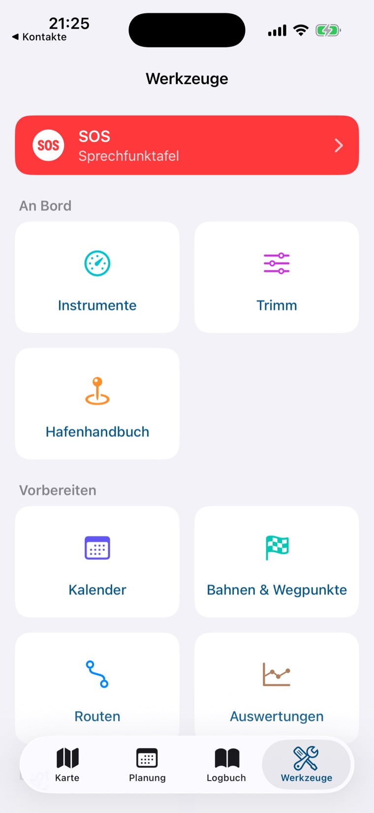
123
Werkzeuge → Hilfe & Demo: der Einstieg für den ersten Rundgang.
Demo starten — Beispieldaten plus simulierte Instrumente; bei laufender Demo steht hier „Demo aktiv“ und darunter die Demo-Stufe (Pro / Plus / Free).
Tutorials — die eingebauten Anleitungen je Bereich, teils als Tour durch die echte Oberfläche.
Feedback senden — Fehler, Idee oder Frage als vorbereitete Mail (siehe A5).
Der Demo-Modus ist der schnellste Weg durch die App. Wer keine Bordelektronik hat, sieht
so trotzdem jede Pro-Funktion in Aktion.
2. Eigenes Boot anlegen
Beim ersten Start führt ein Onboarding in vier Schritten: Boot (Name und Bootstyp genügen —
trifft der Typ eine der eingebauten Klassen, bietet die App die passende Polare gleich an),
Segel (Chips antippen: Groß, Fock, Genua, Spi, Gennaker, Code Zero), Standort
(siehe unten) und Revier offline (Kartenausschnitt schieben, Detailgrad wählen, Download
läuft im Hintergrund weiter). Danach landest du im Logbuch mit dem großen Ablegen-Knopf.
3. Standortfreigabe
Die Frage kommt genau einmal, im Onboarding — an Land, mit beiden Händen frei. Für die
Aufzeichnung im Hintergrund brauchst du später zusätzlich „Immer“; danach fragt „Ablegen“.
Wer „Später“ gewählt hat, holt es auf der Karte nach (Standort-Knopf oder der blaue Chip
„Standort erlauben“). Ohne Standortfreigabe zeichnet die App nichts auf und der MOB-Knopf hat
keine Koordinaten.
Bitte testen
Kommt das Onboarding verständlich rüber? Hast du nach den vier Schritten das Gefühl, loslegen zu
können — oder fehlt dir etwas, bevor du das erste Mal ablegst?
Sechs Punkte aus dem aktuellen Build. Alles andere ist trotzdem willkommen.
Die Karte ist die Arbeitsfläche. Der grüne Knopf auf der Karte startet Törn, Regatta
oder Training — direkt von dort, ohne Umweg übers Logbuch. Routen planst du ebenfalls auf der
Hauptkarte. Der Kartenstil „Kontrast“ ist neuer Standard: Land und Straßen zurückgenommen, damit
Track und Bahn herausstechen; die alte Optik liegt im Ebenen-Menü unter „Seekarte“.
Findest du von der Karte aus alles, was du unterwegs brauchst — oder fehlt dir irgendwo der
Weg zurück?
Bahnen aus der Community. Unter deinen eigenen Bahnen stehen jetzt welche, die mit dem
Update mitkommen, mit Veranstalter, Revier, Startverfahren und Terminen. „Beitreten“ legt eine
eigene Kopie an und trägt die Termine in den Kalender. Umgekehrt schickst du eine eigene Bahn,
einen Hafeneintrag oder eine Route über das Teilen-Menü ein („An Etmar senden“).
Ist der Weg verständlich?
Zielorte aus den Seekarten. Beim Wählen eines Ziels erscheinen auch Häfen, Marinas und
Ankerplätze aus den Seekarten-Daten — offline, nach Entfernung sortiert.
Findest du deine Stammhäfen? Stimmen VHF-Kanal und Liegeplatzzahl, die dabei ins Hafenhandbuch
übernommen werden?
Polare ohne Tipparbeit. Polardiagramme sind komplett gratis; neu ist das Einlesen des
ORC-Zertifikats als PDF — Polare, Bootsdaten und Segel in einem Schritt.
Wer ein Zertifikat hat: Kommt alles richtig an?
Wetter im Logbuch — noch experimentell. Neue Einträge belegen Wind, Böen, Luftdruck und
Wetterlage automatisch vor. Mit NMEA an Bord haben die eigenen Instrumente Vorrang.
Kommt etwas an? Leere Felder sind kein Fehler, sondern fehlendes Netz.
Ablesbarkeit an Deck. Das Wichtigste: Kannst du die Werte bei Sonne, bei Nässe und
nachts lesen? Triffst du die Knöpfe einhändig, mit nassen Fingern, bei Welle?
Alles, was dort hakt, will ich wissen.
Wer NMEA an Bord hat: vier neue Felder vom Bus — Luftdruck, Druck-Trend, Log und Trip. Beim
Druck zählt die Tendenz, nicht die Zahl: mehr als 1 hPa Fall je Stunde heißt Wind.
Die App ist vollständig zweisprachig (Deutsch und Englisch). Wer auf Englisch testet: bitte
melden, was noch deutsch steht.
Drei Wege, alle landen bei mir. Der erste ist der beste.
Aus TestFlight heraus — mit Screenshot
Mach im Moment des Problems einen Screenshot (Seitentaste + Lauter). Es erscheint kurz
eine Vorschau links unten; tippe sie an, dann auf Teilen → „Beta-Feedback senden“.
Schreib einen Satz dazu. TestFlight schickt Screenshot, Gerät, iOS-Version und Build automatisch
mit — das ist die mit Abstand nützlichste Rückmeldung. Alternativ in der TestFlight-App:
Etmar → Feedback senden.
Aus der App heraus
Werkzeuge → Hilfe & Demo → Feedback senden: Art wählen
(Fehler / Idee / Frage), schreiben, „Weiter“ — die App öffnet eine vorbereitete E-Mail. Technische
Angaben (Version, Gerät, iOS, Sprache, Stufe, Demo an/aus) hängen auf Wunsch an und stehen vorher
im Klartext auf dem Bildschirm. Keine Position, keine Törn- oder Bootsdaten. Abgeschickt wird
die Mail von dir, nie von der App.
Direkt per Mail
support@etmar.app — für alles, was länger ist als ein
Screenshot: Vorschläge, Fachliches, „das ist seemännisch falsch herum“.
Was mir am meisten hilft
Was hast du gemacht, was ist passiert, was hattest du erwartet? Dazu die Situation: an Land oder auf
See, Hand oder Halterung, Sonne oder Nacht, mit oder ohne Bordelektronik. Ein „Knopf zu klein bei
Welle“ ist ein vollwertiger Fehlerbericht.
Kein Server, kein Konto. Törns, Trimm, Häfen und Bilder liegen auf dem Gerät. Ist iCloud
aktiv, synchronisiert die App in deinen privaten CloudKit-Container — dorthin habe ich
keinen Zugriff.
Was die App nach außen schickt: Kartenkacheln und Seezeichen/Tiefen beim Laden eines
Reviers (OpenFreeMap, Overpass, EMODnet), Ortsnamen beim Geocoding, Wetter über Apple Weather.
Alles ohne Positionshistorie und nur, wenn du die jeweilige Funktion nutzt.
TestFlight-Feedback geht über Apple an mich: Text, Screenshot, Gerätemodell, iOS-Version,
Build. Apple protokolliert zusätzlich Abstürze.
iCloud ist keine Sicherung — ein Fehler wird mitsynchronisiert. Mach vor größeren
Experimenten eine Sicherungsdatei: Einstellungen → Datensicherung → Sicherung
speichern / teilen (eine Datei, alle Daten inklusive Bilder, siehe C16).
Gefahrlos ausprobierenMOB, Ankeralarm und SOS sind echte Funktionen, aber sie alarmieren niemanden außerhalb
deines Geräts — kein Notruf, keine DSC-Aussendung, kein Anruf. Du kannst sie im Hafen bedenkenlos
durchspielen. Eine Einschränkung beim Ankeralarm: Der Ton setzt derzeit ein iPhone voraus, das
nicht stummgeschaltet ist; bei gestelltem Stummschalter bleibt es bei Vibration. Verlass
dich nachts vor Anker also noch nicht blind darauf.
Drei Dinge, die alles andere erklären: wo was liegt, warum die Karte im Mittelpunkt steht und was deine Stufe freischaltet.
B1Aufbau: vier Tabs
Die Position bewegt sich nie — nass, nachts und bei Welle ist Muskelgedächtnis das Einzige, was zuverlässig funktioniert.
Karte — der Einstieg beim App-Start und die Arbeitsfläche (B2).
Kontext-Feld — ein Platz, drei Gesichter: ohne offenen Törn „Planung“
(Ablegeklarliste, Törn planen, Kalender, Bahnen, Hafenhandbuch, Routen), nach dem Ablegen
„Törn“ (nächste Etappe, Ziel, Etappenplan, Törn-Detail), bei angelegter Regatta
„Regatta“ (Bahn, Auswertung, im Rennen drei Live-Werte). Der Wechsel hängt an Ereignissen —
Ablegen, Regatta anlegen, Abschließen —, nie an einem Countdown: Die App schaltet den Tab nie
selbst um, während du hinsiehst.
Werkzeuge — alles Übrige, nach Situation gegliedert: „An Bord“ (Instrumente, Trimm,
Hafenhandbuch), „Vorbereiten“ (Kalender, Bahnen & Wegpunkte, Routen, Auswertungen), „Boot“
(Boot, Winterlager), „App“ (Einstellungen, Hilfe & Demo). SOS steht in voller Breite darüber.
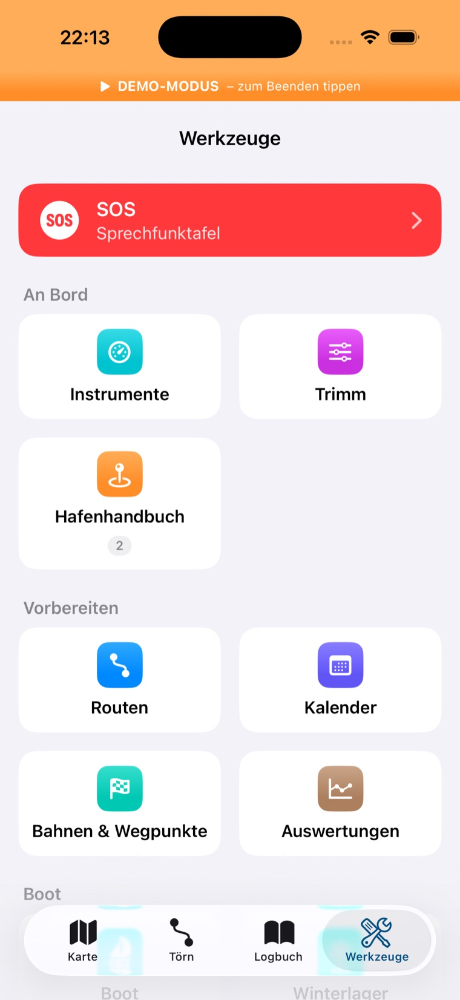
1234
Werkzeuge: nach Situation gegliedert, nicht nach Objekt.
SOS in voller Breite — die Sprechfunktafel, immer oben, immer frei.
An Bord: Instrumente, Trimm, Hafenhandbuch — was unterwegs gebraucht wird.
Vorbereiten: Kalender, Bahnen & Wegpunkte, Routen, Auswertungen. Darunter (scrollen) Boot mit Boot und Winterlager sowie App mit Einstellungen und Hilfe & Demo.
Bootswechsel: Der Bootsname steht als Titel über Karte und Logbuch und ist zugleich der
Umschalter — antippen, Boot wählen. Unter Fahrt ist er gesperrt: Läuft eine Aufzeichnung, hängt sie
am aktiven Boot.
iPad: Dieselben Ziele erscheinen als Seitenleiste statt als Tab-Leiste unten — quer am
Kartentisch bleibt die volle Fläche für die Karte. Der Instrumente-Knopf legt die Werte dort
neben die Karte statt darüber.
Nachtmodus: Mond-Symbol auf Karte, Logbuch und Dashboard oder Schalter in den
Einstellungen — legt einen roten Filter über die ganze App. Automatik „ab Sonnenuntergang“ schaltet
nach dem Sonnenstand an deiner Position. Auf der SOS-Seite ist der Filter bewusst ausgesetzt.
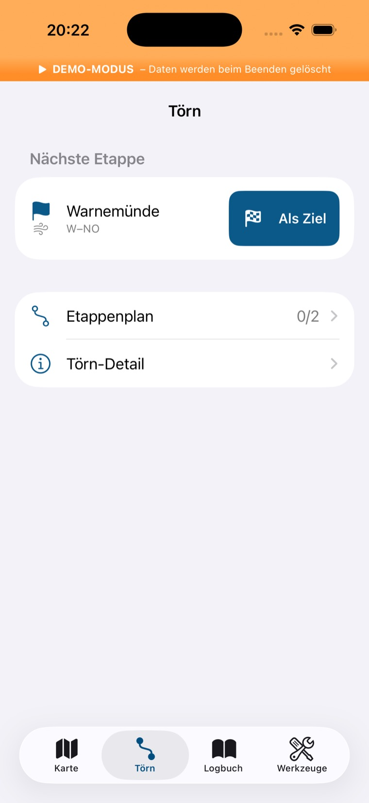
1234
Das Kontext-Feld nach dem Ablegen: Gesicht „Törn“.
Nächste Etappe aus dem Etappenplan, mit der Windbedingung der Option.
„Als Ziel“ — ein Tap wählt das Tagesziel, setzt das Go-To und den Zielort der Ankunftserkennung.
Sprung in Etappenplan und Törn-Detail.
Der zweite Tab heißt jetzt „Törn“; vor dem Ablegen „Planung“, bei angelegter Regatta „Regatta“.
Unter Fahrt bist du auf der Karte. Also liegt dort auch das Handwerkszeug.
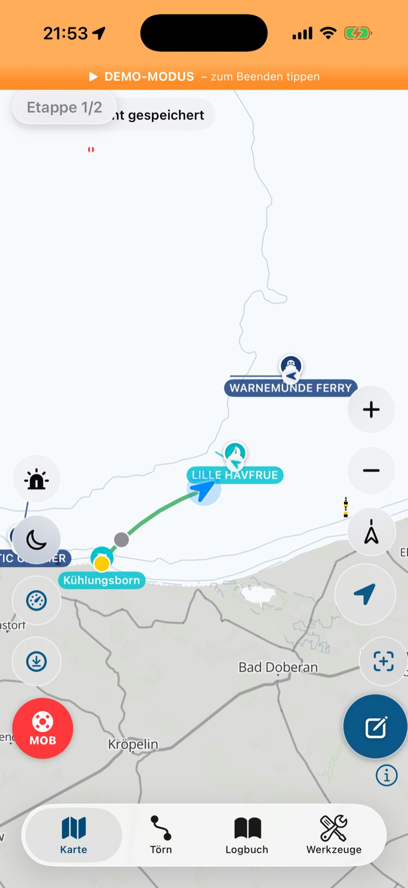
1234567
Hauptkarte bei laufendem Törn: Track in Bugfarbe, eigenes Boot als blauer Pfeil, Etappenziel als Flagge, AIS-Ziel (Fähre).
Kontextleiste — hier der Etappen-Chip (1/2) und der Hinweis „Revier nicht gespeichert“. Mit gesetztem Ziel steht hier das Go-To-Banner, im Vorstart der Countdown. Tap öffnet den Kontext-Tab.
Die Karte funktioniert auch ohne offenen Törn: Zielorte aus dem Hafenhandbuch als orange Punkte,
Seezeichen und Tiefenlinien aus den geladenen Revieren, dein Boot als blauer Pfeil mit COG-Vektor
(sechs Minuten voraus, Plotter-Konvention), grau, sobald die Position älter als zwei Minuten ist.
Die wichtigsten Griffe
Langes Drücken auf eine freie Stelle öffnet ein rundes Menü: Hafen, Ankerplatz, Wegpunkt,
Go To, Route — im Radius eines Hafens auch POI, bei offenem Törn auch Etappenziel.
Fadenkreuz-Knopf rechts: dasselbe Menü für die Bildschirmmitte — Karte schieben, bis das
Ziel unter der Mitte liegt, tippen. Mit nassen Händen der verlässlichere Griff als der lange Druck.
Standort-Knopf (unten rechts, 60 pt): zentriert auf das Boot und schaltet den Follow-Modus
ein; jede eigene Kartengeste löst ihn wieder.
Zoom-Knöpfe und „Nord oben“: Mit Handschuh ist Pinch unzuverlässig.
Instrumente-Knopf: legt die Werte zur Karte statt darüber — im Hochformat als
Datenband unten, im Querformat und auf dem iPad als Spalte rechts.
Was oben und unten liegt
Oben die Kontextleiste: unter Fahrt Ziel, Restdistanz, Ankunftszeit und Etappe; im Vorstart
und Rennen stattdessen Countdown, Abstand zur Startlinie, Time-to-burn und Linien-Bias — dieselben
Zahlen wie im Logbuch, nur dort, wo dein Boot relativ zur Linie zu sehen ist. Ein Tap öffnet den
Kontext-Tab.
Unten rechts der große runde Knopf: ohne Törn grün „Losfahren“ (Ablegen · Regatta ·
Training), bei laufendem Törn der Logbuch-Knopf mit den sechs Aktionen als Kreismenü. Gleiche
Stelle, damit der Daumen den Platz nicht neu lernen muss. MOB und Ankerwache behalten
ihre eigenen Knöpfe an fester Stelle — die müssen blind zu treffen sein.
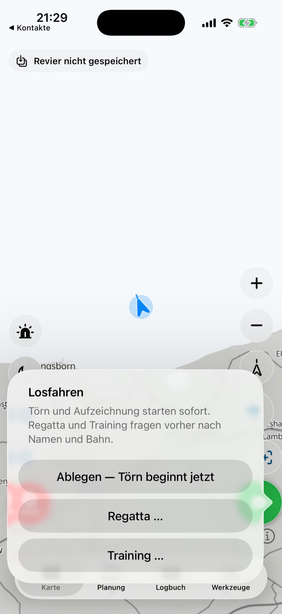
123
Ein Knopf, drei Wege: Der grüne Losfahren-Knopf ohne offenen Törn.
Ablegen — Törn und Aufzeichnung starten sofort, ohne Formular; der Rückgängig-Balken nimmt einen Fehltouch zurück.
Regatta … — öffnet das Regatta-Formular (Name, Startschuss, Bahn). Bei Schwerpunkt „Regatta“ steht diese Zeile oben.
Training … — legt ein Training mit Messläufen an (C8).
Kein Modus überlebt einen App-Start: Wer nachts die App öffnet, bekommt die Navigationskarte, nie
ein Werkzeug von gestern.
Kein Gate auf dem Weg nach außen — Export, Bericht, Teilen sind frei; dort wird nur die
Qualität gestaffelt.
Stufe
Was dazukommt
Preis
Free
Logbuch mit Auto-Tracking, Trimm-Tagebuch, Hafenhandbuch, SOS, Winterlager, Kalender, Karte mit
Seezeichen und Tiefen, zwei Offline-Pakete, Regatta anlegen und fahren mit Countdown, Linien-Ping,
Kernzahlen der Auswertung, Polardiagramme, PDF-Bericht und Törn-Story, GPX-Export
—
Plus
Alles aus dem iPhone-GPS: eigene Instrumentenseiten und Smart Fields, Routen starten,
Linien-Bias, Regatta-Auswertung (Startbilanz, Marken- und Schenkelzeiten, Manöver einzeln,
SOG-Verlauf), Messläufe mit A/B-Vergleich, Offline-Karten ohne Grenze und in „Fein“,
Kartenbild im PDF-Bericht
19,99 €/Jahr · 3,99 €/Monat
Pro
Alles, was Bordinstrumente braucht: NMEA-Verbindung (2000 und 0183), volles Dashboard mit
Segelkompass, Wind an jedem Trackpunkt (Bug-Färbung, Wind-Tagesbericht), taktische Auswertung mit
VMG und Polar-Leistung, Live-Werte im Rennen, AIS mit CPA-Warnung, Laylines, Tiefenalarm,
RAW-Aufzeichnung
39,99 €/Jahr · 7,99 €/Monat
Jahresabos haben zwei Wochen kostenlos. Gesperrte Funktionen sind sichtbar mit Schloss
markiert und öffnen die Paywall mit genau der Funktion, von der du kamst — nichts verschwindet
stillschweigend, und keine Oberfläche fehlt nur, weil die Stufe fehlt.
In der Beta
Unter Einstellungen → Stufe & Demo lässt sich bei laufender Demo die
Demo-Stufe wählen: Pro, Plus oder Free. Damit spielst du jede Stufe durch, ohne etwas zu
kaufen — samt Schlössern und Paywall. Genau dafür ist sie da: Sagt dir die Free-Fassung, was sie
kann? Versteht ein Plus-Nutzer, wo Pro anfängt?
Jeder Bereich der App in einem Artikel: was er tut, wie du ihn bedienst, was du beim Testen prüfen kannst. Screenshots mit nummerierten Hervorhebungen — die Nummern erklärt die Liste daneben.
C1Logbuch & Törn
Vom Ablegen bis zum fertigen Törnbericht: Wie ein Törn entsteht, was du unterwegs mit einem Tap festhältst, wie die Aufzeichnung im Hintergrund läuft und wie du im Hafen Track und Einträge in Ruhe nacharbeitest.
Ablegen – ein Tap oder gar keiner
Ein Tipp auf Logbuch → Ablegen genügt (auf der Karte ist es der grüne Losfahren-Knopf, siehe B2). Die App legt sofort den Törn und den ersten Eintrag vom Typ „Ablegen“ an. Es öffnet sich kein Formular, alles Weitere kommt von selbst:
GPS-Position, Kurs und Fahrt werden im Hintergrund erfasst und nachgetragen.
Der Törn wird nach dem nächstgelegenen Ort benannt (z. B. „Törn Kühlungsborn – 08.08.2026“), der Eintrag heißt dann „Ablegen: Kühlungsborn“.
Die zuletzt gesetzten Segel des vorherigen Törns werden übernommen – ohne Downwind-Segel, mit Gennaker legt niemand ab.
Auto-Tracking startet sofort.
Ablegen unter Motor (Schalter unter dem Knopf, Standard an) erzeugt zusätzlich einen „Motor an“-Eintrag: Die Hafenausfahrt zählt ab der ersten Sekunde als Motorstrecke (gelb auf der Karte, Motorstunden in der Statistik), und der Motor-Knopf steht danach auf „Motor aus“ für den Moment des Segelsetzens. Die Wahl gilt genauso im Eintragsformular (Typ „Ablegen“) und beim automatisch erkannten Ablegen; die App merkt sie sich.
Wetter, Bilder oder Notizen ergänzt du jederzeit später über den Eintrag unter „Letzte Einträge“. Ein versehentlich abgeschlossener Törn lässt sich im Törn-Detail wieder öffnen – wichtig bei Mehrtagestörns.
Bewegungs-Autostart. Auch wer nichts tippt, bekommt ein Logbuch: Ist Auto-Tracking aktiv, aber noch kein Ablege-Eintrag da („Wartet auf Ablegen“), beobachtet die App das GPS. Macht das Boot länger als eine Minute durchgehend Fahrt (über 1,5 kn), entsteht automatisch ein Ablege-Eintrag – rückdatiert auf den Fahrtbeginn – und die Aufzeichnung beginnt. Die Minute Karenz filtert Verholen im Hafen und GPS-Ausreißer heraus. Eine Mitteilung auf dem Sperrbildschirm bestätigt: „Ablegen erkannt – Auto-Tracking zeichnet jetzt auf.“
HinweisDer Autostart setzt voraus, dass die App in diesem Moment NMEA-Daten empfängt (echtes Bordnetz oder Demo-Modus). Nur so ist sicher, dass sich das Handy mit dem Boot bewegt – Handy-GPS allein kann eine Auto- oder Radfahrt nicht von Bootsfahrt unterscheiden. Ohne NMEA-Daten zeigt die Statuszeile „Wartet auf Ablegen-Eintrag“, und der Törn startet über den Ablegen-Knopf oder einen manuellen Eintrag.
Unterwegs: die Quick-Buttons
Läuft das Tracking, schrumpft das Törn-Karussell oben im Logbuch zu einer Zeile: Törnname · Dauer · GPS-Güte (±m, orange über 30 m) · Trackpunkte · SOG/COG groß rechts. So stehen die großen Aktionsknöpfe auch auf kleinen Geräten ohne Scrollen bereit. Ein Tipp auf die Zeile öffnet die Karte, der Chevron klappt die Vorschau wieder auf; im Hafen bleibt das Karussell wie gewohnt. Unter Fahrt erreichst du dieselben Aktionen auch direkt auf der Karte über den Logbuch-Knopf unten rechts (B2).
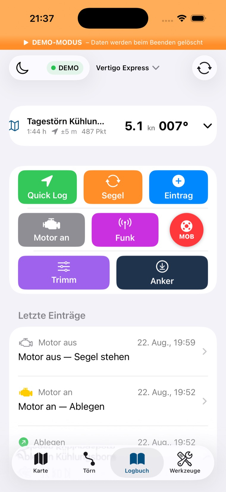
12345
Logbuch bei Fahrt: Das Karussell ist zur Kompaktzeile geschrumpft, darunter die Quick-Buttons und die letzten Einträge.
Kompaktzeile — Törnname, Dauer, GPS-Güte (±m), Trackpunkte, SOG/COG. Tipp öffnet die Karte, der Chevron klappt die Vorschau auf.
Quick Log — ein Tap, ein Positions-Eintrag mit GPS, Kurs und Fahrt; kein Formular.
Eintrag — das volle Formular für einen Ereignis-Eintrag, rückdatierbar, mit Bildern.
Motor an / aus — zeigt immer die nächste Aktion; gelb, solange der Motor läuft.
Letzte Einträge — hier ergänzt du später Wetter, Fotos und Notizen zu jedem Eintrag.
Quick Log (grün): ein Tap, ein Positions-Eintrag mit aktueller GPS-Position, Kurs und Fahrt. Segel und Wetter-Freitext kommen vom letzten Eintrag; Wind nur frisch aus dem NMEA-Netz (höchstens 60 s alt), sonst bleibt das Feld leer – alte Windwerte werden nie fortgeschrieben, das gilt auch für Segelwechsel und das Eintragsformular. Kein Formular, Haptik bestätigt.
Segel (orange): die aktuelle Garderobe antippen, fertig. Jede Segel-Zeile ist ganzflächig tappbar (Häkchen links); ab fünf Segeln öffnet das Blatt direkt voll statt halbhoch. Ergibt einen Ereignis-Eintrag mit der neuen Segelkombination.
Eintrag (blau): das volle Formular für einen Ereignis-Eintrag – Typ, Zeitpunkt (rückdatierbar), Titel, GPS (automatisch, manuell korrigierbar), Segel, Wetter/Wind, Bilder aus Galerie oder Kamera und Notizen.
Motor an / Motor aus (gelb/grau): ein Tap erzeugt sofort den passenden Motor-Eintrag, kein Formular. Der Knopf zeigt immer die nächste Aktion und leuchtet gelb, solange der Motor läuft. Die Strecke zwischen „Motor an“ und „Motor aus“ ist auf der Törn-Karte gelb.
Funk (lila): öffnet das Eintragsformular mit Typ „Funkspruch“ – Station, Kanal und Vereinbarung kommen in die Notiz. Funkkontakte gehören ins Logbuch; im Streitfall zählt die Dokumentation.
Anlegen (türkis): der Abschluss mit einem Tap. Bei einem Tagestörn schließt die App sofort ab (Ankunfts-Eintrag, rückdatiert auf den Stillstand, Rückgängig-Balken statt Rückfrage). Bei einem Mehrtagestörn – offene Etappen oder Start vor heute – fragt ein Dialog: „Anlegen (Etappe)“, der Törn bleibt offen, oder „Törn abschließen“.
MOB und Anker liegen ebenfalls in der Knopfgruppe, an festem Platz – beide sind in C13 beschrieben. „Trimm“ hält den aktuellen Trimm fest und gehört zum Trimm-Tagebuch.
Wetter kommt von selbst. Beim Anlegen eines Eintrags werden Wind, Böen, Luftdruck und Wetterlage automatisch vorbelegt (Apple Weather; ohne Netz bleiben die Felder einfach leer, ein Attributions-Link steht unter dem Abschnitt). Die Funktion ist derzeit als experimentell gekennzeichnet – kommt nichts an, trägst du wie gewohnt von Hand ein. Sicht und Temperatur bleiben immer Handeinträge. Mit Bordelektronik Pro haben die eigenen Instrumente Vorrang: Bus-Wind und Bus-Barometer füllen die Felder, und beim Abschließen des Törns wird der Wind von Ablege- und Ankunfts-Eintrag aus den ersten bzw. letzten zehn Minuten der Aufzeichnung gemittelt – der Momentwert im Hafen ist Böe und Abdeckung, das Mittel draußen der ehrliche Wind. Von Hand eingetragener Wind bleibt dabei immer stehen.
Fotos liegen vollständig in der App: Jedes Bild wird beim Sichern auf Bildschirmgröße gerechnet und lokal abgelegt – es ist auch ohne Netz scharf und bleibt erhalten, wenn die Fotomediathek später aufgeräumt wird. Auf die übrigen Fotos des Geräts greift Etmar nicht zu; mit der Kamera aufgenommene Fotos werden zusätzlich in der Mediathek gesichert. Bei mehreren Bildern in einem Eintrag: Bild gedrückt halten und „Als Vorschaubild“ wählen (Stern) – dieses Bild erscheint als Foto-Pin auf der Karte.
Fehltouch folgenlos. Nach jeder Ein-Tap-Aktion – Quick Log, Motor an/aus, Ablegen, Törn abschließen, Start- oder Ziellinie pingen – erscheint 6 Sekunden lang ein großer Rückgängig-Balken am unteren Rand; die ganze Fläche ist tippbar. Ein Tipp nimmt die Aktion zurück: Eintrag gelöscht, Törn wieder offen und Tracking wieder an, Ping auf dem vorherigen Stand. Bestätigungsdialoge vor der Aktion gibt es bewusst nicht – die kosten an Deck Blickzeit; die Rücknahme danach ist der bessere Schutz. Im Dialog „Offener Törn vorhanden“ ist das Abschließen als destruktiv markiert (roter Knopf).
Formulare schützen Eingaben. Runterwischen oder „Abbrechen“ fragt in jedem Formular nach, sobald wirklich etwas Ungesichertes drin ist – und nur dann; unveränderte Formulare schließen mit einem Tap. Zahlenfelder nehmen Komma und Punkt gleichermaßen. Und Speichern schlägt nie still fehl: Geht ein Datenbank-Save schief, erscheint in jedem Screen ein roter Balken „Speichern fehlgeschlagen – Änderung eventuell verloren“, tippbar zum Wegwischen, sonst 8 Sekunden sichtbar.
Alle Einträge lassen sich nachträglich bearbeiten. Das ist der gedachte Weg: auf See nur das Nötigste, im Hafen in Ruhe ergänzen.
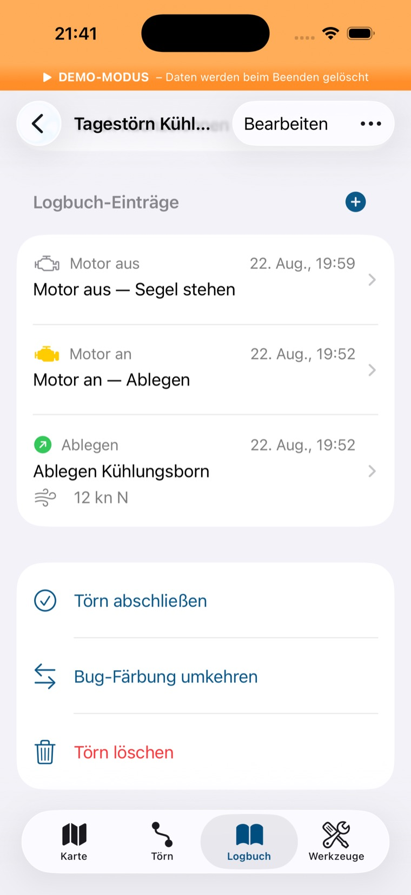
1234
Die Einträge eines Törns: Typ-Symbol, Zeit und – wo vorhanden – Wind. Jeder Eintrag ist antippbar und nachträglich bearbeitbar.
Motor-Einträge — jeweils ein Tap auf den Motor-Knopf; die Strecke dazwischen ist auf der Karte gelb.
Ablege-Eintrag — automatisch nach dem Ort benannt, mit Windangabe („12 kn N“).
Törn abschließen — setzt das Enddatum und stoppt das Tracking; Wiedereröffnen ist jederzeit möglich.
Bug-Färbung umkehrenPro — dreht die Zuordnung rot/grün der Bug-Färbung auf der Törn-Karte um; die Färbung selbst braucht Winddaten vom NMEA-Netz.
Auto-Tracking
Auto-Tracking zeichnet die Route im Hintergrund als GPS-Trackpunkte auf – auch bei gesperrtem Bildschirm und nach einem App-Neustart. Es wird beim Ablegen automatisch aktiviert (auch im Eintragsformular steht der Schalter bei einem neuen Ablege-Eintrag immer auf „an“ – wichtig bei Mehrtagestörns, weil die Ankunft das Tracking stoppt) und arbeitet stromsparend mit adaptiven Intervallen:
In Fahrt (über 1,5 kn): ein Punkt alle 30 Sekunden, bei Regatten alle 5 Sekunden.
Im Stillstand: alle 5 Minuten. Nach 30 Minuten ohne Bewegung pausiert das Tracking automatisch (alle 10 Minuten ein Punkt) und läuft bei Fahrt sofort weiter.
Gespeichert wird in Batches von 10 Punkten – das schont den Akku zusätzlich.
Die Statuszeile im Logbuch sagt, was passiert: „Aktiv“ (grün, mit Trackpunkt-Zähler), „Wartet auf Ablegen – startet bei Fahrt automatisch“, „Pausiert“ oder rot „Keine GPS-Berechtigung – es wird nicht aufgezeichnet“ mit direktem Sprung in die iOS-Einstellungen. Auch Speicherfehler und ein aktiver Stromsparmodus werden angezeigt. Mit NMEA-Verbindung Pro wird zu jedem Trackpunkt zusätzlich der wahre Wind und der Bug (Steuerbord/Backbord) gespeichert – die Basis für Bug-Färbung und Regatta-Auswertung. Die Position kommt dabei immer vom iPhone-GPS: Reißt die NMEA-Verbindung ab, läuft die Aufzeichnung nahtlos weiter; für Bug-Färbung und Auswertung werden die zuletzt bekannten Winddaten bis zu 30 Minuten weiterverwendet, danach bleiben die Punkte windlos, statt mit veralteten Werten zu raten.
Robustheit und Diagnose. Während der Aufzeichnung läuft ein Significant-Location-Anker: Beendet iOS die App (Speicherdruck, Absturz), weckt eine deutliche Ortsänderung sie wieder, und das Tracking wird beim Prozessstart wiederhergestellt – nicht erst beim nächsten Öffnen. Kommt 5 Minuten kein GPS-Fix, warnt eine Mitteilung. Alle Zustandswechsel, App-Starts, Vorder-/Hintergrund, GPS-Berechtigung, GPS-Stille und Speicherfehler landen im Protokoll unter Einstellungen → Tracking-Diagnose – eine Textdatei, teilbar, ohne Positionen. Damit lassen sich Lücken im Nachhinein erklären.
WichtigRot in der Statuszeile heißt: Es wird nichts aufgezeichnet. Bei „Keine GPS-Berechtigung“ führt der Sprung direkt in die iOS-Einstellungen; auch ein aktiver Stromsparmodus wird angezeigt. Prüfe die Statuszeile einmal nach dem Ablegen – ein Blick, bevor das Handy in die Tasche wandert.
Törn-Ende: Etappe oder endgültig
Beim Anlegen unterscheidet die App zwei Eintragstypen: „Anlegen (Etappe)“ für den Zwischenstopp – die Aufzeichnung stoppt, der Törn bleibt offen, am nächsten Morgen geht es ohne Umwege weiter – und „Ankommen“ für das endgültige Anlegen, das den Törn abschließt. Beide sind auch im Eintragsformular wählbar; ein manuell erstelltes „Ankommen“ schließt den Törn ebenfalls.
Wichtigste Regel: Jede automatisch erkannte Ankunft ist ein Etappen-Anleger. Die Automatik schließt einen Törn nie versehentlich, niemand muss ihn wieder öffnen. Endgültig wird es automatisch nur an der Endstation:
Endstation: Im Törn-Formular (Törn-Detail → Bearbeiten) legst du einen Zielhafen fest – meist den Ausgangshafen – mit Ankunftsradius, optional mit Zeitraum „Rückkehr ab/bis“. Kommt das Boot dort an, nachdem es den Radius einmal verlassen hat (und, falls gesetzt, innerhalb des Zeitraums), entsteht das abschließende „Ankommen“ und der Törn wird geschlossen.
Etappen-Erkennung: Läuft das Boot langsam (unter 1,5 kn) in den Ankunftsradius eines Hafenhandbuch-Ziels, des gewählten Etappenziels oder des Tracking-Zielorts ein, entsteht automatisch ein „Anlegen (Etappe)“. Der Abfahrtshafen zählt erst, nachdem du ihn einmal verlassen hast; schnelles Vorbeisegeln an einer Hafeneinfahrt löst nichts aus.
Stillstands-Vorschlag: Liegt das Boot über zwei Stunden still, schlägt die App vor, den Törn abzuschließen – als Knopf im Logbuch („Angekommen? Törn abschließen“) und als Mitteilung auf dem Sperrbildschirm. Der Abschluss erstellt einen rückdatierten Ankunfts-Eintrag auf den Zeitpunkt, als das Boot zum Stehen kam. Der Vorschlag bleibt als Hervorhebung am Anlegen-Knopf stehen.
Zielort-Auswahl: Bei Endstation, Tagesziel und Etappen stehen neben dem eigenen Hafenhandbuch und der Ortssuche auch die Häfen, Marinas und Ankerplätze aus den Seekarten-Daten zur Wahl – offline, nach Entfernung sortiert, direkt auf der Karte antippbar. Ein so gewählter Hafen landet mit Kategorie, VHF-/Liegeplatz-Notiz und passendem Ankunftsradius im Hafenhandbuch (Ankerplatz: 150 m statt 90 m). Namenlose Ankerplätze heißen schlicht „Ankerplatz“; als Ankerverbot markierte Flächen werden gar nicht erst angeboten.
123
Der Kontext-Tab mit dem Gesicht „Törn“: der kurze Weg zu Etappenziel, Etappenplan und Törn-Detail während der Fahrt.
Nächste Etappe — Zielhafen mit Windbereich; „Als Ziel“ macht ihn zum Navigationsziel, Restdistanz und Ankunftszeit stehen dann in der Kontextleiste über der Karte.
Etappenplan — Zwischenstopps und Endstation des Törns, siehe C2.
Törn-Detail — Zusammenfassung, Export, Karte und alle Einträge.
Sperrbildschirm: Live-Aktivität und Mitteilungen
Während der Aufzeichnung läuft eine Live-Aktivität auf dem Sperrbildschirm und in der Dynamic Island: Segelboot-Symbol, Törn-Name, die gefahrene Distanz seit dem letzten Ablegen (in nm, groß rechts) und die Ø-Geschwindigkeit seit Ablegen in der Statuszeile („Ø 5,2 kn seit Ablegen“). Solange noch keine Strecke zusammengekommen ist, steht rechts der Trackpunkt-Zähler. Bei Regatten zeigt sie den Startschuss-Countdown sekundengenau und nach dem Start die laufende Rennzeit. Handy weglegen, ein Blick genügt – und der Blick ist ehrlich: Kommt 15 Minuten kein Update (App abgestürzt oder von iOS beendet), dimmt die Anzeige und sagt „Keine aktuellen Daten – App öffnen“, statt weiter „Aufzeichnung läuft“ zu behaupten; das kompakte Insel-Symbol wird ein graues Ausrufezeichen statt des grünen Aufnahme-Punkts.
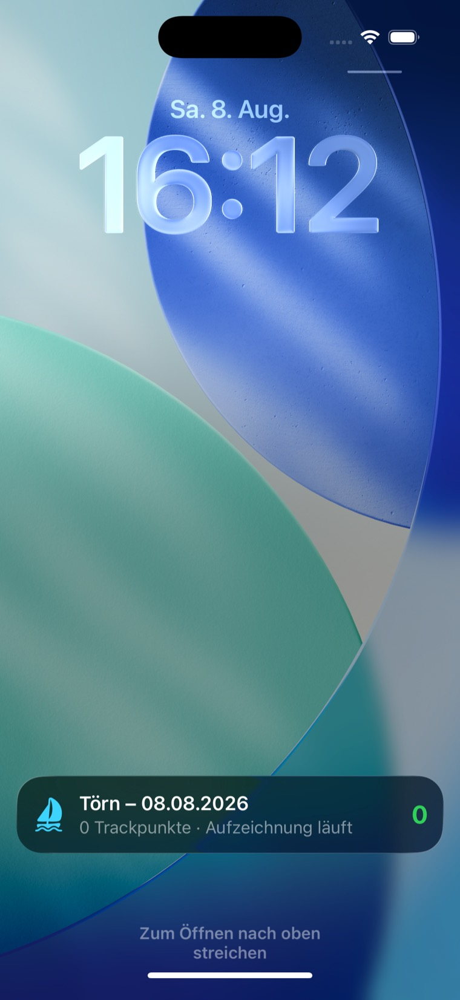
12
Live-Aktivität direkt nach dem Ablegen: Der Törn-Status ist ohne Entsperren lesbar.
Törn-Name und Statuszeile — Trackpunkte bzw. später „Ø … kn seit Ablegen“; bleibt 15 Minuten ohne Update, dimmt die Anzeige und fordert zum Öffnen auf.
Großer Wert rechts — die gefahrene Distanz seit dem Ablegen in nm; solange noch keine Strecke da ist, der Trackpunkt-Zähler.
Damit du dem Handy in der Tasche vertrauen kannst, meldet sich die App bei wichtigen Ereignissen mit lokalen Mitteilungen (kein Server, keine Datenweitergabe):
Ablegen erkannt / Ankunft erkannt (mit Zielname).
Tracking-Probleme: Trackpunkte können nicht gespeichert werden; GPS-Berechtigung wurde entzogen; 5 Minuten kein GPS-Fix.
„Törn abschließen?“ nach zwei Stunden Stillstand – funktioniert auch, wenn iOS die App beendet hat.
Regatta: Beginn der Vorstartphase und Startschuss.
Die Berechtigung für Mitteilungen wird erst angefragt, wenn Tracking oder eine Regatta aktiviert wird – nicht beim App-Start.
Törn-Detail: Export, Karte und Nachbearbeitung
Das Törn-Detail erreichst du aus dem Karussell (Vorschau antippen öffnet die Törn-Karte, „Zurück“ führt ins Detail), über „Alle Törns“ oder über den Kontext-Tab „Törn“. Es bündelt alles zu einem Törn: Zusammenfassung (Status, Zeitraum, Dauer, Distanz, Ø SOG, Motorzeit, Max-Wind, gefahrene Segelkombinationen), den Etappenplan, den Auto-Tracking-Schalter, die Karte, den Tagesbericht und alle Einträge chronologisch. „Bearbeiten“ öffnet das Törn-Formular, in dem du die Endstation und den Rückkehr-Zeitraum festlegst.
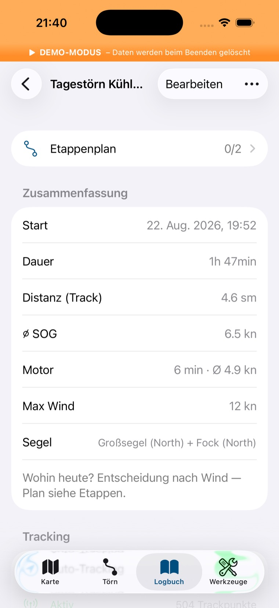
123
Törn-Detail eines Tagestörns: Etappenplan-Zugang oben, darunter die Zusammenfassung; weiter unten folgen Tracking, Karte und Einträge.
Bearbeiten — Törn-Formular mit Endstation (Zielhafen mit Ankunftsradius) und „Rückkehr ab/bis“.
Etappenplan — Zwischenstopps und Endstation des Törns, siehe C2.
Zusammenfassung — Start, Dauer, Track-Distanz, Ø SOG, Motorzeit mit Ø-Fahrt, Max-Wind, Segelkombination und Notiz.
Export über das Teilen-Menü im Törn-Detail – alles läuft über das System-Teilen-Blatt:
Logbuch als Text (.txt) – alle Einträge als Klartext.
Track als GPX – der aufgezeichnete Track als GPX-Datei.
Rohdaten (CSV) – jeder Trackpunkt als Tabellenzeile: Zeit, Position, SOG/COG und, wo ein NMEA-Bus mitschrieb, STW, HDG, Wind, Krängung; Lücken bleiben leer statt erfunden. Bei Regatten zusätzlich Markenzeiten (CSV) mit den gestempelten Durchfahrten und Schenkelzeiten. Komma-getrennt mit Dezimalpunkt, für Excel, Numbers oder Python.
PDF-Törnbericht – A4; Seite 1 mit Kartenbild des Tracks, Kennzahlen (Distanz, Dauer, Ø/Max SOG, gesegelt, Motor), Regatta-Zeile und Notizen; ab Seite 2 alle Einträge chronologisch mit Position, SOG/COG, Wind, Druck, Wetter, Segeln, Notiz und bis zu drei Foto-Thumbnails. Ohne Plus steht auf Seite 1 eine Track-Skizze mit Nordpfeil; das echte Kartenbild Plus kommt offline aus den gespeicherten Karten-Paketen, sonst aus dem Netz (ohne beides ebenfalls die Skizze).
Törn-Story (Bild) – ein 1080 × 1350-Hochformat: Karte oben, dunkles Panel mit Name, Datum, Distanz/Dauer/Max SOG, zum Teilen in Messenger oder Social Media.
Bericht und Story sind bewusst frei – sie tragen den Törn zur Crew und in den Verein.
Die Törn-Karte öffnet so gezoomt, dass der komplette Track im Bild ist, mit nummerierten Pins pro Eintrag (Tipp öffnet Details samt Fotos). Die Pins skalieren mit dem Zoom: nah groß mit Nummer, weit herausgezoomt kleine Punkte in Typfarbe. Einträge mit Fotos zeigen beim Reinzoomen ihr Vorschaubild statt des Punkts, mit Nummer und Umrandung in der Ereignisfarbe; weiter draußen bleiben es Punkte mit Kamera-Symbol. Richtungspfeile entlang des Tracks zeigen, in welche Richtung gefahren wurde. Motorstrecken sind immer gelb. Mit Winddaten Pro wird der Track nach Bug gefärbt (Pastelltöne; Standard: rot = Wind von Steuerbord, grün = Wind von Backbord; umkehrbar über „Bug-Färbung umkehren“ im Törn-Detail, die Legende zeigt immer die aktuelle Zuordnung) – Kreuzschläge und Halsen sind auf einen Blick zu sehen. Der Tagesbericht Pro zeigt den wahren Wind je Stunde mit Richtungspfeil und Ø/Max-Geschwindigkeit, bei Mehrtagestörns pro Tag gruppiert. Bei offenem Törn stehen die offenen Etappenziele als türkise Flaggen auf der Karte; abgeschlossene Törns zeigen keine Ziele. Ereignis-Pins lassen sich direkt aus dem Karten-Sheet bearbeiten („Bearbeiten“-Knopf) – auch bei abgeschlossenen Törns. Häfen, Seezeichen, eigenes Boot und alle Karten-Griffe verhalten sich genau wie auf der Hauptkarte (B2, C3).
Der Knopf oben rechts schaltet in die Törn-Story: einfarbiger Track, Ereignisse als Fotos mit Nummern, Richtungspfeile – die aufgeräumte Ansicht zum Erinnern und Teilen (z. B. per Screenshot), ohne Legende, Etappenziele und Häfen; die Trackpunkt-Inspektion per Tap bleibt. Die Wahl wird pro Törn gemerkt, die Karte öffnet beim nächsten Mal in der zuletzt gewählten Ansicht; den Standard für Törns ohne eigene Wahl setzt „Karte öffnet mit“ in den Einstellungen.
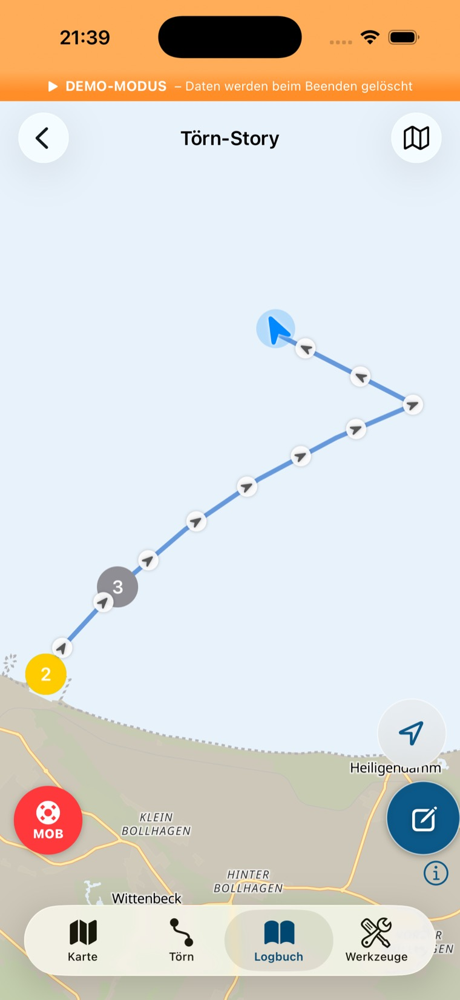
123
Törn-Story eines laufenden Törns: ein Track in einer Farbe, nummerierte Ereignisse, Pfeile in Fahrtrichtung – sonst nichts.
Umschalter — wechselt zwischen Törn-Story und der technischen Ansicht mit Legende, Bug-Färbung und Etappenzielen; die Wahl wird pro Törn gemerkt.
Ereignis-Pins — nummeriert in Typfarbe; Einträge mit Foto zeigen beim Reinzoomen ihr Vorschaubild. Tipp öffnet Details samt Fotos.
Richtungspfeile — zeigen entlang des Tracks, in welche Richtung gefahren wurde.
Nachbearbeitung. Der Grundsatz „auf See nur das Nötigste, im Hafen in Ruhe nacharbeiten“ gilt auch für den Track selbst:
Trackpunkt-Inspektion: Tippe auf eine beliebige Stelle des Tracks – der nächstgelegene Trackpunkt zeigt ein kleines Boot in Fahrtrichtung, daneben einen dezenten Pfeil aus der Richtung, aus der der Wind in dem Moment aufs Boot kam. Die Datenkarte am unteren Kartenrand liefert Zeit, SOG, COG, wahren Wind und Bug (Wind von Stb/Bb). „Eintrag hier erstellen“ macht daraus nachträglich einen Logbuch-Eintrag – Zeit, Position und Fahrtdaten des Trackpunkts sind vorbelegt.
Track nachzeichnen: Fehlt ein Abschnitt (Tracking vergessen, kein GPS), findet „Track nachzeichnen“ im Törn-Detail die Lücken automatisch: Zeitsprünge über 10 Minuten sowie fehlende Stücke vor dem ersten und nach dem letzten Punkt. Als Lücke zählt nur, was auch Strecke gemacht hat (mindestens 250 m) – Liegezeiten im Hafen oder vor Anker tauchen nicht als Pseudo-Lücken auf. Lücke wählen, Punkte per langem Drücken setzen; sie verbinden sich in Zeichenreihenfolge. Uhrzeiten und Geschwindigkeiten werden aus der gezeichneten Distanz und der Fahrt der Randpunkte zurückgerechnet (Fallback 5 kn, gedeckelt auf die Lückendauer – Lücken mit Liegezeit erzeugen keine tagelangen Kriechfahrten), der Wind der Randpunkte wird interpoliert und liefert die Bug-Färbung; eine von Hand eingegebene Windrichtung hat Vorrang. Enthält die Lücke Liegezeit, wird die Segelzeit an den passenden Rand gelegt und die Naht mit einem Liegepunkt geschlossen – es bleibt keine Rest-Lücke übrig. Nachgezeichnete Abschnitte bleiben erkennbar: dünner und blasser auf der Karte, in der Trackpunkt-Karte als „nachgezeichnet“ ausgewiesen.
Lückenliste mit Vorschlag: Lücken der Art „Wahrscheinlich durchgehend gesegelt“ (Kurs vor und nach der Lücke passt zur Verbindung – bis 45° je Seite –, plausible Fahrt von 1,5–12 kn, Linie nicht gegen den Wind) füllst du nach Sichtprüfung mit einem Tap „Verbindung übernehmen“ – ohne Punkte zu setzen. Die Verbindung ist keine harte Gerade: Die Kursvektoren vor und nach der Lücke werden verlängert, bis sie sich treffen, und der Schnittpunkt wird zur Rundung – der Track sieht aus wie durchgezeichnet (ohne Kursdaten weiterhin eine Gerade). „Manuell nachzeichnen“ (An-/Ablegemanöver, Kurswechsel in der Lücke, Kreuz gegen den Wind, Pausen) bleibt Handarbeit; die Begründung steht an jeder Lücke.
Lücke durch Ablegen: Hat der Bewegungs-Autostart die Aufzeichnung erst bei Fahrt begonnen, fehlt das kurze Stück ab dem Liegeplatz – erkennbar am Ablege-Eintrag im Lückenfenster. „Ablegen korrigieren & auffüllen“ schiebt den Ablege-Eintrag an den Liegeplatz (die Anlegeposition davor) und füllt die Strecke gerade auf – zeitlich ab dem Ablegezeitpunkt, die Liegezeit wird nicht zur Kriechfahrt. Fehlt mehr als etwa 2 km Strecke, bleibt die Lücke bewusst bei „Manuell nachzeichnen“. Auch ein nachträglich verschobener Ablege-Eintrag wird als Lücke erkannt; beim Auffüllen werden die Zeiten rückwärts gerechnet und der Eintrag zeitlich mitgezogen.
Abschnitt frei wählen: Zwei Punkte auf dem Track antippen und die Strecke dazwischen neu zeichnen – etwa um GPS-Ausreißer oder Zickzack zu ersetzen. Die vorhandenen Punkte zwischen den Rändern werden erst nach ausdrücklicher Bestätigung ersetzt; die Ränder selbst bleiben erhalten.
Eintrag-Position verlegen: Im Bearbeiten-Formular eines Eintrags öffnet „Position auf Karte wählen“ eine Karte mit dem Törn-Track als Referenz. Langes Drücken setzt die neue Position (erneutes Drücken überschreibt), „Position übernehmen“ bestätigt – präziser und schneller als Breiten- und Längengrad einzutippen.
HinweisZum Ausprobieren ohne eigene Lücke: Im Demo-Törn Kühlungsborn–Gedser steckt ein 29-Minuten-Aussetzer auf dem Vorwind-Schlag – ideal, um „Verbindung übernehmen“ und das manuelle Nachzeichnen einmal durchzuspielen.
Bitte testen
Lege einmal per Knopf und einmal nur durch Losfahren ab (NMEA muss dafür laufen): Stimmen Ablegezeit, Ortsname und die übernommenen Segel? Kam die Mitteilung „Ablegen erkannt“?
Handy in die Tasche, ein paar Stunden segeln, danach den Track ansehen: Gibt es Lücken? Wenn ja, bitte sofort Einstellungen → Tracking-Diagnose teilen und dazusagen, ob das Handy zwischendurch gesperrt, im Stromsparmodus oder ohne Netz war.
Am Ziel: Hat die Etappen-Erkennung bzw. der Stillstands-Vorschlag den richtigen Zeitpunkt getroffen – und hat die Automatik den Törn nie ungefragt abgeschlossen?
Der Etappenplan beantwortet auf dem Törn die Frage „Wohin geht es als Nächstes?" — geplant wird zu Hause, entschieden wird auf See mit einem Tap.
Wo du ihn findest
Der Etappenplan gehört zu einem Törn. Du öffnest ihn über Törn-Detail → Etappenplan; die Zeile trägt eine Fortschrittsanzeige, z. B. „2/2". Bei laufendem Törn zeigt außerdem das Kontext-Feld „Törn" die nächste offene Etappe direkt an — dazu unten mehr.
Planen an Land
Ein Etappenplan ist eine Folge von Etappen in fester Reihenfolge. Jede Etappe kann eine oder mehrere Ziel-Optionen haben — das ist der Kern: „Bei W-Wind nach Gedser, bei O-Wind nach Klintholm." Welche Option gilt, entscheidest du erst am Tag selbst.
Etappe anlegen über das + oben rechts. Die Etappen sind durchnummeriert und bilden die Reihenfolge des Törns.
Ziel wählen: „Ziel hinzufügen" führt zur Suche oder ins Hafenhandbuch. Ein Hafen aus dem Hafenhandbuch bringt seinen Ankunftsradius mit — den braucht die App später, um die Ankunft zu erkennen.
Optional eine Windbedingung setzen: ein Richtungssektor von–bis in acht Himmelsrichtungen (auch über Nord hinweg, z. B. NW bis NO) und eine maximale Windstärke. „Max 25 kn" heißt: Ab 25 Knoten ist diese Option keine Empfehlung mehr. Dazu Notizen, etwa zum Kurs oder zur Ansteuerung.
Weitere Optionen mit „Alternative hinzufügen" anlegen — jede mit eigenem Ziel und eigener Windbedingung.
Über das …-Menü einer Etappe verschiebst du sie nach oben oder unten, hakst sie von Hand ab, öffnest eine abgehakte Etappe wieder oder löschst sie.
Auf See: ein Tap
Während des Törns zeigt das Kontext-Feld „Törn" die nächste offene Etappe. Hat sie mehrere Optionen, fragt die App „Wohin heute?" — ein Tap wählt das Tagesziel. Liegen Winddaten vor (NMEA oder Demo), markiert die App die Option, die zum aktuellen Wind passt, mit „passt zum Wind". Die Markierung hilft bei der Wahl, getippt wird trotzdem von Hand.
Gekoppelt an Go-To und Ankunft
„Als Ziel" heißt navigieren, nicht nur verbuchen. Die Wahl einer Option tut deshalb zwei Dinge auf einmal:
Go-To aktiv. Die Karte zeigt die Kurslinie zum Ziel; die Plotter-Kacheln Plus liefern BRG, DTW, VMC und TTG.
Zielort fürs Auto-Tracking. Die App kennt jetzt den Zielhafen samt Ankunftsradius. Läufst du ein, erkennt sie die Ankunft, hakt die Etappe ab und macht die nächste Etappe aktiv — ohne dass du im Etappenplan etwas tun musst.
Umentscheiden ist folgenlos: Dreht der Wind oder ändert sich der Plan, tippst du einfach eine andere Option. Go-To und Zielort springen mit.
Etappenziele auf der Karte
Bei offenem Törn zeigt die Törn-Karte die offenen Etappenziele als türkise Flaggen: das gewählte Ziel kräftig, Alternativen gedämpft. Abgeschlossene Etappen und abgeschlossene Törns zeigen keine Ziele mehr — die Planung ist erledigt, die Historie erzählt der Track.
Etappen entstehen auch direkt auf der Törn-Karte, ohne Umweg über die Liste:
Hafen antippen → Als Etappenziel.
Langes Drücken auf eine freie Stelle → Etappenziel hinzufügen. Den Ortsnamen holt die App per Geocoding, das Hafenhandbuch wird automatisch nachgezogen.
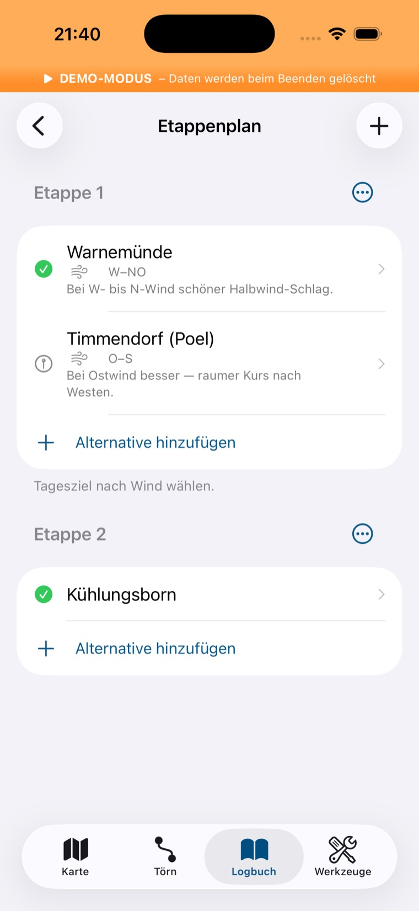
12345
Etappenplan mit zwei Etappen: Etappe 1 hat zwei Ziel-Optionen mit Windsektor (Warnemünde bei W–NO, Timmendorf bei O–S), Etappe 2 ein festes Ziel.
Plus — legt eine neue Etappe an.
…-Menü der Etappe — nach oben/unten verschieben, abhaken, wieder öffnen, löschen.
Gewählte Option — grüner Haken, darunter Windsektor und Notiz. Das ist das aktuelle Tagesziel; Go-To und Auto-Tracking zeigen hierhin.
Alternative — gedämpft mit Pin-Symbol; ein Tap im Kontext-Feld „Törn" („Wohin heute?") macht sie zum Tagesziel.
Alternative hinzufügen — weitere Ziel-Option für dieselbe Etappe.
Bitte testenLege im Demo-Modus oder auf einem eigenen Törn eine Etappe mit zwei Optionen und unterschiedlichen Windsektoren an: Wird im Kontext-Feld „Törn" die passende Option als „passt zum Wind" markiert? Setzt ein Tap auf die Option sofort das Go-To auf der Karte? Und wird die Etappe nach dem Einlaufen in den Ankunftsradius von selbst abgehakt, sodass die nächste Etappe aktiv wird?
Was die Hauptkarte an Ebenen und Stilen bietet und wie du dein Revier so speicherst, dass Karte, Tonnen und Tiefenlinien auf See auch ohne Netz da sind.
WichtigEtmar ersetzt keine Seekarte und keinen Kartenplotter — es zeichnet auf, was passiert ist. Die Karte beruht auf OpenStreetMap: Seezeichen sind Community-Daten, die Tiefenlinien stammen aus einem Modell mit rund 100 m Raster (EMODnet). Beides ist keine amtliche Quelle und wird nicht nach Nachrichten für Seefahrer berichtigt. Die App zeigt diesen Hinweis einmal beim ersten Öffnen der Karte („Verstanden“); dauerhaft steht er unter Einstellungen → Über & Rechtliches und im Tutorial „Hauptkarte“.
Ebenen-Menü (Leuchtturm)
Der Leuchtturm-Knopf in der linken Knopfspalte der Karte öffnet ein Menü mit Häkchen: Seezeichen, OSM-Häfen (Häfen und Ankerplätze aus OpenStreetMap), Tiefenlinien, Hafenhandbuch, AIS-Ziele, dazu Regatten. Jede Ebene schaltest du einzeln — so blendest du zum Beispiel die dichten dänischen Vereinshäfen aus, ohne die Tonnen zu verlieren. Der Zustand bleibt gespeichert; das Symbol ist gefüllt, solange mindestens eine Ebene an ist. „Alle Ebenen aus“ räumt die Karte mit einem Tipp leer.
Im selben Menü liegen zwei Abkürzungen: „Diesen Ausschnitt offline speichern“ springt zu den Offline-Karten, „Kartenstil“ wechselt die Optik — du beurteilst einen Stil mit Blick auf die Karte, nicht zwei Menüebenen tiefer.
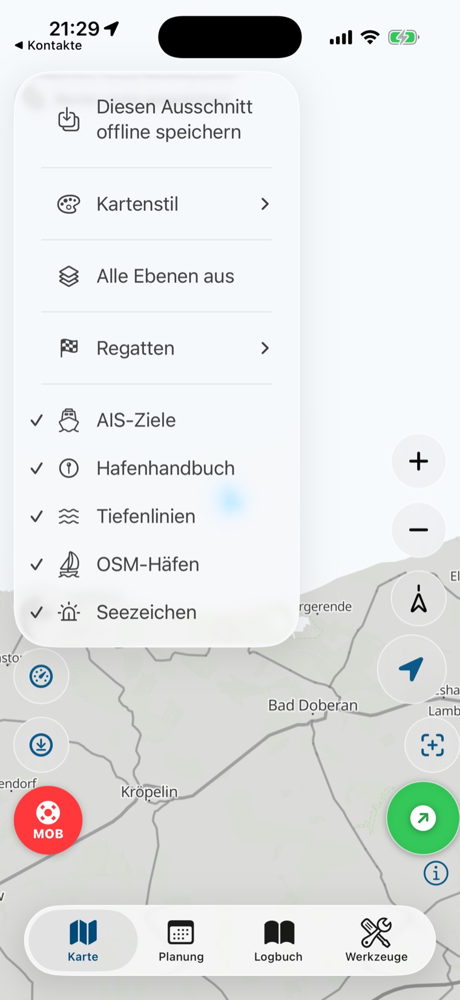
12345
Leuchtturm-Menü auf der Hauptkarte: oben die Abkürzungen zum Offline-Speichern und zum Kartenstil, darunter die Ebenen mit Häkchen.
Diesen Ausschnitt offline speichern — springt mit dem aktuellen Ausschnitt zu den Offline-Karten.
Kartenstil — Kontrast oder Seekarte.
Alle Ebenen aus — ein Tipp, die Karte ist leer.
Ebenen — Tiefenlinien, OSM-Häfen und Seezeichen einzeln schaltbar; der Zustand bleibt gespeichert.
Offline-Knopf — zweiter Weg zu den Offline-Karten, ohne das Menü.
Kartenstil: Kontrast und Seekarte
Standard ist „Kontrast“: Land und Straßen fast farblos auf Neutralgrau, damit Track, Bahn, Laylines und AIS-Ziele als einzige Elemente Farbe tragen. Bei greller Sonne auf nassem Display bleibt vom Grundstil nur die Küstenlinie — genau das, was du dann brauchst. „Seekarte“ ist die klassische Optik: Wasser fast weiß, Land gedeckt, Straßen in Originalfarben. Umschalten im Leuchtturm-Menü oder unter Einstellungen → Karte. Beide Stile färben dieselben Kacheln zur Laufzeit um, gespeicherte Offline-Pakete bleiben bei einem Stilwechsel gültig.
Dunkle Karte. Steht das iPhone auf dunklem Erscheinungsbild, wird die Karte zur Nacht-Seekarte: Wasser in reinem Schwarz (auf OLED-Displays sind die Pixel dort aus — maximaler Kontrast, minimaler Verbrauch, geschonte Nachtsicht), Land dunkelgrau, Straßen und Grenzen stark gedimmt, Beschriftungen gedämpft. Der Rotfilter des Nachtmodus legt sich zusätzlich darüber. Das gilt für alle Karten, auch für Vorschauen.
Seezeichen
Tonnen, Baken und Leuchtfeuer aus OpenStreetMap erscheinen mit ihren Seekarten-Formen: Lateraltonnen rot (stumpf) und grün (spitz), Kardinaltonnen gelb-schwarz mit Doppelkegel-Topzeichen, Sondertonnen gelb, Ansteuerungstonnen rot-weiß, Leuchtfeuer als Magenta-Stern. Namen kommen erst bei nahem Zoom.
Die Darstellung ist nach Relevanz gestaffelt: Leuchtfeuer, Kardinal-, Einzelgefahr- und Ansteuerungszeichen stehen schon in der Revierübersicht — klein, damit sie weit draußen kein Farbklecks sind, und wachsen beim Ranzoomen. Lateraltonnen kommen ab Revier-Zoom dazu, Sonderzeichen und Baken erst nah dran. Einen Filter dafür gibt es bewusst nicht — kein weiteres Menü an Deck. Die Ebene ist standardmäßig an.
Geladen werden die Seezeichen automatisch mit jedem Offline-Paket: ein Abruf pro Revier, lokal gespeichert, offline verfügbar. Mit demselben Abruf kommen Häfen, Marinas und Ankerplätze als indigo Anker auf die Karte. Der Demo-Modus bringt echte Seezeichen der Mecklenburger Bucht mit.
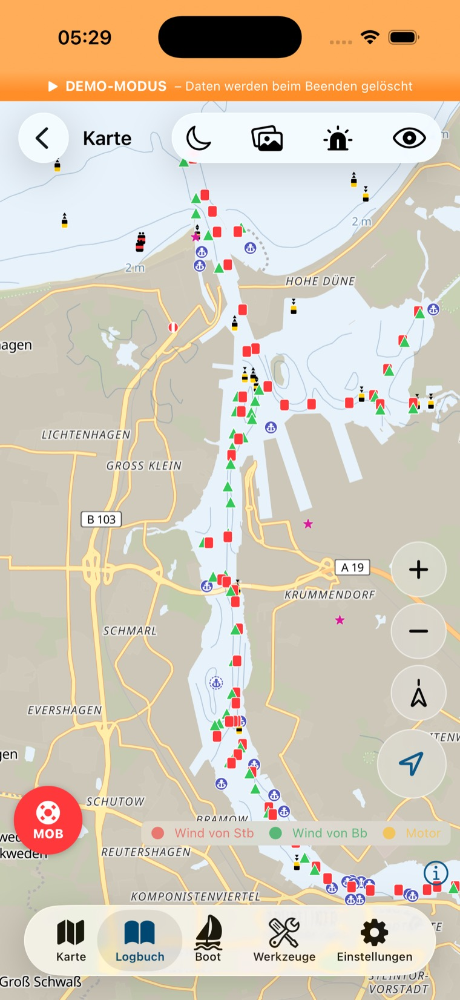
1234
Fahrwasser Warnemünde: Lateraltonnen, Kardinaltonnen mit Topzeichen, Leuchtfeuer und OSM-Häfen — alles aus einem Abruf, offline verfügbar.
Kardinaltonnen — gelb-schwarz mit Topzeichen; schon in der Revierübersicht sichtbar.
Lateraltonnen — rot stumpf, grün spitz entlang des Fahrwassers; ab Revier-Zoom.
OSM-Hafen — indigo Anker, kommt mit demselben Abruf wie die Seezeichen.
Leuchtfeuer — Magenta-Stern wie auf der Seekarte.
Tiefenlinien und Sicherheitskontur
Tiefenkonturen bei 2, 5, 10 und 20 m — dezent, geglättet, jede Linie mit aufrechter Tiefenangabe wie auf der Seekarte, und nur auf echten Wasserflächen. Flächenfärbung gibt es bewusst nicht: Mit dem groben Modellraster wurden gefärbte Flächen treppig oder lagen neben den Linien, das war irreführend. Die Tiefen sind eine eigene Ebene im Leuchtturm-Menü, unabhängig von den Seezeichen, und werden wie diese mit jedem Offline-Paket geladen (ein Abruf des EMODnet-Rasters pro Revier, lokal verarbeitet, offline verfügbar). Der Demo-Modus bringt die Tiefen der Mecklenburger Bucht mit.
Sicherheitskontur. Ist am Boot ein Tiefgang hinterlegt (Boot → Bootsdaten), betont die Karte genau eine Linie: die flachste Kontur, die noch tiefer liegt als Tiefgang plus Puffer (mindestens 1 m, bei tiefem Kiel die Hälfte des Tiefgangs — bei 1,65 m Tiefgang also die 5-m-Linie). Alle anderen Konturen sind zurückgenommen, denn auf dem Plotter zählt genau die eine Linie, die du nicht überfährst. Ohne Tiefgang bleiben alle Linien gleich dezent.
Wie fein die Tiefen sind. Das Raster hängt am Ausschnitt, nicht am Detailgrad. Bis zu einem Revier von rund 80 × 80 sm liegt es bei etwa 120 m, der Auflösung des EMODnet-Modells; größere Ausschnitte werden gedeckelt und damit gröber. Für die Ansteuerung also das kleinere Revier laden, für die Törnplanung reicht das große. Modelldaten — für die Planung, nicht fürs Ankern auf den Meter.
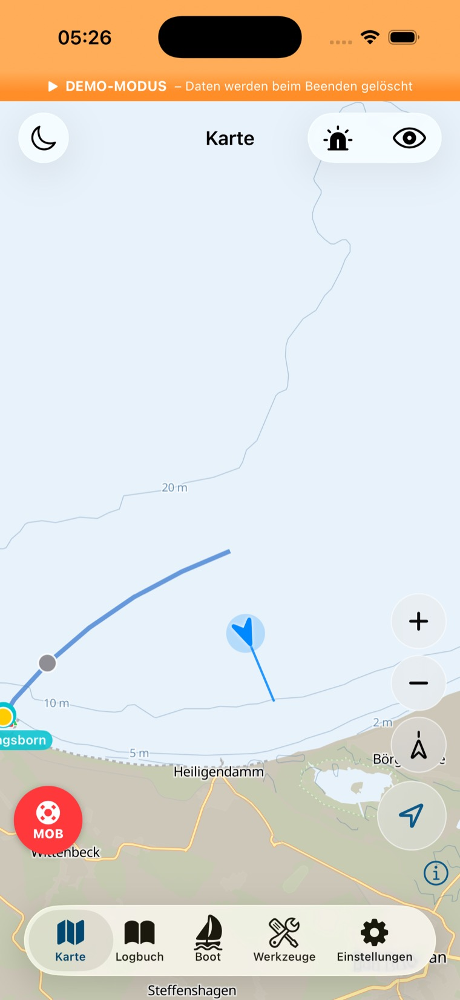
1234
Tiefenlinien 2/5/10/20 m vor Kühlungsborn, jede mit aufrechter Beschriftung und bewusst ohne Flächenfärbung; das eigene Boot als blauer Pfeil mit COG-Vektor.
20-m-Linie — Beschriftung aufrecht wie auf der Seekarte.
10-m-Linie — die Konturen folgen nur echten Wasserflächen.
5-m-Linie — bei 1,65 m Tiefgang wäre das die betonte Sicherheitskontur.
Eigenes Boot — blauer Pfeil mit COG-Vektor: du siehst, auf welche Linie du zuläufst.
Offline-Pakete
Die Basiskarte (OpenFreeMap/OpenStreetMap) funktioniert auf See nur, wenn du das Revier vorher gespeichert hast — am besten im Hafen-WLAN. Free erlaubt bis zu zwei Pakete in Grob oder Mittel; Plus hebt das Limit auf und schaltet „Fein“ frei. Der Weg: Einstellungen → Offline-Karten oder im Leuchtturm-Menü „Diesen Ausschnitt offline speichern“.
Karte oben auf das Revier schieben.
Detailgrad wählen: Grob = Übersicht, Mittel = Revier, Fein = Hafenansteuerung. Die Größenschätzung steht daneben, bevor du lädst.
„Sichtbaren Ausschnitt speichern“ tippen. Zu große Ausschnitte lehnt die App ab, statt halb Europa zu laden.
Die Paketliste zeigt Name (automatisch nach dem Ort in der Mitte), Fortschritt und Größe; Löschen per Wisch mit Bestätigung.
Nur Seezeichen & Tiefen laden. Der zweite Knopf holt Tonnen, Häfen und Tiefenlinien des Ausschnitts, aber keine Kartenkacheln — wenige hundert KB statt hunderter MB. Die Basiskarte bleibt offline dann leer, Flachwasser und Seezeichen sind aber da. In allen Stufen enthalten: Flachwasser ist eine Sicherheitsinformation, das Free-Limit deckelt nur Kartenkacheln.
Ansteuerungen ladenPlus — feine Karte (Zoom 14) nur im Umkreis von drei Seemeilen um jeden Zielort im sichtbaren Ausschnitt, alle Ziele in einem Paket. „Fein“ brauchst du dort, wo es eng wird (Fahrwasser, Molenköpfe, Ansteuerungstonnen), nicht auf der Kreuz: gut ein Megabyte je Zielort statt rund 50 MB für dieselbe Zoomstufe über die ganze Fläche. Das Revier selbst lädst du daneben in „Mittel“.
Wie lange das dauert. Ein kleiner Ausschnitt ist in Sekunden da. Ein großes Revier wird in bis zu 36 Bereiche zerlegt, der Knopf zählt mit („Seezeichen 7 von 36“). „Abbrechen“ darunter kostet nichts: Geladene Bereiche bleiben, ein späterer Anlauf holt nur die fehlenden nach. Die Daten kommen von Overpass, einem freien OpenStreetMap-Server, der bei Andrang drosselt — scheitern einzelne Bereiche, steht das in der Revier-Zeile, und „Erneut versuchen“ ergänzt sie.
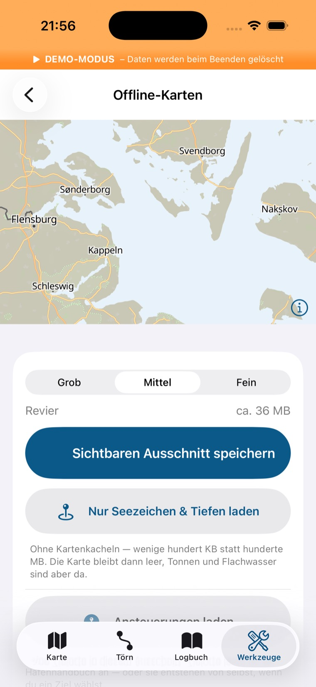
1234
Offline-Karten: Ausschnitt oben, darunter Detailgrad mit Größenschätzung, „Sichtbaren Ausschnitt speichern“ und „Nur Seezeichen & Tiefen laden“; Paketliste und geladene Reviere folgen weiter unten.
Ausschnitt — die Karte so schieben, dass das Revier im Bild ist; das Paket heißt nach dem Ort in der Mitte.
Detailgrad und Größenschätzung — Grob, Mittel oder Fein (Plus); „ca. 36 MB“ steht, bevor du lädst.
Sichtbaren Ausschnitt speichern — Kacheln, Seezeichen und Tiefen kommen zusammen.
Nur Seezeichen & Tiefen laden — wenige hundert KB, in allen Stufen.
Geladene Reviere, Kartenspeicher, Hinweis auf der Karte
Geladene Reviere ist die eigene Liste unter den Paketen: Name, Anzahl Seezeichen und Häfen, Tiefenkonturen, Größe und Stand; „Aktualisieren“ holt den Ausschnitt neu. Seezeichen und Tiefen liegen getrennt von den Kartenkacheln. Löschst du ein Paket, dessen Ausschnitt nicht genau passt, bleiben sie liegen und tragen die Markierung „kein Kartenpaket“ — nach links wischen löscht sie einzeln. Scheitert ein Tiefen-Abruf, steht der Grund rot in der Zeile, samt „Erneut versuchen“, auch nach einem App-Neustart.
Kartenspeicher zeigt, wie viel Platz Offline-Pakete und nebenbei angesehene Kacheln zusammen belegen — eine gemeinsame Zahl, weil beides in derselben Datei liegt. „Zwischenspeicher leeren“ verwirft nur die angesehenen Kacheln; Pakete, Seezeichen und Tiefen bleiben.
„Revier nicht gespeichert“. Mit Netz steht dieser Hinweis oben auf der Karte, sobald dein Boot im Bild ist und kein Paket den Ausschnitt deckt — ein Tipp führt direkt zum Speichern. Beim bloßen Herumschieben der Karte bleibt er still. Ohne Netz zeigt stattdessen ein Chip „Offline: <Paket>“ oder orange „kein Paket für diesen Ausschnitt“. Der Hinweis soll kommen, solange du noch laden kannst — nicht erst, wenn das Netz weg ist.
Bitte testen
Speichere dein Heimatrevier in „Mittel“, schalte den Flugmodus ein und öffne die Karte: Sind Kacheln, Tonnen und Tiefenlinien vollständig da? Stimmt die Zahl unter „Geladene Reviere“ mit dem überein, was du auf der Karte siehst?
Trage deinen Tiefgang unter Boot → Bootsdaten ein: Ist die betonte Sicherheitskontur die Linie, die du für dein Boot auch selbst wählen würdest?
Vergleiche „Kontrast“ und „Seekarte“ bei Sonne an Deck: Welcher Stil bleibt lesbar — und fehlt dir im Kontrast-Stil eine Information?
Ein Ziel anpeilen, eine Wegpunkt-Folge abfahren und andere Schiffe im Blick behalten — alles auf der Hauptkarte, mit Zahlen, die auf der Kreuz und bei Welle ruhig bleiben.
Go-To: ein Ziel anpeilen
Go-To ist die einfachste Form der Navigation: eine Peilung auf einen Punkt. Du startest es auf drei Wegen:
Langes Drücken auf einen beliebigen Kartenpunkt, dann Go To im Radialmenü.
Der Go To-Knopf in der Punkt-Karte eines Hafens, einer Bahnmarke oder eines Seezeichens. Seezeichen sind antippbar und zeigen Name, Typ, Peilung und Distanz.
Die Zielwahl der nächsten offenen Etappe („Wohin heute?" — ein Tipp wählt das Tagesziel) im Kontext-Feld „Törn": „Als Ziel" heißt navigieren, nicht nur verbuchen — die Kurslinie erscheint auf der Karte, die Plotter-Kacheln BRG/DTW/VMC/TTG laufen mit.
Das blaue Banner oben zeigt Peilung und Distanz groß. Darunter stehen der Kursfehler — COG gegen Peilung als ◀ oder ▶ mit Grad, ab 5° gelb —, die ETA und die Abweichung von der Ausgangslinie (XTE) — wie weit du seitlich von der ursprünglichen Kurslinie Boot → Ziel liegst. Auf der Karte liegt die Kurslinie vom Boot zum Ziel. Das Ziel bleibt aktiv, bis du es mit „×" beendest — auch über einen Neustart der App hinweg. Peilung, Distanz und der COG-Abgleich sind frei.
WichtigGo-To ist eine Peilung, kein Routing: Die Kurslinie zum Ziel und jeder Schenkel einer Route laufen geradeaus, auch über Land und Untiefen. Ob ein Schenkel frei ist, prüfst du selbst auf der Seekarte.
ETA: aus der Annäherung, nicht aus der Momentanfahrt
Die ETA rechnet aus der gemittelten Annäherung der letzten Minuten — wie schnell die Restdistanz tatsächlich schrumpft. Die Momentan-VMC taugt dafür nicht: Auf der Kreuz ist die Momentanfahrt Richtung Marke bedeutungslos, und bei Welle sprang eine solche Anzeige zwischen zwanzig Minuten und zwei Stunden. Wer sich vom Ziel entfernt oder stillliegt, sieht „--" statt einer erfundenen Zahl.
Laylines Pro
Liegen Winddaten an (NMEA-Netz oder Demo), zeichnet die Karte zusätzlich die Laylines von der Marke: grün die Steuerbord-, rot die Backbord-Layline. Der Winkel kommt aus den Polar-Optima deines Boots; ohne Polardaten gelten 45° und 150°. Ob es ein Aufkreuz- oder ein Vorwind-Schenkel ist, erkennt die App selbst.
Routen planen
Eine Route ist eine Folge von Wegpunkten, die du an Land unter Werkzeuge → Routen anlegst. Am direktesten geht das im Route-Modus der Hauptkarte:
Lange auf die Karte drücken und Route wählen. Ein blaues Band oben sagt, was ein Druck jetzt tut, und hat genau einen Ausgang: Fertig.
Jeder weitere lange Druck hängt einen Wegpunkt an — blaue Linie, nummerierte Pins, im Band ein Zähler und Rückgängig.
Fertig öffnet das Routen-Formular mit den gesetzten Punkten.
Während des Route-Modus ist eine laufende Go-To-Route ausgeblendet. MOB und Ankerwache bleiben in jedem Modus an ihrer Stelle, und kein Modus überlebt einen App-Start: Wer nachts die App öffnet, bekommt die Navigationskarte, nie ein Werkzeug von gestern.
Bestehende Routen bringst du mit Auf der Karte bearbeiten im Formular zurück auf die Karte; Fertig speichert einmal zurück, ein Rückgängig-Balken nimmt es zurück. Wegpunkte kommen auch aus dem Hafenhandbuch, der Wegpunkt-Bibliothek, den Seezeichen oder von deiner eigenen Position. Pro Wegpunkt legst du Name und Ankunftsradius fest (50–500 m), die Reihenfolge änderst du über Bearbeiten. Die Liste zeigt Peilung und Distanz jedes Schenkels sowie die Gesamtlänge. Planen ist frei.
Route abfahren Plus
Route starten macht den ersten Wegpunkt zum Go-To-Ziel. Sobald du im Ankunftsradius bist, springt die Route von selbst weiter — mit Haptik und der Mitteilung „Wegpunkt erreicht". Der erreichte Wegpunkt wird zur Basis der neuen Sollkurslinie, die XTE bezieht sich also immer auf den aktuellen Schenkel. Das Banner zeigt „WP 2/5", den Namen des Wegpunkts und hinter Σ die Restdistanz bis zum Routenende. Ein großer Nächster-Knopf schaltet von Hand weiter, etwa wenn du eine Tonne bewusst auslässt; ein Undo-Balken holt den Wegpunkt zurück. Auf der Karte sind abgefahrene Schenkel grau, kommende in Akzentfarbe, die Wegpunkte nummeriert. Die Plotter-Kacheln BRG, DTW, XTE, VMC, ETA und TTG beziehen sich immer auf den aktiven Wegpunkt.
Im Demo-Modus liegt die Route „Kühlungsborn – Warnemünde" mit vier Wegpunkten bereit.
AIS: andere Schiffe Pro
Liefert dein NMEA-Netz AIS-Daten (NMEA 2000 oder NMEA 0183, mehrteilige Sätze werden zusammengesetzt), zeigt die Karte andere Schiffe als Pfeile in Kursrichtung mit Namen und 6-Minuten-Vektor. Klasse A ist dunkelblau, Klasse B türkis; nach 3 Minuten ohne neue Position wird ein Ziel grau, nach 6 Minuten verschwindet es. Die Ebene schaltest du im Ebenen-Menü.
Zu jedem Ziel rechnet die App CPA und TCPA gegen das eigene Schiff. Unterschreitet ein Ziel die Warnschwelle — Standard 0,5 sm CPA und 20 min TCPA, einstellbar unter Einstellungen → Karte im Bereich 0,25–2 sm und 10–30 min —, wird es rot, und oben erscheint ein roter Warnknopf: „CPA 0,3 sm" groß, Name und TCPA als Zweitzeile. Zugleich meldet die App die Gefahr als zeitkritische Mitteilung — je Ziel beim Eintritt, danach höchstens alle 5 Minuten — auch mit dem Handy in der Tasche. Ein Tipp auf ein Ziel öffnet die Punkt-Karte mit Schiffstyp, MMSI, Rufzeichen, Fahrt und Kurs, CPA/TCPA, Länge und Alter der Daten.
Der Demo-Modus zeigt drei Ziele: eine Fähre, einen Frachter und eine Segelyacht, die konvergiert und die Warnung auslöst.
123
Hauptkarte mit eingeschalteter AIS-Ebene: Die Fähre und die Segelyacht stehen als Pfeile in Kursrichtung mit Namen auf der Karte; der grüne Track führt von Kühlungsborn zum eigenen Boot.
AIS-Ziel Klasse A — die Fähre in Dunkelblau, Pfeil in Kursrichtung, Name daneben, davor der 6-Minuten-Vektor.
AIS-Ziel Klasse B — die Segelyacht in Türkis, dicht beim eigenen Boot; ein Tipp öffnet die Punkt-Karte mit CPA/TCPA.
Ebenen-Knopf — öffnet das Ebenen-Menü, in dem du die AIS-Ziele ein- und ausschaltest.
Bitte testenSetz ein Go-To auf eine Tonne und kreuz dagegen an: Bleibt die ETA ruhig, und zeigt sie „--", sobald du dich entfernst? Fahr in der Demo (Demo-Stufe Plus) die Route „Kühlungsborn – Warnemünde": Springt die Route im Ankunftsradius weiter, kommt die Mitteilung, und holt der Rückgängig-Balken nach Nächster den Wegpunkt zurück? Wer AIS an Bord hat: Passt die CPA-Warnung zu dem, was dein Plotter zeigt, und erreicht dich die Mitteilung auch mit dem Handy in der Tasche?
Eine Regatta ist ein Törn mit Startschuss: Ab dem Anlegen laufen Vorstart, Countdown, Tracking und — mit angelegter Ziellinie — die Zielerkennung von selbst — du bedienst nur noch, was am Wasser wirklich gebraucht wird.
Regatta anlegen
Eine Regatta ist ein besonderer Törn-Typ mit Startzeit, Countdown und eigener Auswertung. Drei Wege führen hin:
Karte → Losfahren → Regatta
Logbuch → Plus-Menü → Neue Regatta — dasselbe Formular.
Werkzeuge → Kalender — bei einem Regatta-Termin erscheint am Renntag ein „Starten“-Knopf (mit Rückfrage). Er legt die Regatta samt der hinterlegten Bahn-Vorlage an.
Das Formular fragt Name, Startschuss-Zeit, Bahn, Wertung und Notizen ab. Die Bahn-Zeile bietet deine gespeicherten Bahn-Vorlagen an — Marken, Linien und Zeitregeln kommen beim Sichern mit. Liegt für heute ein Kalender-Termin mit Bahn an, ist sie schon vorbelegt. Ebenfalls im Formular: die Dauer der Vorstartphase, wählbar 5, 6, 10 oder 15 Minuten (5 für 5-4-1-Starts).
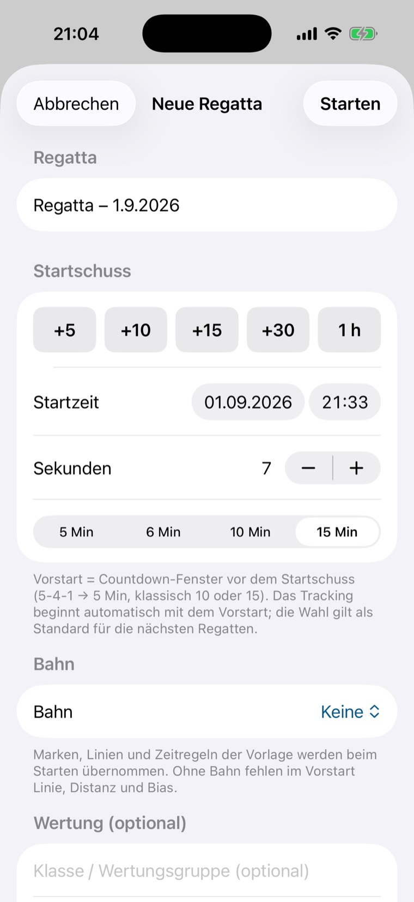
1234
Formular „Neue Regatta“: Startschuss mit Sekundenfeld, Vorstart-Dauer und Bahn-Vorlage.
Startzeit — Datum, Uhrzeit und ein eigenes Sekundenfeld für den Startschuss.
Vorstart-Dauer — 5, 6, 10 oder 15 Minuten; 5 für 5-4-1-Starts.
Bahn — gespeicherte Bahn-Vorlage wählen; Marken, Linien und Zeitregeln kommen mit.
Starten — legt die Regatta an; ab hier läuft alles automatisch.
Sonderfall Jagdstart: Trägt eine Bahn ein Startverfahren, bei dem nicht alle gleichzeitig starten (Känguru-/Jagdstart nach Yardstick, Gruppenstarts), fragt die App direkt nach dem Beitreten zu einer solchen Bahn (etwa einer Bahn aus der Community) nach deiner eigenen Startzeit — sekundengenau, mit eigenem Sekundenfeld unter der Uhrzeit, weil die Segelanweisung sekundengenaues Starten nach Funk- oder GPS-Uhr verlangt. Die Zeit gilt für alle Termine der Bahn; einzelne Renntage änderst du im Kalender.
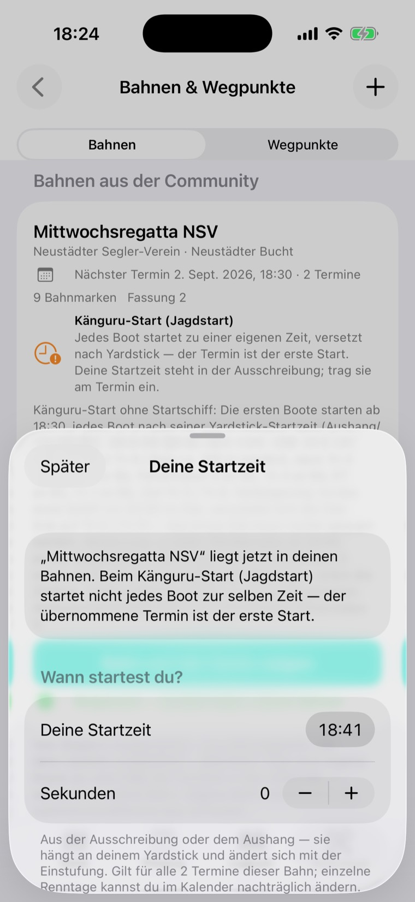
123
Beitritt zu einer Bahn mit Jagdstart: Die App fragt nach der eigenen Startzeit — sekundengenau.
Startverfahren an der Bahn — „Känguru-Start (Jagdstart)“: Jedes Boot startet versetzt nach Yardstick; der Kalendertermin ist nur der erste Start.
Deine Startzeit — die Uhrzeit aus der Ausschreibung; gilt für alle Termine der Bahn.
Sekunden — tippbar oder über −/+, weil der iOS-Zeitwähler keine Sekunden kann.
Vorstart: läuft von selbst
Ab dem Anlegen musst du nichts mehr auslösen; die App übersteht dabei auch einen Neustart:
Mit Beginn der Vorstartphase entsteht automatisch der Vorstart-Eintrag, das GPS-Tracking startet, und eine Mitteilung liegt auf dem Sperrbildschirm. Zusätzlich startet die RAW-Datenaufzeichnung Pro, wenn ein NMEA-Netz verbunden ist.
Auch mit dem iPhone in der Tasche: Ab 2 Stunden vor dem Start hält sich die App im Hintergrund bereit, die Timer feuern pünktlich ohne offene App. Ist die Regatta früher angelegt, weckt ein grober Ortswechsel — typischerweise die Fahrt zum Hafen — die App wieder auf, selbst wenn iOS sie beendet hat.
Der Countdown steht groß im Logbuch: letzte Minute rot, nach dem Schuss läuft die Rennzeit grün. Die Phasen: Warten → Vorstart (gelb) → Rennen (grün). Im Rennen zeichnet die App alle 5 s einen Trackpunkt statt alle 30 s, damit Wenden und VMG sauber auswertbar sind.
Dieselben Zahlen stehen oben auf der Karte in der Kontextleiste: Countdown, Abstand zur Linie, Time-to-burn und Bias über dem Bild, in dem du dein Boot relativ zur Linie siehst. Ein Tap auf die Leiste öffnet den Regatta-Tab.
Zum Startschuss entsteht der Start-Eintrag exakt auf die Startzeit, mit kräftigem Haptik-Impuls und Mitteilung.
WichtigDie Hintergrund-Bereitschaft setzt die Standortberechtigung „Immer“ voraus — vor dem ersten Rennen in den iOS-Einstellungen prüfen.
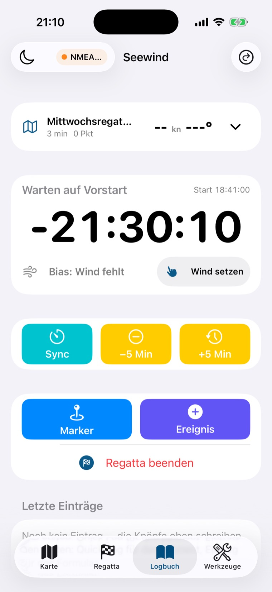
12345
Logbuch vor dem Start: Countdown bis zum Vorstart, Bias-Zeile, Sync und Startverschiebung, darunter die beiden Renn-Knöpfe.
Countdown — läuft groß, letzte Minute rot; nach dem Schuss grüne Rennzeit.
Bias / Wind setzenPlus — öffnet die Windrose; ohne gesetzten Wind steht „Bias: Wind fehlt“.
Sync — beim Signal einmal tippen, der Startschuss wird auf die nächste volle Minute gerundet.
−5 Min / +5 Min — Start verschieben: AP-Verschiebung und Rücknahme in vollen Fünf-Minuten-Schritten.
Marker / Ereignis — die beiden Renn-Knöpfe: GPS-Punkt setzen bzw. volles Formular.
Sync und Startverschiebung
Sync: Beim Signal des Wettfahrtleiters einmal tippen — der Startschuss wird auf die nächste volle Minute gerundet, der Countdown stimmt danach auf die Sekunde. Der Knopf sitzt dort, wo er gebraucht wird: im Vorstart-Block des Logbuchs neben den Pin-/Schiff-Pings, auf der Karte in der Vorstart-Leiste neben den Ping-Knöpfen — und sobald die Linie steht, als einzelner großer Griff unter dem Countdown.
Startverschiebung (AP): „+5 Min“ verschiebt den Schuss um volle fünf Minuten; Timer, Countdown und Mitteilungen werden neu geplant. Mehrfach tippen addiert, „−5 Min“ nimmt zurück. Kein Datumswähler auf See. ±5 Min liegt eingeklappt hinter „Start verschieben“ im Logbuch — Seltenes bleibt weg von der Karte.
Startlinie, Bias, Time-to-burn
Linie pingen: Im Vorstart am Pin-Ende und am Startschiff vorbeifahren und „Pin pingen“ bzw. „Schiff pingen“ tippen — die Startlinie wird aus deiner GPS-Position gesetzt. Erneutes Pingen überschreibt einfach, ein Fehltouch ist folgenlos. Ein Ping ohne GPS-Fix meldet sich; die Ping-Häkchen überleben einen App-Neustart.
Distanz zur Linie & Time-to-burn: Sobald Pin und Startschiff gepingt sind, zeigt der Vorstart-Block den Lot-Abstand zur Startlinie und Time-to-burn — Countdown minus die Zeit bis zur Linie bei aktueller Annäherung. Rot heißt: zu früh. Beides basiert auf GPS und ist frei.
Linien-BiasPlus: Steht die Linie (gepingt oder aus der Bahn), zeigt der Vorstart-Block, welches Ende in Luv liegt — „Pin +7° · 12 m“ oder „Schiff +7° · 12 m“. Der Meterwert ist der Luv-Vorteil (Linienlänge × sin Bias); unter 3° steht „Linie neutral“. Die Windrichtung setzt du über „Wind setzen“: eine drehbare Windrose, die du mit dem Daumen drehst; sie rastet alle 5° mit Haptik, dazu ±5°-Knöpfe und „In den Wind schießen — Kurs übernehmen“, das deinen Steuerkurs (HDG, sonst COG) zur Windrichtung macht. Die Richtung bleibt gespeichert. Mit Pro oder im Demo-Modus kommt sie automatisch als TWD vom NMEA-Netz; der Knopf zeigt die Quelle. Ohne Plus steht die Zeile mit Schloss da.
Ziellinie pingen: „Ziel Stb pingen“ und „Ziel Bb pingen“ gibt es im Vorstart und im Rennen — Steuerbord- und Backbord-Ende aus Sicht der Zieldurchfahrt. Sind beide Enden gesetzt, erkennt die App die Zieldurchfahrt automatisch. Im Bahn-Editor gibt es je Ende außerdem „Aktuelle Position übernehmen“ — kein Koordinatentippen.
Im Rennen
Im Rennen gibt es bewusst nur zwei Knöpfe. Marker setzt mit einem Tap einen GPS-markierten Punkt für Momente, die du dir später ansehen willst: schlechter Start, Dreher, Beinahe-Havarie. Ereignis öffnet das volle Formular. Wenden, Halsen und Markenrundungen musst du nicht mitloggen — die Auswertung erkennt sie nachträglich aus dem Track. Auf der Karte bleibt in dieser Phase nur, was am Bild gebraucht wird: Pingen, solange die Linie unvollständig ist, und Sync.
Live-AuswertungPro: Der Regatta-Tab zeigt während des Rennens genau drei Werte — VMG gegen die Polare als Delta („+0,3 kn“ / „−0,4 kn“), den mittleren Wendewinkel der letzten Schläge (aus den Bugwechseln im Track; Patzer-Wenden und Halsen fallen raus) und den Abstand zur Layline der gesetzten Marke. Mehr bewusst nicht: Wendenzähler, Zeit auf dem falschen Bug und Distanzsummen brauchen einen Vergleich über die Zeit und gehören in die Auswertung nach dem Ziel — wer auf der Kreuz eine Tabelle liest, segelt nicht. Alle drei Werte hängen an wahrem Wind und Fahrt durchs Wasser, also am NMEA-Netz; die Layline zusätzlich an einer gesetzten Marke. Ohne Marke wäre sie geraten — und eine geratene Zahl, nach der gesteuert wird, ist schlechter als keine.
Zieldurchfahrt und Gastboot
Beenden geht manuell über „Regatta beenden“ (mit Bestätigung) — oder automatisch: Ist in der Bahn eine Ziellinie oder ein Zielbereich angelegt, erkennt die App die Querung der Linie. Dann entsteht der Ziel-Eintrag, die Regatta wird abgeschlossen, Tracking und Countdown stoppen, und die Mitteilung „Zieldurchfahrt!“ erscheint. In den ersten 60 Sekunden nach dem Start gilt eine Karenz, weil Start- und Ziellinie oft nah beieinander liegen. Als Sicherheitsnetz fragt die App nach zwei Stunden Stillstand per Mitteilung, ob das Rennen vorbei ist.
Woanders mitgesegelt? Über Törn bearbeiten → Boot ordnest du eine Regatta (oder jeden Törn) nachträglich einem anderen deiner Boote zu — oder markierst sie als „Auf fremdem Boot mitgesegelt“ mit dem Namen des Gastboots. Solche Törns bleiben im Logbuch (blaues Badge mit dem Bootsnamen), zählen aber nicht in die Meilen- und Motorstatistik deines eigenen Boots; in der Statistik lassen sie sich per Schalter zuschalten. Die Demo zeigt das an der „Mittwochsregatta Kühlungsborn“ auf dem Gastboot „Fenja“.
Bitte testen
Lege eine Regatta mit Startschuss in 20 Minuten an, sperre das iPhone und steck es weg: Kommen Vorstart- und Start-Mitteilung pünktlich, ohne dass du die App öffnest?
Tippe „Sync“ beim Signal: Stimmt der Countdown danach auf die Sekunde mit der Uhr des Wettfahrtleiters?
Pinge beide Ziel-Enden: Erkennt die App die Zieldurchfahrt, und stoppen Tracking und Countdown von selbst?
C6Regatta-Bahn Schritt für Schritt: Mittwochsregatta NSV
Von der mitgelieferten Vereinsbahn bis zum laufenden Countdown — der komplette Weg am Beispiel der Mittwochsregatta des Neustädter Segler-Vereins: beitreten, Startzeit eintragen, Bahn im Editor verstehen, am Renntag starten.
Eine Bahn ist in Etmar die Regattastrecke als Datensatz: Startlinie und Ziellinie aus je zwei Punkten, Bahnmarken mit Erkennungsradius und Rundungsseite, bei Bedarf Tore, Zonen, Info-Punkte und die Zeitregeln der Ausschreibung (Verkürzung, Verlängerung, Zeitlimit je Tonne). Auf der Karte: Startlinie grün, Ziellinie rot, Marken orange, Bahnfolge gestrichelt.
Es gibt sie in zwei Ausprägungen mit derselben Bedienung: die Bahn-Vorlage, die du an Land unter Werkzeuge → Bahnen & Wegpunkte pflegst und die jede Woche gilt, und das Bahnprofil eines Törns, das beim Starten aus der Vorlage kopiert wird und nur für dieses Rennen gilt. Alle Zeiten rechnet die App aus dem Track — eine Bahn lässt sich deshalb auch nach dem Rennen anlegen oder korrigieren.
Der schnellste Einstieg ist eine Bahn aus der Community: von anderen Seglern eingeschickt, mit dem App-Update mitgeliefert — mit Veranstalter, Revier, Terminen und Hinweisen zur Bahn. „Beitreten“ legt eine eigene Kopie an und trägt die Termine als Serie in den Kalender. Keine Tonne musst du selbst setzen.
Teil 1: Bahn holen
Werkzeuge → Bahnen & Wegpunkte öffnet die Bahn-Bibliothek. Sie liegt unter „Vorbereiten“ neben dem Kalender: Bahnen entstehen hier, die Termine dazu dort.
12
Werkzeuge: Bahn-Bibliothek und Kalender liegen nebeneinander unter „Vorbereiten“.
Bahnen & Wegpunkte — Bahn-Vorlagen, Wegpunkt-Bibliothek und die Bahnen aus der Community.
Kalender — hier landen die Termine der Bahn; am Renntag startest du von dort (Teil 3).
Oben schaltet ein Segment zwischen „Bahnen“ und „Wegpunkten“. Ohne eigene Bahn steht ein Leerzustand, darunter „Bahnen aus der Community“. Die Karte „Mittwochsregatta NSV“ nennt Veranstalter und Revier, den nächsten Termin, die Zahl der Bahnmarken und die Fassung. Der Hinweis „Känguru-Start (Jagdstart)“ warnt vor, dass der Termin nur der erste Start ist.
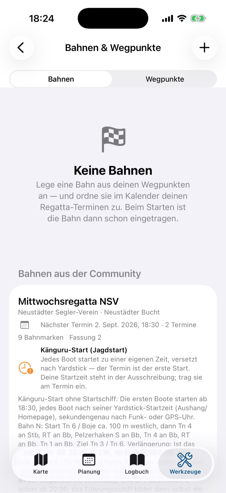
12345
Noch keine eigene Bahn — aber die Mittwochsregatta NSV wartet in der Community-Sektion.
Segment Bahnen / Wegpunkte — links die Bahnen, rechts die Wegpunkt-Bibliothek.
Nächster Termin, Marken, Fassung — zwei Termine, neun Bahnmarken, Fassung 2; bei einer geänderten Bahn steigt die Fassungsnummer.
Känguru-Start-Hinweis — der Termin ist der erste Start; deine Zeit steht in der Ausschreibung.
„+“ — legt eine eigene Bahn von Grund auf an (siehe unten).
Ein Tipp auf die Karte klappt sie auf: Darunter steht die Segelanweisung im Wortlaut — Bahnfolge, Rundungsseiten, Verlängerungs- und Verkürzungsregel, Zeitlimit, Flachstelle. Lies sie gegen deine Ausschreibung. „Beitreten“ legt die Kopie an. Ändert der Verein die Bahn später, steht hier „Neue Fassung verfügbar“: wechseln (alte Kopie weg, Termine ziehen mit, eigene Änderungen gehen verloren) oder beide behalten.
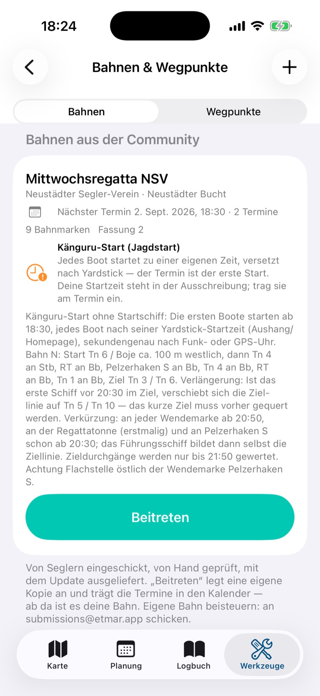
1234
Die aufgeklappte Karte: Segelanweisung der Bahn N und der Knopf „Beitreten“.
Fassung — Nummer der mitgelieferten Bahn; eine neue Fassung wird hier angeboten.
Segelanweisung — Bahnfolge mit Rundungsseiten, Verlängerung bei Ziel vor 20:30, Verkürzung ab 20:50, Zieldurchgänge bis 21:50.
Beitreten — legt deine Kopie an und trägt die Termine in den Kalender.
Herkunft — von Seglern eingeschickt, von Hand geprüft, mit dem Update ausgeliefert.
Direkt nach dem Beitreten fragt die App nach deiner Startzeit, weil beim Känguru-Start (Jagdstart) nicht alle gleichzeitig starten: Jedes Boot startet versetzt nach seinem Yardstick, der Kalendertermin ist nur der erste Start, deine Zeit steht in der Ausschreibung oder am Aushang. Eingegeben wird sekundengenau — unter der Uhrzeit liegt ein eigenes Sekundenfeld, tippbar oder über die Pfeile, weil der iOS-Zeitwähler keine Sekunden kann, die Segelanweisung aber sekundengenaues Starten nach Funk- oder GPS-Uhr verlangt.
1234
Nach dem Beitreten: „Wann startest du?“ — die Zeit aus der Ausschreibung, sekundengenau.
Erklärung — beim Känguru-Start ist der übernommene Termin nur der erste Start.
Deine Startzeit — die Uhrzeit aus Ausschreibung oder Aushang, hier 18:41.
Sekunden — eigenes Feld, tippbar oder mit den Pfeilen.
Später — schließt ohne eigene Zeit; dann bleibt der erste Start im Kalender.
„Startzeit übernehmen“ speichert die Zeit für alle Termine dieser Bahn; einzelne Renntage änderst du im Kalender. „Später“ lässt den ersten Start stehen — der Countdown liefe zu früh ab. Bei einer neuen Fassung fragt die App erneut, weil sich die Einstufung von Saison zu Saison ändert.
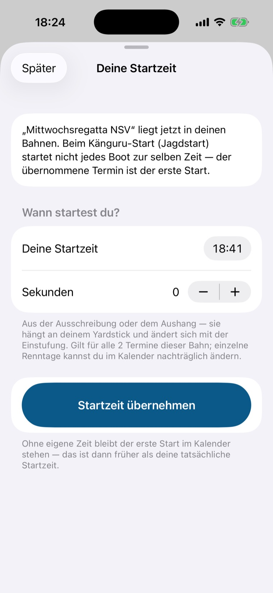
12345
Startzeit eingetragen — „Startzeit übernehmen“ gilt für alle Termine der Bahn.
Uhrzeit — 18:41, der eigene Start nach Yardstick.
Sekunden — hier 0; bei 18:41:30 stünde hier 30.
Geltung — für alle Termine dieser Bahn; einzelne Renntage im Kalender nachträglich ändern.
Startzeit übernehmen — speichert und schließt das Blatt.
Hinweis — ohne eigene Zeit bleibt der erste Start im Kalender, also zu früh.
Zurück in der Community-Karte steht unter „Bahn auf der Karte zeigen“ die grüne Zeile „Beigetreten — die Bahn liegt in deinen Bahnen“. Der Knopf zeichnet die Bahn auf die Hauptkarte.
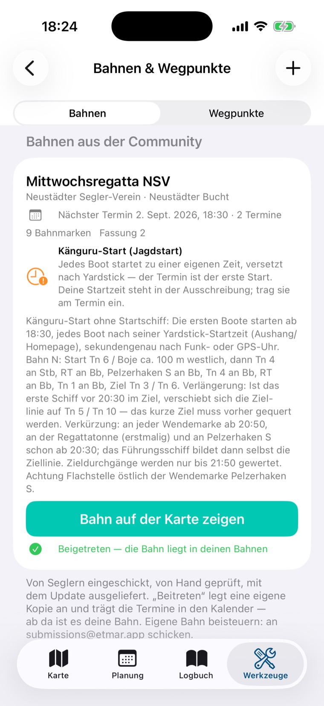
12
Beigetreten: Aus „Beitreten“ wurde „Bahn auf der Karte zeigen“.
Bahn auf der Karte zeigen — zeichnet Marken und Linien auf die Hauptkarte.
Beigetreten — die Kopie liegt in deiner Liste „Bahnen“.
In der Liste „Bahnen“ steht jetzt oben „Mittwochsregatta NSV“ mit „9 Bahnmarken“ — deine Kopie. Ab hier ist es deine Bahn: änderbar, löschbar, im Kalender und beim Starten als Vorlage wählbar. Der Community-Eintrag darunter bleibt für den Wechsel auf eine neue Fassung stehen. Die Termine liegen bereits als Wochenserie im Kalender (Teil 3).
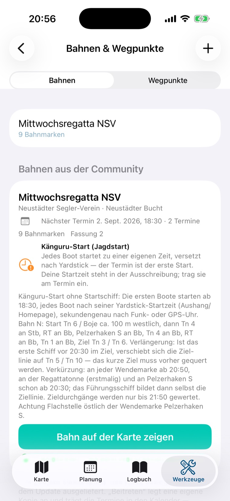
12
Die eigene Kopie oben in „Bahnen“; die Community-Vorlage bleibt darunter erhalten.
Eigene Bahn — neun Bahnmarken; ein Tipp öffnet den Kurs-Editor.
Community-Eintrag — bleibt als Referenz; hier erscheint später „Neue Fassung verfügbar“.
Teil 2: Bahn verstehen und anpassen
Ein Tipp auf die eigene Bahn öffnet den Kurs-Editor als Vollbild-Karte. Rechts die Werkzeug-Palette (Marke, Tor, Info, Zone, Start, Ziel), unten der Streifen mit der Bahnfolge. Mit Werkzeug „Marke“ gilt: Tipp auf eine Tonne oder einen Wegpunkt hängt sie an die Bahn, Tipp auf freies Wasser legt dort eine neue Marke an, erneuter Tipp auf eine Bahnmarke heißt „noch einmal anlaufen“ (Rundkurs). Das Werkzeug bleibt aktiv; nur nach dem zweiten Ende einer Linie springt die Palette auf „Marke“ zurück. Der Pfeil oben macht den letzten Schritt an den Marken rückgängig, Schritt für Schritt. „?“ blendet eine kurze Bedienhilfe ein, „Fertig“ schließt.
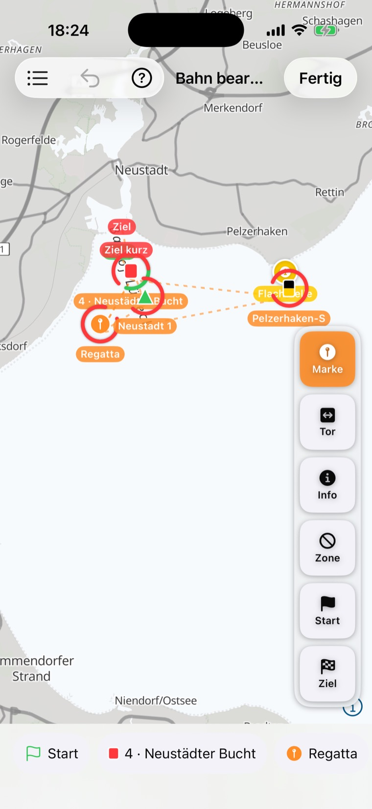
12345
Kurs-Editor mit der Bahn N: Start und Ziele vor Neustadt, Regattatonne, Pelzerhaken-S im Osten; die Tonnen tragen ihre Rundungsbögen.
Liste — öffnet „Reihenfolge & Stammdaten“ (nächster Schritt).
Rückgängig — nimmt den letzten Bearbeitungsschritt an den Marken zurück, mehrfach hintereinander.
? — kurze Bedienhilfe zu Palette und Tipps.
Werkzeug-Palette — Marke, Tor, Info, Zone, Start, Ziel; das aktive Werkzeug ist orange.
Bahnfolge — Start, Marken, Ziel in Reihenfolge; ein Tipp öffnet das Blatt der Marke.
„Liste“ öffnet „Reihenfolge & Stammdaten“: Name, Startverfahren (Klassenstart, Känguru-Start oder Gruppenstarts) und die Bahnreihenfolge. „Bearbeiten“ schaltet das Ziehen frei. Die Chips „Stb“ und „Bb“ sind die Rundungsseiten: aus der Reihenfolge abgeleitet — Linkskurve um die Tonne = an Backbord (rot), Rechtskurve = an Steuerbord (grün) —, per Tipp auf die Zeile von Hand änderbar.
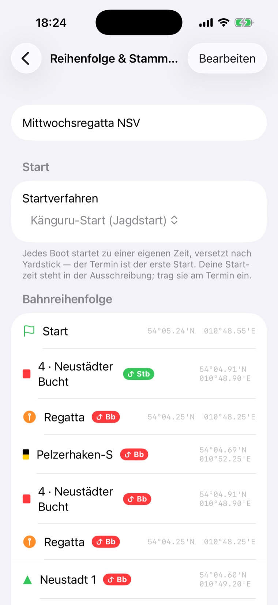
1234
„Reihenfolge & Stammdaten“: Start, Tonne 4 an Steuerbord, Regatta und Pelzerhaken-S an Backbord, zweite Runde, Neustadt 1.
Bearbeiten — Reihenfolge per Ziehen ändern, Marken entfernen.
Name — der Name der Vorlage; die Termine im Kalender tragen ihn ebenfalls.
Startverfahren — Känguru-Start (Jagdstart); die App fragt deshalb nach deiner Startzeit.
Bahnreihenfolge mit Rundungsseiten — Chips Stb/Bb je Durchfahrt, aus der Reihenfolge abgeleitet, per Tipp änderbar.
Weiter unten stehen die zwei Ziele „Ziel kurz“ und „Ziel“ — die Bahn N hat eine Verlängerung. Dann die Info-Punkte, hier „Flachstelle“ östlich von Pelzerhaken-S. Ein Info-Punkt ist ein Notizzettel an einer Stelle im Revier und bewusst kein Bahnelement: nicht in der Bahnreihenfolge, nie gestempelt. Auf der Karte gelb mit „i“, ein Tipp öffnet den Text. Er kommt mit der Bahn ins Rennen auf die Hauptkarte — bearbeiten im Editor, im Rennen nur lesen.
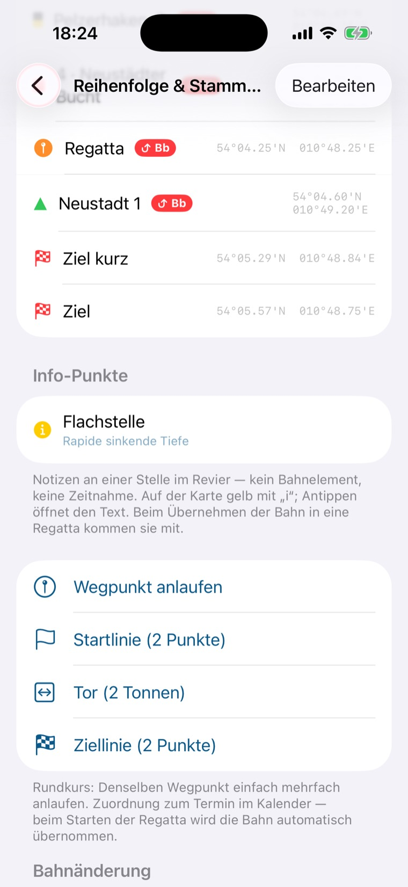
1234
Zwei Ziele, ein Info-Punkt und die Zeilen zum Hinzufügen auf dem Listenweg.
Ziel kurz und Ziel — erstes Ziel (Tn 3 / Tn 6) und verlängertes Ziel (Tn 5 / Tn 10).
Info-Punkt „Flachstelle“ — Notiz im Revier, kein Bahnelement; im Rennen auf der Hauptkarte lesbar.
Am Ende der Liste liegt „Bahnänderung“. Verkürzung und Verlängerung sind Eingriffe der Wettfahrtleitung mit fester Uhrzeit in der Ausschreibung — deshalb gehören sie zur Bahn. „Bahnverkürzung ab Uhrzeit“ (hier 20:50): Wer ab dann erst eine Wendemarke erreicht, wird dort gewertet. „Bahnverlängerung bei Ziel vor“ (hier 20:30): Ist das erste Ziel vor dieser Zeit gequert, fährt das Feld den Zusatzschenkel; welche Marken dazugehören, legst du an einer Bahnmarke fest (Schritt 13). An der Zeile des ersten Ziels sitzt der Schalter „Bei Verlängerung als Tor mitnehmen“: aus heißt, das erste Ziel gehört bei Verlängerung nicht mehr zur Bahn; an heißt, es wird ein Tor mit Durchfahrtszeit. Gewertet wird das erst in der Auswertung Plus: Die Verkürzung schlägt die App nur vor, die Verlängerung wertet sie nur, wenn sie zweifelsfrei ist.
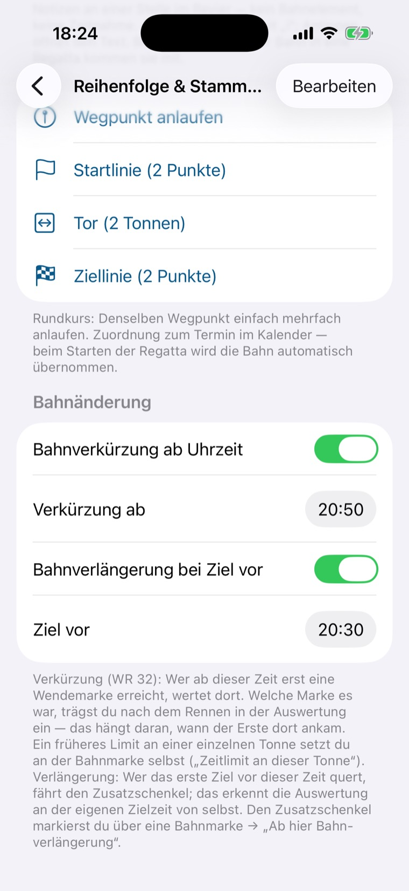
123
„Bahnänderung“: die Uhrzeiten aus der Segelanweisung, beide eingeschaltet.
Bahnverkürzung ab Uhrzeit — 20:50; die allgemeine Verkürzungszeit an jeder Wendemarke.
Bahnverlängerung bei Ziel vor — 20:30; erstes Ziel vor dieser Zeit gequert = Zusatzschenkel.
Erklärung — wie die Auswertung beide Fälle behandelt und wo der Zusatzschenkel markiert wird.
Ein Tipp auf eine Marke in der Bahnfolge öffnet das Blatt „Bahnmarke“, hier Pelzerhaken-S. Oben Name und Position; das Symbol davor zeigt den Seezeichen-Typ (Aufblastonne, Fahrwassertonne, Kardinaltonne, Bake, Schiff), den die Karte beim Ranzoomen zeichnet. „Rundungsseite“ steht auf „an Backbord“; „Nur passieren“ ist für Tonnen, die an einer Seite zu lassen sind, ohne gerundet zu werden. Der Erkennungsradius (Standard 60 m, 20–200 m) ist nur die Toleranz, in der die Tonne als erreicht gilt; gestempelt wird der Punkt der dichtesten Annäherung. „Zeitlimit an dieser Tonne“ ist das frühere Limit dieser Wendemarke, hier 20:30: Es vererbt sich rückwärts auf frühere Tonnen ohne eigenes Limit, gilt nie für den Start und bei Rundkursen nur für die eine Durchfahrt.
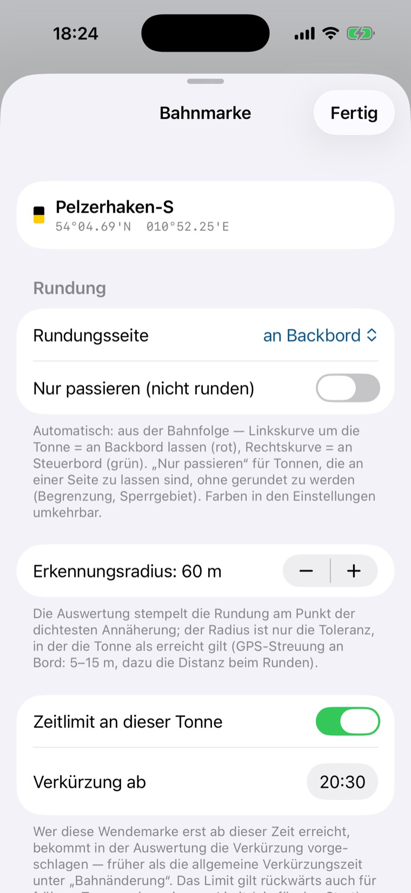
1234
Bahnmarke Pelzerhaken-S: an Backbord, 60 m Radius, eigenes Zeitlimit 20:30.
Name, Position, Seezeichen-Typ — das Symbol vor dem Namen ist der Typ, den die Karte beim Ranzoomen zeigt.
Rundungsseite / Nur passieren — an Backbord (rot) oder an Steuerbord (grün); „Nur passieren“ für Tonnen, die nicht gerundet werden.
Erkennungsradius — 60 m Standard, 20–200 m; nur die Toleranz, nicht der Zeitstempel.
Zeitlimit an dieser Tonne — 20:30, früher als die allgemeine Verkürzung; vererbt sich rückwärts.
Weiter unten im selben Blatt: „Noch einmal anlaufen (weitere Runde)“ hängt dieselbe Tonne erneut an die Bahn — Position, Name und Radius werden nur einmal gepflegt, jede Durchfahrt bekommt ihre eigene Rundungszeit und ein Runden-Badge. „Verlängerung beginnt danach“ setzt den Schnitt für den Zusatzschenkel: Alles nach dieser Zeile gehört zur Verlängerung, die Zeile selbst nicht. Bei der NSV-Bahn gehört der Schnitt deshalb hinter das erste Ziel („Ziel kurz“): Das erste Ziel ist der Auslöser der Verlängerung und nie Teil von ihr; an Pelzerhaken-S bleibt der Schalter aus.
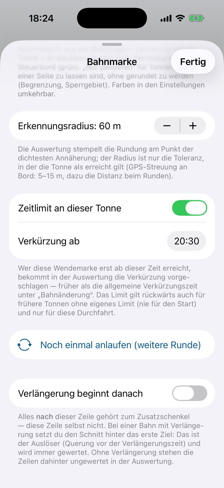
1234
Dasselbe Blatt, nach unten gescrollt: Rundkurs und der Schnitt für den Zusatzschenkel.
Erklärung zum Zeitlimit — Vererbung rückwärts, nie für den Start, je Durchfahrt.
Noch einmal anlaufen — dieselbe Tonne ein weiteres Mal in die Bahnfolge legen.
Verlängerung beginnt danach — aus, weil der Schnitt hinter das erste Ziel gehört.
Erklärung — alles nach dieser Zeile zählt zum Zusatzschenkel, die Zeile selbst nicht.
Den zweiten Editor triffst du an Bord: Im Kontext-Tab „Regatta“ öffnet „Bahn“ das Bahnprofil des laufenden Törns, in der Auswertung heißt der Weg „Bahn anpassen“. Gleiche Vollbild-Karte, gleiche Palette, gleiches Bahn-Blatt — nur die Reichweite ist anders: In der Vorlage pflegst du, was jede Woche gilt; hier, was heute gilt. Verlegt die Wettfahrtleitung kurzfristig eine Tonne, korrigierst du sie hier, ohne die Vorlage anzufassen, und sicherst die geänderte Bahn bei Bedarf über das Menü als neue Vorlage.
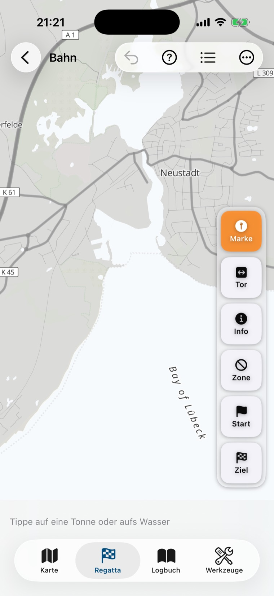
1234
Der Editor an Bord bei einem Törn ohne Bahn — deshalb leer; dieselbe Karte und Palette wie in der Vorlage.
Zurück „Bahn“ — führt in den Kontext-Tab des Törns.
Rückgängig, ?, Liste, Menü — wie in der Vorlage; über das Menü lässt sich die geänderte Bahn als neue Vorlage sichern.
Hinweiszeile — „Tippe auf eine Tonne oder aufs Wasser“: die erste Marke entsteht mit einem Tipp.
Teil 3: Vom Termin zum Startschuss
Werkzeuge → Kalender zeigt unter „Demnächst“ die Serie: jeden Mittwoch „Mittwochsregatta NSV“ um 18:41 — deine Startzeit, nicht der erste Start. Am Renntag tippst du „Starten“ neben dem Termin. Über „+“ legst du eigene Regatta-Termine an, mit der Zeile „Bahn-Vorlage“. Serien lassen sich gesammelt bearbeiten: „Auf künftige Termine der Serie anwenden“ übernimmt Name, Uhrzeit, Boot, Bahn und Notizen für alle ausstehenden Termine.
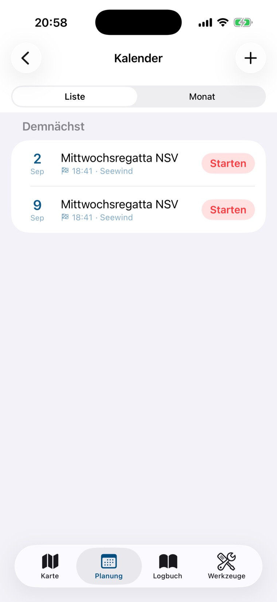
123
Kalender nach dem Beitreten: die Wochenserie mit der eigenen Startzeit 18:41 und dem Boot „Seewind“.
Serien-Termine — jeder Mittwoch mit Bahn, Startzeit und Boot; einzelne Tage lassen sich ändern.
Starten — legt am Renntag die Regatta samt Bahn und Countdown an, nach Rückfrage.
„+“ — eigener Termin, bei Regatten mit Zeile „Bahn-Vorlage“.
Der andere Weg führt über das Logbuch: Das Plus-Menü oben rechts bietet „Neuer Törn“, „Neue Regatta“ und „Neues Training“; „Neue Regatta“ öffnet dasselbe Formular wie Karte → Losfahren → Regatta. „Ablegen“ darunter startet dagegen einen normalen Törn ohne Countdown.
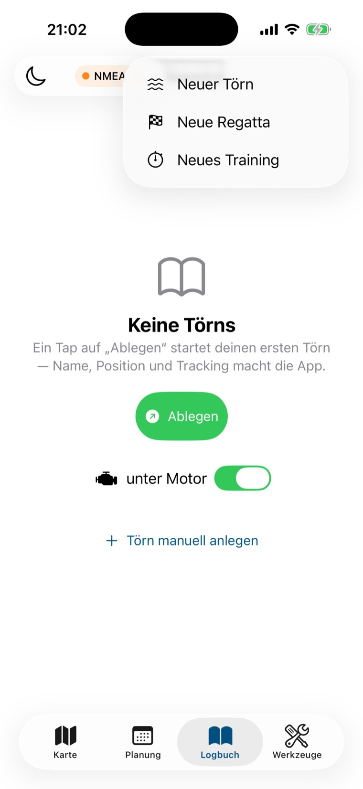
12
Plus-Menü im Logbuch: Regatta ohne Kalender-Termin anlegen.
Neue Regatta — öffnet das Formular aus dem nächsten Schritt.
Ablegen — normaler Törn ohne Startschuss; nicht für die Regatta.
Das Formular fragt Name, Startschuss (Schnellwahl +5 bis 1 h oder Datum, Uhrzeit und Sekunden), Vorstart-Dauer (5, 6, 10 oder 15 Minuten; 5 für 5-4-1-Starts), Bahn und Wertung. Die Bahn-Zeile bietet deine Vorlagen an — Marken, Linien und Zeitregeln kommen mit. Liegt heute ein Kalender-Termin mit Bahn an, ist sie vorbelegt; im Bild steht „Keine“, weil am Aufnahmetag kein Termin anlag. Ohne Bahn fehlen im Vorstart Linie, Distanz und Bias. Das Tracking beginnt mit dem Vorstart, „Starten“ legt die Regatta an.
12345
„Neue Regatta“ aus dem Plus-Menü: Startschuss mit Sekundenfeld, Vorstart-Dauer, Bahn-Vorlage.
Name — vorbelegt mit Datum, frei änderbar.
Startschuss — Schnellwahl-Chips, Datum, Uhrzeit und eigenes Sekundenfeld.
Vorstart-Dauer — 5, 6, 10 oder 15 Minuten; ab hier läuft das Tracking.
Bahn — Vorlage wählen; mit Kalender-Termin am Renntag schon eingetragen.
Starten — legt die Regatta an.
„Starten“ im Kalender fragt vorher nach — „Regatta anlegen“: „Mittwochsregatta NSV“ wird mit Bahn und Countdown angelegt, Start 18:41. „Jetzt anlegen“ erstellt die Regatta mit Bahnprofil, Zeitregeln und deiner Startzeit; ein Fehltipp auf „Starten“ bleibt folgenlos.
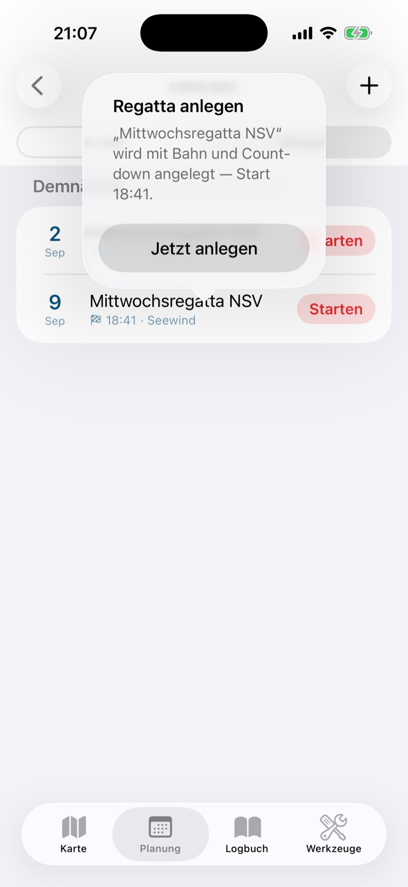
12
Rückfrage beim „Starten“ aus dem Kalender.
Was angelegt wird — Name, Bahn, Countdown und der Start um 18:41.
Jetzt anlegen — erst dieser Tipp erstellt die Regatta.
Das Kontext-Feld wechselt auf „Regatta“: „Bahn“ mit der Zahl der Marken und Linien (öffnet den Editor an Bord, Schritt 14), „Auswertung“ und „Regatta-Detail“. Countdown, Abstand zur Linie und Bias stehen im Vorstart oben auf der Karte, nicht hier.
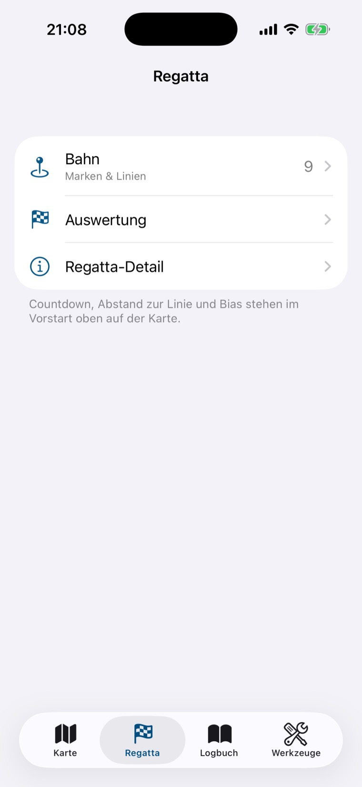
12345
Kontext-Tab „Regatta“ nach dem Anlegen: neun Marken und Linien aus der Vorlage.
Bahn — Bahnprofil des Törns, öffnet den Editor an Bord.
Auswertung — nach dem Rennen; siehe Regatta-Auswertung.
Regatta-Detail — Törn-Detail mit Karte, Track und Zusammenfassung.
Hinweis — die Live-Werte des Vorstarts liegen auf der Karte.
Tab „Regatta“ — das Kontext-Feld zeigt jetzt dieses Gesicht.
„Regatta-Detail“ ist das Törn-Detail der Regatta: Regatta-Auswertung, „Bahnmarken & Linien“ (9), Karte, Track nachzeichnen, Tagesbericht (Wind) und die Zusammenfassung mit Startschuss auf die Sekunde (18:41:00). Hier prüfst du vor dem Ablegen, ob Startschuss und Bahn stimmen.
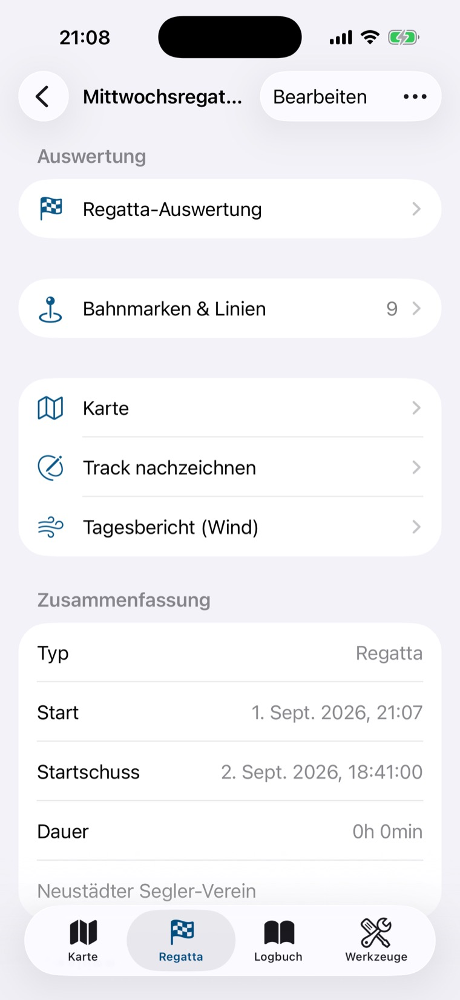
123
Regatta-Detail: die Bahn ist übernommen, der Startschuss steht auf die Sekunde.
Regatta-Auswertung — nach dem Ziel; Kernzahlen, Start, Marken.
Bahnmarken & Linien — neun Elemente aus der Vorlage, hier auch nachträglich korrigierbar.
Startschuss — 2. Sept., 18:41:00; Sekunden erscheinen überall, wo welche gesetzt sind.
Im Logbuch steht die Regatta als „Warten auf Vorstart“ mit dem Countdown bis 18:41:00. „Sync“ rundet den Startschuss beim Signal des Wettfahrtleiters auf die volle Minute, „−5 Min“ und „+5 Min“ verschieben ihn bei Startverschiebung. „Wind setzen“ liefert die Windrichtung für den Linien-Bias Plus, solange kein NMEA-Wind da ist. Alles Weitere — Vorstart, Linie pingen, Rennen, Ziel — steht in C5.
1234
„Warten auf Vorstart“: Der Countdown läuft auf die eigene Startzeit 18:41:00.
Countdown — Zeit bis zum eigenen Startschuss, mit Sekunden.
Sync — beim Signal einmal tippen, der Startschuss rastet auf die volle Minute.
−5 / +5 Min — Startverschiebung; mehrfach tippen addiert.
Wind setzen — Windrichtung für den Linien-Bias (Plus).
Eigene Bahn ohne Community
Fehlt deine Regatta in der Community-Liste, baust du die Bahn selbst — über „+“ in Werkzeuge → Bahnen & Wegpunkte. Die Tonnen des Reviers musst du nicht abtippen: Die Wegpunkt-Bibliothek zeigt unter „Seezeichen im Revier“ die benannten Tonnen aus den geladenen Seekarten-Daten, nach Nähe sortiert; ein Tipp übernimmt Name, Position und Typ. Übernommene Seezeichen stehen getrennt von den eigenen Wegpunkten; Löschen entfernt nur die Kopie.
Start- und Ziellinie entstehen aus je zwei Enden — Tonne aus dem Revier, Tipp auf die Karte, gepingte Position oder Koordinaten aus der Ausschreibung; die Auswahl bietet auch die Seezeichen im Kartenausschnitt plus 5 sm darum herum. Ein Tor sind zwei Tonnen, durch die hindurchgefahren wird; gestempelt wird die Durchfahrt. Zonen sind Flächen, die man kennen muss (Sperrgebiet, Naturschutz, Untiefe, Hinweis): Werkzeug „Zone“, mindestens drei Ecken antippen, „Fertig“, Name und Art. Weder Zone noch Info-Punkt wird angelaufen.
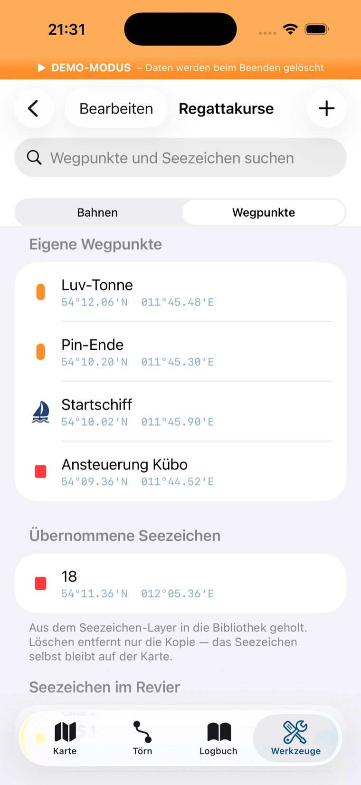
12
Wegpunkt-Bibliothek: eigene Marken oben, übernommene Seezeichen und das Revier darunter.
Eigene Wegpunkte — Luv-Tonne, Pin-Ende, Startschiff, Ansteuerung; selbst angelegt, mit Seezeichen-Typ.
Übernommene Seezeichen / Seezeichen im Revier — Kopien aus dem Seezeichen-Layer; darunter beginnt die Liste der Revier-Tonnen, nach Entfernung sortiert, Tipp übernimmt.
Teilen
Eine Bahn verlässt die App auf drei Wegen, alle frei. Etmar-Freigabe: Gedrückt halten in der Bahn-Liste → „Teilen (Etmar-Freigabe)“ erzeugt eine .brokkolishare-Datei für AirDrop, Mail oder Messenger; Info-Punkte wandern mit, der Empfänger übernimmt sie nach einer Vorschau mit einem Tipp. GPX für den Plotter: „Als GPX teilen (Plotter)“ am selben Ort exportiert die Bahn als GPX-1.1-Datei für B&G, Garmin, Raymarine & Co. — Tonnen werden Wegpunkte, die Bahnreihenfolge eine GPX-Route. An Etmar senden: Derselbe Menüpunkt wie beim Feedback öffnet einen fertigen Brief mit Anhang; abgeschickt wird er von dir, nie von der App, was mitgeht steht samt Rechteerklärung im Brieftext. Kein Server, kein Konto: Geprüft wird von Hand, ausgeliefert mit dem nächsten Update.
Bitte testen
Ist der Weg Beitreten → Startzeit → Kalender ohne Anleitung verständlich? Wo hättest du gestockt?
Stimmen Marken, Rundungsseiten, Zeitregeln und Termine der NSV-Bahn mit der Ausschreibung überein? Nenne jede Abweichung.
Findest du im Editor die Rundungsseite und das Zeitlimit einer einzelnen Tonne, ohne diesen Artikel zu lesen?
Nach dem Zieleinlauf zerlegt Etmar das Rennen in Zahlen — vom Start über jede Marke und jedes Manöver bis zu der Frage, wo die Zeit geblieben ist.
Einstieg und Kernzahlen
Alle Auswertungen liegen unter Werkzeuge → Vorbereiten → Auswertungen (ebenso Boot → Regatta & Training auswerten): Regatta-Auswertungen, Trainings und Statistik — auch ohne Daten, dann mit dem Grund und dem Weg zum Anlegen. Nach dem Zieleinlauf zeigt das Törn-Detail der Regatta die Kernzahlen; ein Tipp darauf öffnet die vollständige Auswertung.
Kostenlos aus dem iPhone-GPS: Renndauer, Distanz im Rennen, Ø und Max SOG, SOG beim Startschuss. Gerechnet wird nur über die Rennphase von der Querung der Startlinie bis zum Ziel — Vorstart und Rückweg in den Hafen würden Distanz, Ø SOG und Bug-Bilanz verfälschen. Daneben steht die offizielle Zeit ab Startschuss, die Differenz als Startverlust.
Der Abschnitt „Auswertungsfenster" nennt die Herkunft beider Grenzen: Linienquerung, Logeintrag, Startschuss oder — orange markiert — nur das Trackende. Unter „Grenzen korrigieren" setzt du beide von Hand oder stellst sie auf automatisch zurück. Am zuverlässigsten wird das Fenster mit angelegter Start- und Ziellinie.
Die Zeile „Wertung" deckt Rennen ohne Zieldurchgang ab: „Wettfahrt abgebrochen" (die Wettfahrtleitung hat abgebrochen, Flagge N) oder „Aufgegeben" (das eigene Boot ist ausgestiegen) — getrennt geführt, weil es zwei verschiedene Dinge sind. Gerechnet wird dann bis zum Ende der Aufzeichnung oder bis zur Grenze aus dem Auswertungsfenster; die Warnung „aus Trackende" entfällt, weil das Trackende hier die richtige Antwort ist. Fahrleistung, Schläge und erreichte Marken bleiben voll ausgewertet — ein abgebrochenes Rennen ist als Training genauso brauchbar. Die Zeile steht in allen Stufen, weil sie die Kernzahlen verändert.
In der Gratis-Version bleibt alles Weitere unter den Kernzahlen als Sektion mit Schloss sichtbar.
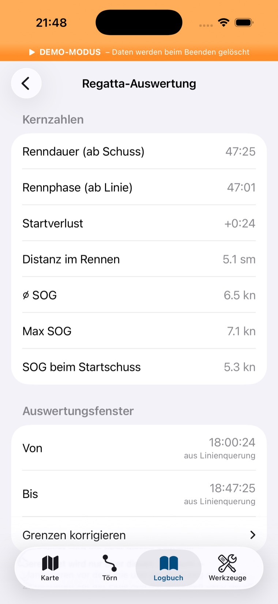
123
Regatta-Auswertung, oberer Teil: die kostenlosen Kernzahlen aus dem GPS und das Auswertungsfenster mit der Herkunft beider Grenzen.
Renndauer, Rennphase, Startverlust — offizielle Zeit ab Schuss, Rennphase ab Linienquerung, die Differenz als Startverlust.
Auswertungsfenster — beide Grenzen mit Herkunft, hier „aus Linienquerung"; „aus Trackende" stünde orange.
Grenzen korrigieren — von Hand setzen oder auf automatisch zurückstellen.
Plus: Bahn, Start und Manöver
Mit Plus rechnet die Auswertung aus dem GPS-Track weiter: SOG-Verlauf und, mit angelegter Bahn, Distanz zur Linie beim Schuss, Zeit bis zur Linienquerung, Rundungszeit an jeder Marke samt Schenkelzeit seit der vorherigen Marke (bei Rundkursen pro Runde), Schläge, Wenden und Halsen. „Bahn anpassen" in der Bahn-Sektion führt in die Bahn-Liste; nach einer Korrektur rechnet die Auswertung neu.
RennkartePlus — drei Sätze am Anfang: was der Start gekostet hat, der Mehrweg zur ersten Marke, beste und schlechteste Wende (mit Pro stattdessen die Kreuzleistung). Der eine Blick; wer gräbt, scrollt.
Schenkel-BilanzPlus — je Schenkel Zeit, gesegelte Strecke, Mehrweg und VMC, der Fortschritt zur nächsten Marke: Höhe, Speed und Mehrweg in einer Zahl, ohne Winddaten. Mehrweg ist gesegelte Strecke geteilt durch Luftlinie; auf der Kreuz sind 100 % unerreichbar (bei 42° Halbwendewinkel rund 135 %), Maßstab ist dein eigener Bestwert.
StartbilanzPlus — Abstand zur Linie beim Schuss, Verzug bis zur Querung und die Position auf der Linie (Pin-Drittel, Mitte, Schiff) als Marke zwischen Pin und Schiff. Mit dem im Vorstart eingegebenen Handwind auch der Linien-Bias beim Schuss und ob das bevorzugte Ende genommen wurde, dazu der Speed-Aufbau von 30 s vor bis 60 s nach dem Schuss. War das Boot beim Schuss über der Linie (ab 5 m, darunter ist GPS-Streuung), steht das rot. Live im Vorstart zeigen Kontextleiste und Logbuch dann „ÜBER x m" statt Abstand und Time-to-burn; beide verschwinden, sobald der GPS-Fix älter als 10 s ist — ein eingefrorener Fix kostet sonst einen Frühstart.
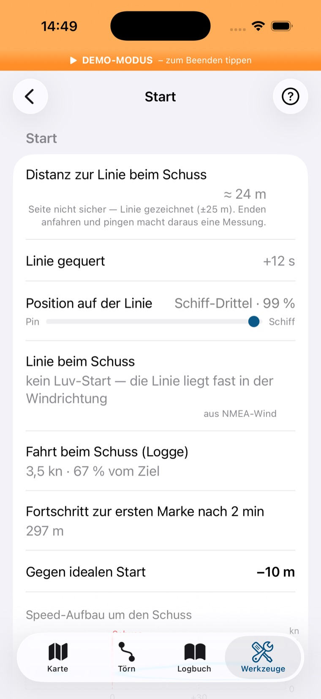
12345
Startbilanz: Wertung, Abstand und Verzug beim Schuss, Position auf der Linie, Linien-Bias und bevorzugtes Ende.
Wertung — Ziellinie, „Wettfahrt abgebrochen" oder „Aufgegeben".
Distanz zur Linie beim Schuss und Verzug bis zur Querung — ab 5 m über der Linie stünde die Zeile rot.
Position auf der Linie — Marke zwischen Pin und Schiff, hier im Pin-Drittel.
Linien-Bias und bevorzugtes Ende — aus dem Handwind, mit Pro aus dem NMEA-Wind.
SOG beim Schuss in Prozent des Polar-Ziels — Teil der Startbilanz mit Pro.
Manöver einzelnPlus — jede Wende und Halse mit Kosten in Sekunden, Speed-Delle in Prozent und Erholzeit bis 95 % der Fahrt vor dem Manöver. Beste, mittlere und schlechteste Wende oben, Durchschnittskosten je Windband darunter, dahinter die aufklappbare Liste aller Manöver mit Uhrzeit und Windband. Ein Tipp auf ein Manöver springt in den SOG-Verlauf, der die Manöver als Marken zeigt und das gewählte rot hervorhebt. Braucht die 5-s-Regatta-Aufzeichnung; Einzelwerte streuen in Böen und Welle, über viele Manöver sind sie belastbar.
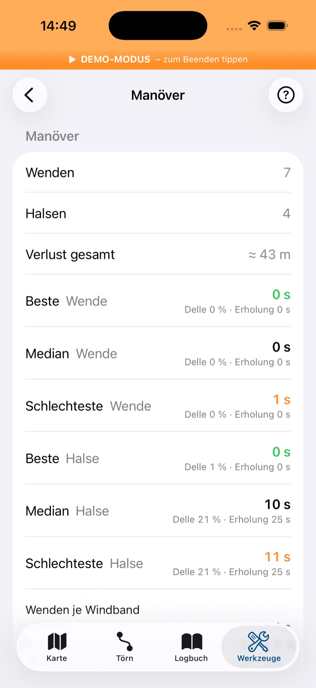
12345
Ende der Schenkel-Bilanz und die Manöver-Sektion: Zählung, Gesamtverlust, beste und schlechteste Wende, Kosten je Windband.
Schenkel-Bilanz — Zeit, Strecke, Mehrweg und VMC; hier der letzte Schenkel zur Ziellinie.
Wenden und Halsen — gezählt aus dem Track.
Verlust gesamt in Metern — Manöververlust gegen den VMG der Nachbarschläge, mit Pro.
Beste und schlechteste Wende — Kosten in Sekunden, Speed-Delle, Erholzeit.
Wenden je Windband — Durchschnittskosten je Windband.
Rundungsqualität und ZielanflugPlus — jede gewertete Tonnenrundung aus dem SOG-Profil ±60 s: Speed-Delle an der Marke, Erholzeit und die Kosten gegen die Anfahrt-Fahrt (beim Rundkurs mit Δ zur besten eigenen Rundung derselben Tonne), dazu die Drehung vor und nach der Tonne als Form-Zahl. Rundungsseite und Abstand bleiben bewusst draußen, beides liegt unter der GPS-Genauigkeit. Der Zielanflug zeigt die letzten 200 m: gewähltes Linien-Ende mit Position auf der Linie, Ø Speed und den Weg in Prozent der Luftlinie — 100 % heißt schnurgerade, Mehrweg auf den letzten Metern ist fast immer verschenkte Zeit.
Wo die Zeit geblieben ist
Ganz oben in der Auswertung zerlegt der Zeitverlust-WasserfallPlus deinen Rückstand in Posten: Renndauer, Referenzzeit, + Start, + Manöver (n × Ø), + Mehrweg (sm), + Speed & Übriges. Die Summe geht exakt auf; was die Messposten nicht erklären, steht als Rest. Das priorisiert: Kostet Mehrweg acht Minuten und Manöver 1:39, ist Wendetraining die falsche Investition. Referenz mit Plus ist dein bestes eigenes Rennen auf derselben Bahn (erkannt an ihrer Signatur). Referenz mit Pro ist die polar-optimale Zeit der Bahn beim gemessenen Wind: Kreuz über das Beat-VMG (der nötige Zickzack steckt in der Referenz), Vorwind über das Run-VMG; Mehrweg zählt dann nur den Weg über den Halbwendewinkel hinaus.
Verkürzung und Verlängerung wertenPlus — die Verkürzung wertet die App nie automatisch: Ob verkürzt wurde, hängt daran, wann der Erste im Feld an der Marke war, und das sieht dein Gerät nicht. Sie schlägt vor („Ab 16:00 wird verkürzt. Erste Marke danach: Tonne 4 um 16:04. Dort werten?"); bestätigst du, wird diese Durchfahrt zum Zieldurchgang, alles dahinter steht ausgegraut in der Bahn. Die Verlängerung wertet die App nur, wenn sie zweifelsfrei ist — in genau zwei Fällen: Du bist selbst vor der hinterlegten Uhrzeit durchs erste Ziel gegangen, oder die Tonnen des Zusatzschenkels liegen in deinem Track. Warst du selbst zu spät, heißt das nicht „keine Verlängerung", der Erste kann trotzdem vor der Zeit durch gewesen sein; dann fragt die Auswertung nach und wertet bis zu deiner Antwort die kurze Bahn. Überstimmen geht immer in beide Richtungen. Was aus dem ersten Ziel wird, regelt der Schalter „Bei Verlängerung als Tor mitnehmen" an der Bahn: aus — es steht ungewertet in der Auswertung; an — es zählt als Tor mit Durchfahrtszeit und genommener Tonne. Ohne Verlängerung bleibt es der normale Zieldurchgang.
Pro: Wind, Polare und Bug
Mit Pro und Winddaten vom NMEA-Netz kommt die taktische Ebene dazu.
Wind & DreherPro — aus der aufgezeichneten Windrichtung: pendelnd, anhaltend drehend oder stabil, mit Auslenkung, Periode bzw. Gesamtdrehung, Windbereich, Böigkeit und Richtungsspanne. „Auf geliftetem Bug" nennt den Anteil der Kreuzzeit auf dem jeweils günstigeren Bug (gegen das gleitende Windmittel), die Reaktionszeit, wie lange du im Header gesegelt bist, bevor du gewendet hast.
Kurs-Bilanz, VMG und Bug-BilanzPro — Kurs-Bilanz mit VMG (Kreuz/Vorwind automatisch aus dem Windwinkel erkannt), Bug-Bilanz mit Zeit, Distanz und Ø SOG je Bug sowie VMG und Ø TWA von der Kreuz je Bug (Farben nach Einstellungen → Bug-Färbung), Schlag-Liste mit VMG und Speed je Schlag, Wenden und Halsen mit geschätztem Manöververlust in Metern gegen den VMG der Nachbarschläge, gerechnet über das ganze Fenster bis zur Erholung. Liefert ein Bug dauerhaft über 4 % mehr VMG, steht daneben die Empfehlung, den Masttop-Offset des Windgebers zu prüfen (Boot → Kalibrierung).
Polar-LeistungPro — mit hinterlegten Polardaten die Leistung relativ zur Polar-Zielgeschwindigkeit: gesamt, je Kurs, je Schlag und als Matrix Windband × Kurs (Kreuz/Raum/Vorwind), zeitgewichtet mit Messdauer je Zelle, nur Zellen ab einer Minute. Daraus folgt ein Trainingsziel wie „über 16 kn Kreuz". Gerechnet wird gegen die Fahrt durchs Wasser, sobald eine Logge am Bus hängt; ohne Logge weist die Auswertung das orange aus — dann steckt der Strom in der Prozentzahl.
Startbilanz mit ProPro — Linien-Bias aus dem NMEA-Wind, Speed beim Schuss in Prozent des Polar-Ziels und die eine Zahl „Gegen idealen Start −38 m": der Luv-Rückstand nach 2 Minuten gegenüber einem Start exakt beim Schuss am bevorzugten Ende mit Beat-VMG der Polare — Position, Timing und Speed in einer Zahl.
Groove-KonstanzPro — die Kreuz-Punkte als Wolke |TWA| × Fahrt über der hinterlegten Polarkurve: eng heißt konstant im Groove, links unter der Linie zu hoch und zu langsam (pinching), rechts darüber zu tief und schnell. Dazu σ(TWA) und σ(Fahrt) — 2° Streuung ist ein anderes Segeln als 6°. Sind Segelwechsel geloggt, steht an jedem Schenkel die Garnitur mit dem Polar-% des Schenkels; ohne geloggte Wechsel wird nichts geraten.
Krängung und Strom/AbdriftPro — sichtbar als experimentell markiert, die Rechnungen sind noch nicht gegen echte Borddaten validiert. Krängung: Ø auf Kreuz und Vorwind aus dem Lagesensor, mit gesetzter Zielkrängung (Boot → Kalibrierung) der Anteil der Kreuz-Zeit darüber — „22 % über 28°" heißt zu spät gerefft. Strom & Abdrift: der Versatz als Vektor (über Grund minus durchs Wasser, braucht STW und HDG), immer mit Streuung; liegt das Mittel in der Streuung, sagt die App „kein klarer Versatz" — Loggen- und Kompassfehler stecken mit im Wert.
Segel-CrossoverPro — unter Boot → Segel → Segel-Crossover (auch in den Auswertungen) je Segel der angegebene gegen den gemessenen Windbereich: dort, wo eine Garnitur mit diesem Segel das beste Polar-% aller getragenen lieferte (je Windband × Kurs, ab 5 min Messzeit je Zelle, über gewertete Rennen und Messläufe). „Dein A2 trägt real bis 19 kn, nicht bis 16" — mit Pfeil als Handlung. Darunter die gemessene Crossover-Tabelle mit der besten Garnitur je Windband und Kurs. Braucht sauberes Segelwechsel-Logging; leere Zellen werden nicht hochgerechnet.
Platzierung, Regatta-Bilanz und Langzeitkurven
Wertung und Ergebnis stehen gebündelt am Ende der Auswertung; der Link „Platzierung eintragen" in der Rennkarte springt direkt hin. Dort trägst du Platzierung und Feldgröße ein, dort sitzt auch der Schalter „Aus der Gesamtauswertung nehmen". Klasse, Serie und Vermessung (Yardstick/ORC) gibst du beim Anlegen im Regatta-Formular an.
Die Regatta-Bilanz unter Boot → Regatta-Bilanz (und in den Auswertungen) zählt die Rennen des Boots zusammen: Rennen, Rennstunden, Rennmeilen, Manöver, beste und mittlere Platzierung. Kein stiller Filter: Ausgeschlossene Rennen stehen als Liste mit Grund — von Hand (wieder aufnehmbar) oder automatisch (unter 10 min / 0,5 sm). Rennen auf fremdem Boot und Rennen ohne Winddaten zählen, sind aber sichtbar „mit Einschränkung" markiert. Zwei getrennte Resets: „Neue Saison" (Zähler) und „Neue Segel" (gefahrene Polare) — beide setzen nur den Stichtag, gelöscht wird nichts.
Ab zwei gewerteten Rennen kommen die Langzeitkurven dazu. Alle respektieren Ausschlüsse und Saison-Stichtag; jede sagt, was ihr noch fehlt, statt leer zu verschwinden:
FormkurvePlus — mit Plus als Ø-SOG-Trend (der Trend stimmt, das Niveau ist nicht normiert), mit Pro als Polar-Leistung je Rennen, getrennt nach Kreuz und Vorwind mit 100-%-Referenz.
Manöver-LernkurvePlus — Median-Manöverkosten je Rennen, mit Plus in Sekunden aus der Speed-Delle, mit Pro in Metern.
Startbilanz-HistoriePlus — Ø Abstand beim Schuss, Ø Verzug, Endenwahl-Verteilung Pin/Mitte/Schiff, Trefferquote „bevorzugtes Ende genommen" und, sobald Platzierungen erfasst sind, „deine besten Ergebnisse kamen vom Pin".
Stärkenprofil nach WindbandPro — Ø Polar-Leistung und Platzierung je Windband.
Gefahrene PolarePro — unter Boot → Regatta-Bilanz → Gefahrene Polare steht, was das Boot wirklich läuft: als Punkte über der hinterlegten Polare, je Windband eine Ansicht, Winkel in 10°-Schritten (beide Bugs zusammen), je Zelle das 90. Perzentil der Bootsgeschwindigkeit — nicht das Maximum, nicht der Mittelwert. Die Zellen füllen sich beim Rennabschluss von selbst, streng gefiltert: Motorphasen, Manöverfenster ±20 s, hohe Drehrate, Lücken über 60 s und nachgezeichnete Tracks fliegen raus; Rennen auf fremdem Boot zählen nie, Messläufe aus dem Training fließen ein. Unter 5 min Messzeit bleibt eine Zelle blass und ohne Zahl, ab 30 min ist sie voll; ohne STW misst die App über Grund (SOG, mit * markiert) — dann steckt der Strom mit im Wert. Der Stichtag „Neue Segel" und die Ausschlüsse der Bilanz gelten auch hier. In die hinterlegte Polare übernehmen geht nur auf Aktion, zellweise ab 30 min Messzeit, mit Alt- und Neuwert je Zelle, abwählbar — nie automatisch, damit eine schlecht gesegelte Saison die Zielwerte nicht absenkt.
Bitte testenStimmt das Auswertungsfenster nach einem Rennen von selbst (beide Grenzen „aus Linienquerung"), oder musstest du unter „Grenzen korrigieren" nachhelfen? Passen Abstand, Verzug und Position auf der Linie in der Startbilanz zu dem, was du am Start erlebt hast? Erkennt die Manöver-Liste alle Wenden und Halsen — oder tauchen Manöver auf, die du gar nicht gefahren bist?
Zweimal dieselbe Strecke, eine Trimmänderung dazwischen — und Zahlen statt Bauchgefühl dazu, ob sie Speed gebracht hat.
Im Rennen ändern sich Wind und Welle dauernd, und du wiederholst nichts. Für die Frage „bringt das mehr Speed?" ist ein Rennen deshalb die schlechteste Datenquelle. Training ist die beste: gleiche Bedingungen, eine Änderung, zweimal dieselbe Strecke. Genau dafür gibt es die Törnart Training mit Messläufen.
Ein Training anlegen
Ein Training ist ein Törn mit eigener Art. Du legst es über Logbuch → + mit „Neues Training" an, oder du wählst im Törn-Formular die Art (Törn/Training). Auch das Losfahren-Menü auf der Karte bietet „Training …" an. In der Törn-Liste trägt ein Training ein eigenes Badge, damit du es später von normalen Törns unterscheidest. Anlegen und Protokollieren sind frei — das ist Logbuch, kein Gate.
Läufe starten und beenden
Ein Messlauf ist an Deck bewusst eine Ein-Knopf-Sache. Im Logbuch steht während eines Trainings ein Knopf in voller Breite, der zwischen „Lauf starten" und „Lauf beenden · m:ss" wechselt — kein Formular, keine Eingabe, ein Daumen.
Boot auf Kurs bringen, Trimm einstellen, dann Lauf starten antippen. Der Knopf zeigt ab jetzt die laufende Zeit.
Strecke abfahren. Solange der Lauf offen ist, zeichnet das Tracking alle 5 s einen Punkt auf.
Am Ende der Strecke Lauf beenden antippen. Der Lauf bekommt automatisch einen Titel („Lauf 1", „Lauf 2" …).
Trimm ändern, zurück an den Anfang der Strecke, nächsten Lauf starten.
Den Titel änderst du nachträglich im Logeintrag, etwa in „Vorstag +2" — dann siehst du im Vergleich sofort, was der Lauf getestet hat. Ein Fehltouch erzeugt höchstens einen Lauf zu viel, und den nimmst du über den Rückgängig-Balken zurück. Läufe sind normale Logeinträge: ein Start- und ein Ende-Eintrag, gepaart wie Motor an/aus. Sie stehen deshalb auch in der Eintragsliste des Törns.
Trimm am Lauf festhalten
Den Trimm hältst du im Training fest wie in jedem Törn über Logbuch → Trimm. Der Trimm-Eintrag wird dem Lauf zugeordnet, in dem er festgehalten wurde — oder bis 2 min danach. Du kannst also den Lauf beenden, kurz durchatmen und dann eintragen, was gefahren wurde; die Zuordnung stimmt trotzdem. Am besten hältst du zu jedem Lauf einen Trimm fest: Dann steht in der Läufe-Liste an jedem Lauf, welche Einstellung er gemessen hat.
Kennzahlen je Lauf Plus
Die Auswertung findest du unter Törn-Detail → Messläufe. Je Lauf stehen dort Dauer, Strecke, ⌀ und σ der Fahrt sowie ⌀ COG. Die Streuung σ ist die Zahl, an der du einen Lauf zuerst prüfst: Ein ruhiger Lauf ist ein gültiger Lauf; ein zappelnder Lauf misst das Steuern, nicht den Trimm. Läufe unter 90 s werden gelistet, aber nicht bewertet.
Zwei Läufe antippen öffnet den A/B-Vergleich: Zahl gegen Zahl, mit Differenzspalte. Ohne Windmessung kann die App nicht unterscheiden, ob ein Unterschied vom Trimm oder vom Wind kommt — das sagt die Ansicht ausdrücklich. Mit Plus liest du also „Lauf B war schneller", nicht „der Trimm war besser".
Bewertung mit Wind Pro
Mit Winddaten vom NMEA-Netz wird aus dem Vergleich eine Bewertung. Dazu kommen ⌀ TWA, VMG, Polar-Leistung, ⌀ Krängung und die Zeile „Bedingungen".
VMG ist das Hauptmaß. Wer nur auf die Fahrt schaut, sieht „tiefer und schneller" als Gewinn — VMG rechnet die Höhe mit ein.
Polar setzt den Lauf ins Verhältnis zu den Polardaten deines Boots: wie viel Prozent der Polargeschwindigkeit bei diesem Wind erreicht wurden.
Bedingungen ist der Bedingungs-Check. Weicht TWS zwischen den Läufen um mehr als 1,5 kn oder TWD um mehr als 10° ab, wird die Differenz ausgegraut: Dann haben sich die Bedingungen geändert, nicht der Trimm. Ein A/B-Vergleich, der einen Winddreher als Trimmerfolg verkauft, ist schlimmer als keiner.
Das Ergebnis landet auch im Trimm-Eintrag: Unter „Gemessen" steht, was der Lauf gebracht hat, zum Beispiel „97 % Polar, VMG 4,78 kn bei 11 kn TWS, aus 4:20". Aus dem Trimm-Tagebuch wird damit ein bewertetes — jede Einstellung trägt ihren gemessenen Wert.
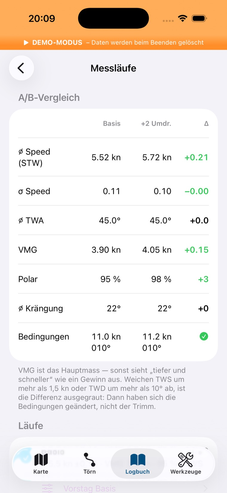
1234
Messläufe im „Trimm-Training Vorstag" mit Pro-Bewertung: A/B-Vergleich „Basis" gegen „+2 Umdr." mit Differenzspalte; der Bedingungs-Check ist grün, weil beide Läufe bei 11,0 bzw. 11,2 kn Wind aus 010° liefen. Darunter beginnt die Liste der Läufe.
Spaltenköpfe — die beiden verglichenen Läufe mit ihren Titeln und rechts die Differenzspalte Δ.
σ Speed — Streuung der Fahrt im Lauf. Niedrig heißt ruhig gesteuert, also ein gültiger Lauf.
VMG — das Hauptmaß der Bewertung; hier bringt der geänderte Trimm +0,15 kn.
Bedingungen — der Bedingungs-Check mit TWS und TWD beider Läufe. Grüner Haken: vergleichbar. Bei zu großer Abweichung wird die Differenzspalte ausgegraut.
Im Demo-Modus
Die Demo enthält das Training „Trimm-Training Vorstag" mit drei Läufen: Basis und +2 Umdrehungen am Vorstag bei gleichem Wind — die beiden sind vergleichbar, der Bedingungs-Check ist grün. Der dritte Lauf ist bei 2,5 kn mehr Wind gefahren; vergleichst du ihn mit einem der ersten beiden, greift das Gate und die Differenz wird ausgegraut. Stell die Demo-Stufe auch einmal auf Plus und sieh nach, wie der Vergleich in dieser Stufe aussieht.
Bitte testen
Fahr ein echtes Training mit mindestens zwei Läufen über 90 s auf derselben Strecke. Triffst du den Lauf-Knopf mit nassem Daumen sicher, und bekommst du einen Fehlstart über den Rückgängig-Balken sauber zurück?
Halte den Trimm einmal während und einmal kurz nach einem Lauf fest. Hängt der Eintrag in der Läufe-Liste am richtigen Lauf?
Pro: Provoziere den Bedingungs-Check mit zwei Läufen bei deutlich verschiedenem Wind. Wird die Differenz ausgegraut, und zeigt die Zeile „Bedingungen" die abweichenden Werte?
Das Trimm-Tagebuch hält pro Boot fest, welche Einstellungen bei welchem Wind, welcher Welle und welcher Segelkombination funktioniert haben — an Deck in zwei Taps als Entwurf, an Land in Ruhe ausgefüllt.
So ist ein Eintrag aufgebaut
Du erreichst das Tagebuch über Werkzeuge → Trimm. Die Liste zeigt die Einträge des aktiven Boots; „+" oben rechts legt einen neuen an. Ein Eintrag besteht aus drei Teilen:
Bedingungen — ein Windbereich von–bis in Knoten und das Wellenbild: glatt, moderat, rau oder schwer.
Segelkombination — welche Segel aus deiner Garderobe standen.
Kursabschnitte — zum Beispiel Am Wind, Raum, Vorwind — und darin die konkreten Trimmwerte. Ein Eintrag hält also fest, wie der Traveller auf der Kreuz stand und wie raumschots.
Dazu kommen Bilder (aus der Galerie oder direkt von der Kamera) und Notizen. Die Liste lässt sich nach Wind, Kurs, Welle und Segel filtern und durchsuchen.
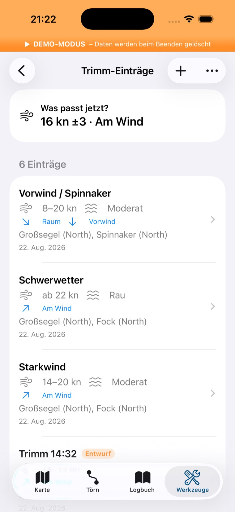
1234
Trimm-Liste: oben der Chip „Was passt jetzt?", darunter die Einträge mit Windbereich, Welle, Kursabschnitten und Segeln, unten ein Entwurf aus „Trimm festhalten".
Was passt jetzt? — Chip mit den aktuellen Bedingungen (hier 16 kn ±3, Am Wind). Ein Tipp filtert die Liste auf passende Einträge.
Plus-Knopf — legt einen neuen Eintrag von Hand an.
Eintrag — Name, darunter Windbereich und Wellenbild, die Kursabschnitte als farbige Chips, dann die Segelkombination.
Entwurf-Badge — orange markiert, was per „Trimm festhalten" an Deck angelegt und noch nicht gesichert wurde.
Trimmfelder anpassen
Welche Trimmwerte ein Eintrag abfragt, legst du selbst fest. Vorstag, Cunningham, Traveller, Baumniederholer und weitere gängige Felder sind vorinstalliert; du kannst sie pro Boot umbenennen, löschen, ergänzen und umsortieren — unter Werkzeuge → Boot → Konfiguration → Trimmfelder. Ein Sportboot mit Backstagen braucht andere Felder als ein Fahrtenboot mit Rollgroß, und beides geht ohne Update der App.
Jedes Feld hat einen Typ, der bestimmt, wie du den Wert eingibst:
Text (Standard) — freie Beschreibung, etwa „Oberste Latte parallel zum Baum".
Zahl mit Einheit — Eingabe über den Zahlenblock, etwa „22 Loos". Zahlen sind über Einträge hinweg vergleichbar und landen als Zahl im CSV-Export.
Skala 1–10 — große −/+-Knöpfe, mit nassen Händen bedienbar.
Auswahl — feste Werte wie „lose / mittel / hart": ein Tipp statt Tippen.
Typ, Einheit und Auswahloptionen stellst du im Detail des jeweiligen Trimmfelds ein. Änderst du den Typ nachträglich, bleiben die bereits eingetragenen Werte erhalten. Die Demo zeigt alle Varianten: Vorstag und Wanten als Zahl, Traveller als Skala, Großschot als Auswahl.
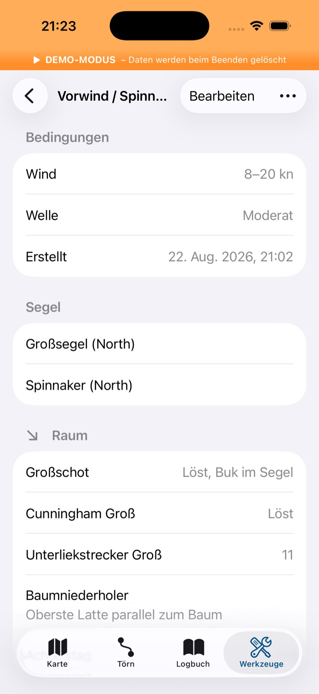
1234
Trimm-Detail eines Eintrags: Bedingungen, Segelkombination und darunter die Trimmwerte je Kursabschnitt.
Bearbeiten — die Detailansicht ist zunächst nur zum Lesen; hier öffnest du den Editor.
Bedingungen — Windbereich, Wellenbild und Erstellungszeit.
Segel — die Segelkombination des Eintrags.
Kursabschnitt — hier „Raum" mit einem Wert je Trimmfeld; jeder Kursabschnitt des Eintrags bekommt einen eigenen Block.
Aus dem Logbuch übernehmen
Ein Logbuch-Eintrag, in dem Segel und Wind stehen, lässt sich direkt als Ausgangspunkt für einen Trimm-Eintrag verwenden — du musst Bedingungen und Segel nicht noch einmal von Hand eintragen. Das ist der Weg für die Nachbereitung an Land — wenn du beim Durchsehen des Törns merkst, dass ein Abschnitt gut lief und du die Einstellung behalten willst.
Trimm festhalten — an Deck
Der Moment, in dem der Trimm stimmt, ist direkt nach dem Manöver — und genau dann hast du keine Hand für acht Formularfelder frei. Deshalb gibt es bei laufendem Törn im Logbuch-Tab den Knopf Trimm festhalten; derselbe Knopf steckt im Kreismenü des Stift-Knopfs unten rechts auf der Karte.
Tipp auf Trimm festhalten. Die App legt sofort einen Entwurf an: Windbereich aus der aktuellen TWS (±2 kn), Kursabschnitt aus dem TWA (Am Wind unter 60°, Halbwind unter 110°, Raum unter 150°, sonst Vorwind), die gesetzten Segel des Törns, dazu Zeit, Position und SOG/COG als Notiz.
Der Entwurf öffnet sich gleich. Mach ein Foto oder trag ein, zwei Werte ein — oder tipp Abbrechen und füll ihn an Land in Ruhe aus.
In der Liste trägt der Entwurf ein oranges Badge Entwurf. Sichern macht daraus einen normalen Eintrag.
Zwei Taps statt acht Formularinteraktionen. War es ein Fehltouch, löscht der Rückgängig-Balken den Entwurf wieder.
„Was passt jetzt?"
Sobald Wind anliegt — vom NMEA-Netz oder im Demo-Modus — steht oben in der Trimm-Liste ein Chip mit den aktuellen Bedingungen: TWS ±3 kn, erkannter Kurs und gesetzte Segel. Ein Tipp darauf filtert die Liste auf die Einträge, die zu diesen Bedingungen passen — keine Zahlen tippen, kein Menü. Das ist die Frage, die du auf der Kreuz stellst, wenn das Boot nicht läuft: Was hatte ich beim letzten Mal bei 16 Knoten am Wind? Die klassischen Filter nach Wind, Kurs, Welle und Segel bleiben daneben bestehen.
HinweisDas Trimm-Tagebuch selbst ist in jeder Stufe frei. Die Winddaten für den Chip und für den automatisch erkannten Windbereich und Kursabschnitt beim Festhalten kommen vom NMEA-Netz — ohne Instrumente probierst du beides im Demo-Modus aus.
Bitte testen
Lege ein eigenes Trimmfeld mit Typ Skala oder Auswahl an und trag damit einen Wert ein: Triffst du die Knöpfe auch mit nassen Händen oder Handschuhen sicher?
Halte während eines Törns (oder in der Demo) per „Trimm festhalten" einen Entwurf fest: Stimmen Windbereich, Kursabschnitt und Segel mit dem, was du gerade siehst — und findest du den Entwurf danach in der Liste wieder?
Tipp auf „Was passt jetzt?": Zeigt der Filter die Einträge, die du erwarten würdest, oder zu viele bzw. zu wenige?
Alles, was zum Schiff gehört — Stammdaten, Segel, Ausrüstung, Polare und die Meilen-/Motorstunden-Statistik: an Land gepflegt, bei jeder Fahrt genutzt.
Stammdaten und mehrere Boote
Das Boot findest du unter Werkzeuge → Schiff & Land → Boot. Dort stehen die Stammdaten: Name, Typ, Foto, Segelnummer, Rufzeichen, MMSI und Heimathafen. Rufzeichen und MMSI setzt die SOS-Sprechfunktafel in die Funksprüche ein — trag sie ein, bevor du sie brauchst.
Du kannst mehrere Boote anlegen. Das aktive Boot bestimmt, welche Törns, Segel und Trimm-Einträge du in der App siehst — wer zwischen eigenem Schiff und Vereinsboot wechselt, wechselt hier.
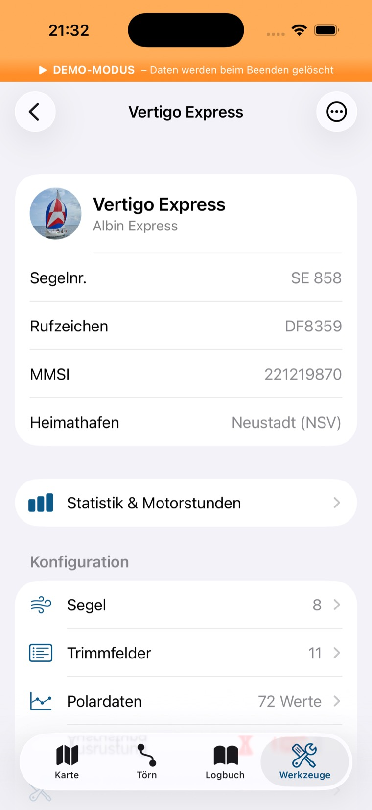
1234
Boot-Übersicht: oben die Stammdaten, darunter der Zugang zur Statistik und der Block „Konfiguration" mit Segel, Trimmfeldern, Polardaten und Ausrüstung.
Rufzeichen und MMSI — werden von der SOS-Sprechfunktafel in die Funksprüche übernommen.
Statistik & Motorstunden — Meilen und Motorstunden des aktiven Boots, mit Gesamt- und Trip-Zähler.
Segel — öffnet die Segel-Seite mit der ganzen Garderobe; die Zahl ist die Anzahl der Segel.
Polardaten — Vorlage laden, ORC-Zertifikat einlesen, eigene Datei importieren oder Werte von Hand eintragen.
Segel: Garderobe mit Bildern und Einsatzbereich
Die Segel haben eine eigene Seite unter „Konfiguration", gruppiert nach Großsegel, Vorsegel und Downwind; „+" oben rechts legt ein neues Segel an. Je Segel trägst du Name, Kategorie, Hersteller, Jahr und Notizen ein. Die Kategorie steuert, wann ein Segel in Formularen auftaucht.
Zu jedem Segel gehören Bilder: der Schnitt am Wind, das Etikett mit den Maßen, die Schadstelle vor der Reparatur — das Material fürs Gespräch beim Segelmacher. Das erste Bild steht als Vorschau in der Liste, weitere mit Zähler daneben.
Dazu kommt der Einsatzbereich: Windbereich, Windwinkel (bei Downwind-Segeln) und die Quelle laut Crossover-Chart des Segelmachers. Das sind vier Zahlen je Segel, für die ganze Garderobe in zwei Minuten abgetippt; das Chart-PDF kannst du als Bild am Segel ablegen. Mit Plus nutzt die App diese Werte beim Segelwechsel im Logbuch: Die zum aktuellen Wind passenden Segel stehen zuoberst und tragen ein Häkchen — der Wind kommt vom NMEA-Netz oder aus dem Handwind, den du im Vorstart eingegeben hast.
Ein Tap auf ein Segel öffnet zuerst die Detailansicht: Crossover-Chart groß (Tap für Vollbild), Einsatzbereich als Werte, „Bearbeiten" in der Toolbar — dieselbe Navigation wie bei Ausrüstung und Trimm.
WichtigLöschen geht nur mit Rückfrage, auch aus Detailansicht und Formular. Ein gelöschtes Segel verschwindet aus allen Logbuch- und Trimm-Einträgen, in denen es eingetragen war.
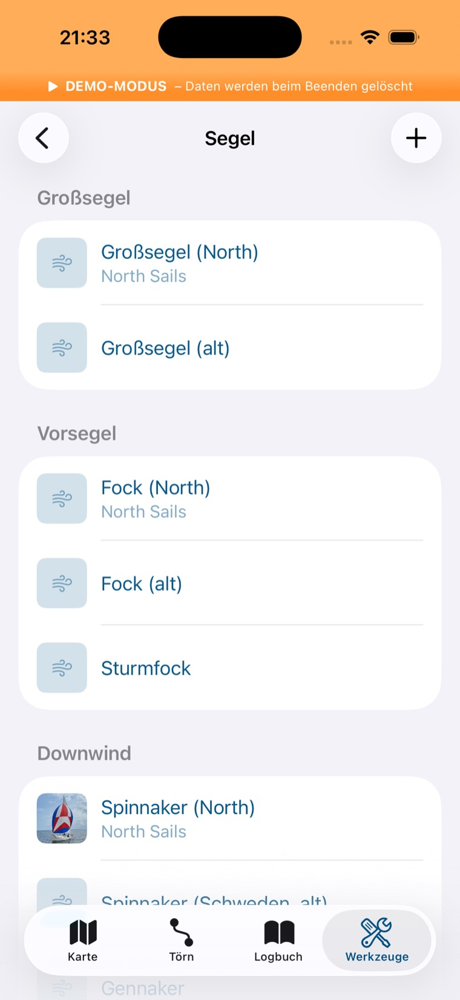
123
Segel-Seite: die Garderobe nach Großsegel, Vorsegel und Downwind gruppiert, mit Bild-Vorschau beim Spinnaker.
„+" — neues Segel anlegen.
Gruppe — die Kategorie des Segels legt fest, in welcher Gruppe es steht und in welchen Formularen es angeboten wird.
Segel mit Bild-Vorschau — das erste Bild erscheint in der Liste; ein Tap öffnet die Detailansicht mit Crossover-Chart und Einsatzbereich.
Ausrüstung mit Wartungs-Erinnerung
Die Ausrüstung ist eine Inventarliste mit Bildern und Notizen (Wartung, Seriennummern). Je Teil kannst du eine Wartungs-Erinnerung setzen: ein Intervall in Monaten und/oder Motorstunden, gerechnet ab „Letzte Wartung". Die Motorstunden kommen aus den Törns des Boots, du zählst also nichts von Hand.
Fällig: rot, mit Angabe wie „fällig seit 3 Wo." oder „12 h überfällig".
Bald fällig: orange.
In der Boot-Übersicht steht ein Zähler wie „2 fällig".
Bewusst gibt es dafür keine Mitteilung. Im Demo-Modus siehst du den Außenborder (12 Monate / 50 h, überfällig), die Rettungsinsel (36 Monate, bald fällig) und die Rettungswesten.
Polardaten: Vorlage, ORC-Zertifikat oder eigene Datei
Die Polare ist die Basis für die Leistungs-Prozente in den Instrumenten und in der Regatta-Auswertung. Das Raster der App hat 9 Windstärken × 8 Winkel, dazu die Beat- und Run-Optima. Alle Wege, es zu füllen, sind gratis:
Vorlage laden. Eingebaut sind Albin Express, Nordisches Folkeboot, H-Boot, J/80, X-99, Dehler 34, Hallberg-Rassy 34, Bavaria 37 und First 36.7 — Tabelle plus Beat/Run-Optima, ein Tap statt 108 Zahlen. Beim Anlegen des Boots schlägt das Onboarding die Vorlage anhand des Bootstyps schon vor. Die Werte sind Richtwerte aus ORC-/VPP-Größenordnungen, keine offiziellen Klassenpolaren, und nach dem Übernehmen Zelle für Zelle änderbar.
ORC-Zertifikat als PDF einlesen. Der schnellste Weg zur richtigen Polare: Die Tabelle „Rated boat velocities in knots" steht als Text im PDF und trifft genau das Raster der App, dazu die Beat- und Gybe-Winkel — nichts wird geschätzt oder per Bilderkennung geraten. Mit übernommen werden Klasse, Werft, Baujahr, Länge, Breite, Tiefgang, Verdrängung und die vermessenen Segel (Groß, Fock, Spi mit Fläche). Name und Segelnummer bewusst nicht — oft nimmt man das Zertifikat eines Klassenkameraden, weil die Polare für die Klasse gilt; auf wen es ausgestellt ist, steht nur zur Kontrolle daneben. Zwei Wege: beim Anlegen des Boots auf der ersten Seite des Onboardings oder über Boot → Polardaten → Datei importieren.
Eigene Polardatei. CSV, .pol oder .txt vom Segelmacher, aus dem ORC-Zertifikat oder aus der eigenen Messfahrt — wird automatisch auf das Raster der App umgerechnet. Der Import zeigt vorher, wie die Datei aussehen muss (Beispiel, akzeptierte Trennzeichen und Dezimaltrenner), stellt eine Beispieldatei zum Sichern bereit und sagt bei einem Fehlschlag, was gefehlt hat.
Von Hand. Das ORC-Raster direkt eintragen — geht immer, ist aber der lange Weg.
Kalibrierung Pro
Zwei Felder im Boot-Formular decken rund 80 % des realen Wahrwind-Fehlers ab. Masttop-Offset in Grad: Steht die Windfahne verdreht, stimmt jeder Winkel um denselben Betrag nicht — aufschießen, AWA ablesen, Differenz zu 0° eintragen. Loggen-Faktor in Prozent: Logge gegen GPS bei ruhigem Wasser vergleichen; liest sie zu wenig, trägst du über 100 ein (Bewuchs macht es schlimmer). Beides wirkt an der Quelle, also identisch auf Anzeige, Wahrwind-Rechnung, Polar-Ziele und Aufzeichnung; kalibrierte Windwerte tragen „kal." in der Kachel. Die Werte hängen am Boot, denn der Fehler sitzt am Geber, nicht in der App.
Statistik: Meilen & Motorstunden
Unter Boot → Statistik & Motorstunden sammelt die App die Auswertungen zum aktiven Boot: Meilen gesamt, gesegelte Meilen, Motor-Meilen und Motorstunden. Grundlage sind die Trackpunkte und die „Motor an"/„Motor aus"-Einträge der Törns; ausgewertet werden die Zeitstempel, es zählt also auch, was du nachträglich eingetragen oder korrigiert hast. Die Strecke innerhalb der Motorphasen zählt als Motor, alles andere als gesegelt; Motor + Segel = Gesamt. Pro Törn zeigt die Statistik Motorzeit, Strecke unter Motor und die Ø-Geschwindigkeit; im Törn-Detail steht die Motorzeit zusätzlich in der Zusammenfassung.
Gesamtzähler: läuft wie ein Betriebsstundenzähler endlos über alle Törns. Zurücksetzen nur mit Bestätigungsabfrage — die Einträge in den Törns bleiben unverändert, nur der Zähler beginnt neu.
Trip-Zähler: dieselben Werte, aber mit einem Tap zurücksetzbar — wie der Tageskilometerzähler im Auto, etwa pro Saison oder bis zum nächsten Ölwechsel. Jeder Reset setzt alle Werte des jeweiligen Zählers gemeinsam zurück.
Boot-Filter: Bei mehreren Booten stellst du die Statistik auf ein Boot, mehrere oder alle; jedes Boot zählt ab seinem eigenen Zähler-Reset. Törns auf fremden Booten (Gastboot) zählen nie in die Bootszähler, lassen sich aber per Schalter in die Summe aufnehmen — für die persönlichen Saisonmeilen über alles.
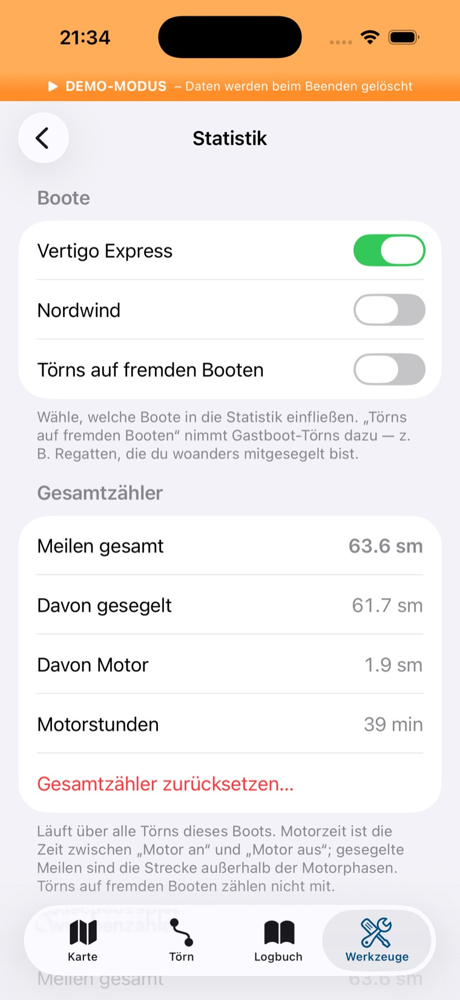
1234
Statistik: Boot-Filter oben, darunter der Gesamtzähler mit Meilen gesamt, gesegelt, Motor und den Motorstunden; der Trip-Zähler folgt weiter unten.
Boot-Filter — welche Boote in die Statistik einfließen; jedes zählt ab seinem eigenen Reset.
Törns auf fremden Booten — nimmt Gastboot-Törns in die Summe auf, nie in die Bootszähler.
Gesamtzähler — Meilen gesamt, davon gesegelt, davon Motor, Motorstunden.
Gesamtzähler zurücksetzen — nur mit Bestätigung; die Törn-Einträge bleiben erhalten.
Bitte testenLade die Vorlage für deinen Bootstyp oder lies dein ORC-Zertifikat als PDF ein: Landen die Werte im richtigen Raster, und stimmen die übernommenen Segel? Leg ein Segel mit Foto und Einsatzbereich an — findest du das Bild später in der Liste und in der Detailansicht wieder? Und nach einem Törn mit „Motor an"/„Motor aus": Passen Motorstunden und Motor-Meilen in der Statistik zu dem, was du wirklich gefahren bist?
Das Instrumenten-Dashboard zeigt Fahrt, Kurs, Wind und Tiefe groß am Steuerstand — aus dem iPhone-GPS in jeder Stufe, aus dem Bordnetz per NMEA-Gateway in Pro.
Das Dashboard je Stufe
Werkzeuge → Instrumente öffnet ein Vollbild-Display für die Halterung am Steuerstand: schwarzer Hintergrund, große Monospace-Ziffern, ablesbar bei Sonne und mit einem Blick. Was darauf steht, hängt von der Stufe ab:
Free zeigt SOG und COG aus dem iPhone-GPS (Fahrt und Kurs über Grund) und die Bildschirmsperre. Der Einstieg in Plus steht sichtbar unten im Dashboard; die Demo-Stufe Free zeigt genau diesen Stand.
Eigene SeitenPlus mit GPS-Werten: SOG, COG, Position, Peilung, Distanz und XTE zum Go-To-Ziel, Countdown, Anker-Distanz, Smart Fields. Beim ersten Öffnen legt die App zwei Seiten an: „Plotter" (SOG, COG, Position, Tageszeit) und „Navigation" (BRG, DTW, XTE, VMC, ETA, TTG). NMEA-Felder stehen in den Feld-Pickern als eigene Gruppe „NMEA-Felder (Pro)" und auf der Kachel mit Schloss „Pro".
Das volle NMEA-DashboardPro: Segelkompass, Wind-, Tiefen- und Log-Kacheln, Regatta-Seite, RAW-Aufzeichnung — braucht ein NMEA-WLAN-Gateway (2000 oder 0183) an Bord.
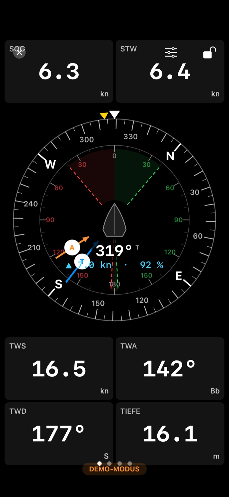
1234
Pro-Dashboard: SOG und STW oben, Segelkompass mit Windpfeilen und Bug-Sektoren, darunter TWS, TWA, TWD und Tiefe.
SOG-Kachel — Fahrt über Grund; daneben STW, die Fahrt durchs Wasser von der Logge.
Segelkompass — Kompassrose mit Kurs, wahrem (T) und scheinbarem (A) Windpfeil und grün/roten Bug-Sektoren.
NMEA-Kacheln — TWS, TWA, TWD und Tiefe kommen nur vom Bordnetz; ohne Verbindung stehen sie auf „--".
Bildschirmsperre — das Schloss sperrt das Display gegen Fehltouches.
Kacheln, Seiten und Smart Fields
Instrument-Kacheln zeigen SOG, STW, TWS, TWA, TWD, Tiefe und vieles mehr; zwischen mehreren Seiten wechselst du per Wischen oder mit einem Tipp auf den linken oder rechten Bildrand.
Go-To-KachelnPlus: BRG, DTW und XTE zum Ziel, VMC (Fahrt gutgemacht zum Ziel — nicht VMG, das wäre zum Wind), ETA als Uhrzeit, TTG als Restzeit, dazu Regatta-Countdown (mm:ss → GO) und Distanz zum Anker.
Seiten-ManagerPlus (Instrumente → Seiten verwalten): eigene Seiten mit Raster, Kachelgrößen und frei wählbaren Werten.
Smart FieldsPlus (Instrumente → Seiten verwalten → Smart Fields): regelbasierte Kacheln, die je nach Situation den passenden Wert zeigen — läuft ein Countdown, den Countdown, sonst SOG; mit Pro auf der Kreuz VMG, auf Raumkursen SOG.
SegelkompassPro: Kompassrose mit Kurs, wahrem und scheinbarem Windpfeil und grün/roten Bug-Sektoren — das von B&G bekannte Pattern.
Regatta-SeitePro, beim ersten Öffnen angelegt: VMG Δ (gefahrene VMG gegen das Polar-Ziel, mit Vorzeichen), Wende ∠ (mittlerer Wendewinkel der letzten Schläge aus dem Track), Layline (Abstand zur Layline der nächsten Bahnmarke, ersatzweise des Go-To-Ziels) und TWD Trend (Windrichtung gegen das 10-Minuten-Mittel, Pfeil nach rechts = Rechtsdreher; erst ab fünf Minuten Datenlage), dazu Countdown und Leistung. Alle vier Felder stehen auch im Seiten-Manager.
Luftdruck, Druck-Trend, Log und TripPro: „Druck-Trend" zeigt die Änderung in hPa je Stunde mit Vorzeichen, erst nach einer Stunde Datenlage — mehr als 1 hPa Fall je Stunde heißt Wind, mehr als 2 deutlich mehr. Log und Trip messen die Strecke durchs Wasser, nicht über Grund; die Differenz zur GPS-Strecke über dieselbe Zeit ist der Versatz durch Strom.
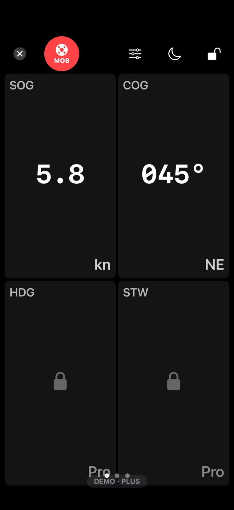
123
Dashboard in der Demo-Stufe Plus: GPS-Werte laufen, NMEA-Kacheln tragen das Pro-Schloss.
SOG und COG — aus dem iPhone-GPS, laufen in jeder Stufe auch ohne Bordnetz.
HDG und STW mit Schloss „Pro" — Kompass und Logge gibt es nur aus dem NMEA-Netz; die Kachel bleibt stehen und sagt, was fehlt.
Bildschirmsperre — 3 s Halten zum Entsperren, mit Haptik.
Datenband auf der Karte
Der runde Instrumente-Knopf in der linken Knopfspalte der Karte legt die Werte zur Karte statt darüber: im Hochformat als Datenband unten — eine Reihe mit drei Kacheln über der Tab-Leiste, wie die Instrument-Bar eines Plotters; Blättern per Knopf links, Vollbild und Schließen rechts, je Seite die ersten drei Felder —, im Querformat und auf dem iPad als Spalte rechts. Karte, Werte und Tab-Leiste bleiben gleichzeitig sichtbar; erneutes Tippen blendet aus. Der Vollbild-Knopf in Band und Spalte öffnet das Dashboard als „Nur Zahlen"-Modus dahinter; die Werkzeuge-Kachel „Instrumente" führt direkt dorthin.
Bildschirmsperre
Das Schloss oben rechts im Dashboard sperrt das Display gegen Fehltouches durch Spritzwasser. Gesperrt heißt gesperrt: Auch Wischen wechselt keine Seite, und ein dauerhafter Sperr-Hinweis zeigt den Zustand. Entsperrt wird durch 3 s Halten auf einer 88 pt großen Fläche, mit Haptik als Rückmeldung.
NMEA-Verbindung Pro
Die App liest zwei Formate über das Boots-WLAN: NMEA 2000 als YDWG-RAW und NMEA-0183-Sätze von jedem WLAN-Gateway oder Multiplexer (RMC, GGA, GLL, VTG, HDG, HDT, HDM, MWV, VWR, MWD, DPT, DBT, VHW, MTW, XDR; Prüfsumme wird geprüft) — per TCP (Host:Port) oder per UDP, bei dem die App auf dem Port lauscht (typisch 10110). Gateways, die auf dem Port broadcasten, werden gehört; am Gateway muss nichts auf die IP des iPhones eingestellt werden. UDP wiederholt aber keine verlorenen Datagramme, und ob das Gateway noch sendet, merkt die App erst nach 20 s Stille; wo TCP möglich ist, ist TCP die ruhigere Wahl. Das Format wird pro Zeile erkannt, die Einstellungen zeigen „Datenformat: NMEA 2000 (RAW)" oder „NMEA 0183". Liefert das Gateway nur scheinbaren Wind (AWA/AWS), rechnet die App den wahren Wind aus Scheinbarwind und STW bzw. SOG.
So verbindest du deine Bordelektronik:
iPhone ins WLAN des Gateways bringen (das Boots-WLAN).
Werkzeuge → Einstellungen → NMEA-Verbindung öffnen. Verbinden und Konfiguration stehen oben; Diagnose-Log, PGN-Zähler, Dämpfung und Datenaufzeichnung liegen auf der Unterseite „Erweitert", der Demo-Schalter ganz am Ende.
Host und Port des Gateways eintragen — bei UDP den Port, auf dem das Gateway sendet.
Verbinden. Die Seite zeigt das erkannte Datenformat; in der Live-Daten-Liste und unter „Erkannte Sensoren" siehst du, was ankommt.
Danach musst du an Bord nicht mehr in die Einstellungen: Automatisch verbinden (Standard an) versucht die Verbindung beim App-Start und bei jeder Rückkehr in den Vordergrund; ein „Trennen" von Hand hält die Automatik bis zum nächsten App-Start still. Den Zustand zeigt der NMEA-Status-Chip oben im Logbuch — grün verbunden, orange verbindet, rot Fehler oder Datenstau, grau aus; ein Tipp darauf öffnet die NMEA-Einstellungen.
Der Watchdog fängt stehende Verbindungen: Ist TCP verbunden, kommen aber keine Daten mehr (typisch, wenn das iPhone still aus dem Boots-WLAN fällt), verbindet die App nach 20 Sekunden automatisch neu. Nach einer Minute ohne Daten kommt einmalig „NMEA-Daten reißen ab" auf den Sperrbildschirm, und das Dashboard zeigt rot „NMEA hängt — keine Daten" — eingefrorene Werte sehen nie wie live aus. Einen verpassten Tracking-Start holt die App nach, sobald sie in den Vordergrund kommt.
Liefert das Netz gerade nichts (Gateway getrennt, Fehler, eingefrorene Daten), zeigt das Dashboard als Fallback die eigenen Seiten mit GPS-Werten wie in Plus; NMEA-Kacheln stehen auf „--", ein großer „NMEA verbinden"-Knopf und der Verbindungsstatus stehen unten. Sobald wieder Daten kommen, füllen sich die Kacheln von selbst. Die NMEA-Datenaufzeichnung unter „Erweitert" schreibt die Rohdaten mit (RAW-Logging mit Archiv).
HinweisOhne eigenes Gateway zeigt der Demo-Modus das komplette Pro-Dashboard mit physikalisch konsistent simulierten Daten — Segelkompass, Wind, Tiefe und Regatta-Seite inklusive.
Handy-GPS als Rückfall, Kalibrierung am Boot
Das iPhone-GPS ist die Rückfallebene für alles — auch mit Pro. Liefert der NMEA-Bus keine Position, keinen COG oder SOG (nicht verbunden, kein GPS-Gerät im Netz, länger als 5 s still), speist die App das Handy-GPS in denselben Datenstore: Karte, Go-To, MOB, Regatta-Startlinie, Instrumente und Logbuch haben damit immer eine Position; kommt der Bus zurück, hat er sofort wieder Vorrang. Das Dashboard benennt den Fall ehrlich („NMEA · Position: iPhone-GPS"). Das gilt im Vordergrund; im Hintergrund liefert das Auto-Tracking. Wind, Logge, Tiefe und Kompass haben keinen Ersatz. Und: Handy-GPS zählt nicht als „NMEA an" — eine Autofahrt startet weiterhin keinen Törn.
KalibrierungPro: Zwei Felder im Boot-Formular decken rund 80 % des realen Wahrwind-Fehlers ab. Masttop-Offset in Grad: Steht die Windfahne verdreht, stimmt jeder Winkel um denselben Betrag nicht — aufschießen, AWA ablesen, Differenz zu 0° eintragen. Loggen-Faktor in Prozent: Logge gegen GPS bei ruhigem Wasser vergleichen; liest sie zu wenig, über 100 (Bewuchs macht es schlimmer). Beides wirkt an der Quelle, also identisch auf Anzeige, Wahrwind-Rechnung, Polar-Ziele und Aufzeichnung; kalibrierte Windwerte tragen „kal." in der Kachel. Die Werte hängen am Boot, denn der Fehler sitzt am Geber, nicht in der App.
Bitte testenIst das Dashboard in deiner Halterung bei Sonne und Krängung auf einen Blick lesbar — welche Kachel ist zu klein oder zu voll? Mit Bordnetz: Hält die Verbindung über einen Segeltag, meldet der Status-Chip einen Abriss, bevor du ihn selbst merkst, und sprang das iPhone-GPS ein, als der Bus still war? Bildschirmsperre: Hat Spritzwasser oder ein Ärmel trotz Sperre eine Seite gewechselt, und ließ sich die Sperre mit nasser Hand in 3 s lösen?
Deine persönliche Sammlung von Häfen, Ankerbuchten und Slipstellen — mit Ankunftsradius, Praxisinfos und POIs, verzahnt mit Karte, Logbuch und Etappenplan.
Zielorte: Position, Radius, Praxisfelder
Das Hafenhandbuch findest du unter Werkzeuge → Hafenhandbuch. Jeder Zielort hat eine Position, eine Kategorie (Hafen, Marina, Ankerplatz …), einen Ankunftsradius, Notizen und praktische Felder wie Toilettencode, Liegegebühr und WLAN-Zugang. Den Ankunftsradius stellst du per Slider zwischen 50 und 5000 m ein; die Kartenvorschau im Formular zeigt den Kreis live beim Schieben. Der Radius ist keine Deko: Er steuert die automatische Ankunftserkennung im Logbuch — auch dann, wenn du gar kein Ziel gesetzt hast.
Die Liste sortierst du nach Name, Entfernung oder „Zuletzt angelegt". Das Karten-Symbol oben springt auf die Hauptkarte: Die Zielort-Ebene wird eingeschaltet, die Kamera fasst alle Zielorte ein. Dort gilt wie überall auf den Karten: Tipp auf einen Hafen öffnet die Datenkarte, langes Drücken legt an. Der Tipp auf einen Hafen zoomt in einer weichen Flug-Animation so heran, dass der Ankunftskreis etwa zwei Drittel der Bildschirmbreite einnimmt — leicht nach oben versetzt, damit die Info-Karte am unteren Rand nichts vom Hafen verdeckt.
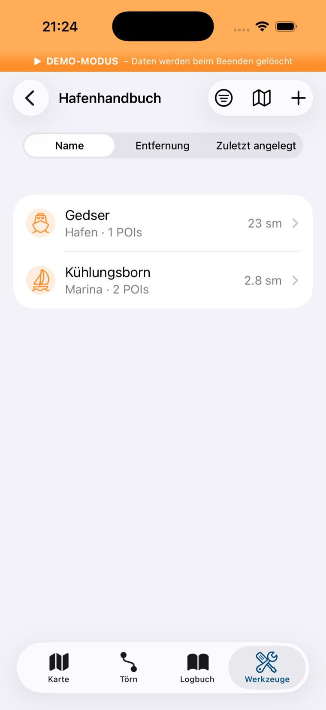
123
Hafenhandbuch: Zielorte mit Kategorie, POI-Zahl und Entfernung vom Boot.
Sortierung — nach Name, Entfernung oder „Zuletzt angelegt".
Karten-Symbol — springt auf die Hauptkarte, Zielort-Ebene an, Kamera auf alle Zielorte.
Zielort — Kategorie und Anzahl der POIs, rechts die Entfernung; Tipp öffnet die Detailansicht.
Häfen aus OpenStreetMap übernehmen
Marinas, Häfen und Ankerplätze aus OpenStreetMap kommen mit demselben Abruf wie die Seezeichen: pro Offline-Paket, lokal gespeichert, offline verfügbar. Berufsschifffahrt (RoRo, Fähre, Tanker) ist herausgefiltert. Im Leuchtturm-Menü der Karte haben sie eine eigene Ebene „OSM-Häfen". Auf der Karte erscheinen sie als indigo Anker — Ankerplätze als offener, gestrichelter Kreis — schon in der Revierübersicht. Antippen zeigt Name, Typ, Liegeplätze, VHF-Kanal und Einrichtungen (Tanken, Wasser, Strom, WC/Duschen, Slip, Kran, Fäkalienabsaugung …).
Ins Hafenhandbuch öffnet das Zielort-Formular vorbelegt: Name, Position, Kategorie (Hafen/Marina/Ankerplatz), dazu Telefon, Website und Infos als Notizen mit Quellenangabe. Erst Sichern legt den Datensatz an. Einen Massen-Import gibt es bewusst nicht — das Hafenhandbuch bleibt deine Auswahl. Häfen, die du schon übernommen hast (näher als 250 m an einem Zielort), zeigt die Karte nicht doppelt.
HinweisCommunity-Daten (ODbL): Die Position ist meist der Mittelpunkt der Hafenfläche. Für Ankunftsradius und Peilung reicht das völlig, ein Ersatz für den Hafenlotsen ist es nicht. Der Demo-Modus bringt die Häfen der Mecklenburger Bucht mit.
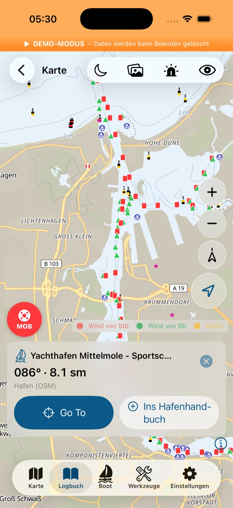
1234
OSM-Hafen vor Warnemünde angetippt: Datenkarte mit Peilung und Distanz, darunter die beiden Aktionen.
Indigo Anker — ein Hafen aus OpenStreetMap; Ankerplätze zeigen einen offenen, gestrichelten Kreis.
Datenkarte — Name, Peilung und Distanz, Typ mit Quelle (OSM).
Go To — setzt den Hafen als Go-To-Ziel.
Ins Hafenhandbuch — öffnet das vorbelegte Zielort-Formular; erst „Sichern" legt den Zielort an.
Anlegen von der Karte, POIs pro Zielort
Auf der Hauptkarte und auf jeder Törn-Karte legst du mit langem Drücken einen neuen Zielort an. Nach dem Sichern öffnet direkt seine Detailansicht — POIs, Notizen und Liegeplatz-Infos pflegst du sofort, ohne den Ort erst zu suchen. Auf den Törn-Karten erscheinen alle Zielorte zusätzlich als orange Punkte; dort lassen sich Häfen antippen (Radius, POIs, Info-Card) und per langem Drücken Zielorte, Ankerplätze und POIs anlegen — bei offenem Törn auch Etappenziele.
POIs sind die Orte rund um den Hafen: Hafenmeister, Tankstelle, Supermarkt und so weiter — jeweils mit Fotos und Position auf der Detail-Karte des Zielorts.
Zielwahl: Seekarten-Häfen und automatische Zielorte
Zielorte erscheinen in der Zielsuche beim Ablegen und im Etappenplan. Die Zielort-Auswahl (Endstation, Tagesziel, Etappen) zeigt neben deinem Hafenhandbuch und der Ortssuche auch die Häfen, Marinas und Ankerplätze aus den Seekarten-Daten — offline, nach Entfernung sortiert, direkt auf der Karte antippbar. Ein so gewählter Hafen landet mit Kategorie, VHF-/Liegeplatz-Notiz und passendem Ankunftsradius im Handbuch: Ankerplatz 150 m statt 90 m. Namenlose Ankerplätze heißen schlicht „Ankerplatz"; als Ankerverbot markierte Flächen werden gar nicht erst angeboten.
Das Handbuch füllt sich von selbst: Wählst du irgendwo ein Ziel (Ablegen, Törn, Etappenplan) und dort existiert noch kein Zielort, legt die App automatisch einen an. Überschneidet sich der Bereich mit einem bestehenden Zielort, wird der bestehende verwendet; gleichnamige Orte an anderer Stelle werden nummeriert („Svendborg 2").
Aktueller Hafen im Logbuch
Liegt das Boot im Bereich eines Zielorts und ist nicht unterwegs — kein aktives Tracking, unter 1,5 kn —, zeigt das Logbuch oben die Karte „Aktueller Hafen" mit WC-Code, Liegegebühr, WLAN und POI-Anzahl. Ein Tap öffnet das Hafenhandbuch-Detail. Als Position nimmt die App das Tracking, sonst NMEA- bzw. Demo-GPS, sonst den letzten Trackpunkt (bis 48 h alt).
Apple-POIs und Teilen per Datei
Auf der Vollbild-Karte eines Zielorts blendet der Pin-Button oben rechts Apples Points of Interest ein: Restaurants, Läden, Tankstellen, Apotheken und mehr rund um den Hafen. Das braucht Internet — deshalb ein Hafen-Feature, nichts für unterwegs. Ein Tap auf einen Apple-POI zeigt eine Übernahme-Card; Ins Hafenhandbuch übernehmen macht ihn zum eigenen POI des Zielorts, die Kategorie wird automatisch zugeordnet — danach ist er auch offline dabei.
Zielorte lassen sich als Datei weitergeben: Zielort-Detail → ⋯ → Teilen (Etmar-Freigabe) erzeugt eine Etmar-Freigabe-Datei (.brokkolishare) mit Position, Radius, Kategorie, Notizen und Hafeninfos, POIs und Bild-Thumbnails — per AirDrop, Mail oder Messenger. Dasselbe gibt es für Regatta-Bahnen (Werkzeuge → Bahnen & Wegpunkte, Wisch nach rechts oder langer Druck) und Routen (Werkzeuge → Routen). Auf der Empfängerseite: Datei antippen → Vorschau mit Karte, Details und Doubletten-Hinweis („In der Nähe gibt es schon …"; bei gleichem Namen entsteht eine Kopie mit Zusatz) → Übernehmen, ein Tap. Dateien einer neueren Version werden sauber abgewiesen. Kein Server, kein Account — die Datei ist der Weg.
Bitte testen
Übernimm einen OSM-Hafen aus deinem Revier ins Handbuch: Stimmen Position, Kategorie und die übernommenen Infos, und verschwindet der indigo Anker danach von der Karte?
Liegt dein Boot im Hafen: Erscheint im Logbuch die Karte „Aktueller Hafen" mit den richtigen Praxisfeldern — auch ohne laufendes Tracking?
Teile einen Zielort per AirDrop an ein zweites Gerät: Kommt die Vorschau mit Karte, und sind POIs und Bilder nach „Übernehmen" vollständig da?
Drei Werkzeuge für den Ernstfall — Mann über Bord, Ankerwache und Sprechfunk-Notruf — alle gratis, alle ohne Netz, alle auf dem eigenen Gerät.
Sicherheit ist in Etmar immer frei: Keine der drei Funktionen fragt nach einer Stufe. Alle drei arbeiten mit dem iPhone-GPS, die SOS-Tafel zusätzlich mit Bootsname, Rufzeichen und MMSI aus den Bootsdaten — ein Mobilfunknetz braucht keine davon. MOB und Ankeralarm überleben außerdem einen App-Neustart — was du ausgelöst hast, bleibt aktiv, bis du es selbst beendest.
WichtigKeine der drei Funktionen alarmiert jemanden außerhalb deines Geräts: kein DSC, kein Funkspruch, keine Meldung an Dritte. Du kannst MOB, Ankeralarm und die SOS-Tafel deshalb gefahrlos am Steg durchspielen. Für den Ton des Ankeralarms muss das iPhone hörbar sein — Stummschalter aus, Lautstärke hoch. Nutzt du nachts den Schlaf-Fokus, erlaube Etmar dort Mitteilungen, sonst bleibt der Alarm in der Koje stumm.
MOB — Mann über Bord
Der rote MOB-Knopf sitzt an drei Stellen: auf der Karte unten links, in der Aktionsleiste im Logbuch und im Instrumenten-Dashboard unter Werkzeuge → Instrumente. Du löst ihn nicht mit einem Tipp aus, sondern hältst ihn 0,6 Sekunden gedrückt — ein Ring füllt sich dabei. Das Halten schützt vor Fehlalarmen, wenn das Boot in die Welle schlägt oder das Handy in der Hosentasche steckt.
Sobald der Ring voll ist, passiert alles auf einmal:
Position und Zeit werden fixiert.
Bei offenem Törn schreibt Etmar einen Eintrag „Mann über Bord" mit Position, Kurs und Fahrt ins Logbuch.
Ein rotes Banner zeigt Peilung und Distanz zur MOB-Position sowie die Zeit seit dem Alarm, sekündlich zählend.
Auf der Karte erscheint ein Rettungsring an der Position und eine rote Linie vom Boot dorthin.
Der Alarm endet nur über Beenden — Person geborgen oder Fehlalarm, jeweils mit Rückfrage. Das Ende wird im Logbuch vermerkt. Ein App-Neustart beendet den Alarm nicht.
Ankeralarm
Den Anker setzt du über die Kachel Logbuch → Anker — sie ist mit und ohne offenen Törn da — oder über den Anker-Knopf in der linken Knopfspalte der Karte. Ein Tipp setzt den Anker auf die aktuelle Position mit 50 m Radius; bei einem Fehltouch erscheint ein Rückgängig-Balken. Im Logbuch steht dann ein Banner wie „Anker liegt · 23 m / 50 m · seit 21:04", auf der Karte siehst du den Kreis und den Anker-Pin.
Verlässt das Boot den Kreis, wird der Banner rot, das iPhone vibriert und gibt Ton, und die Mitteilung „ANKER SLIPPT: 62 m vom Anker" kommt auch auf das gesperrte Handy in der Koje — als zeitkritische Mitteilung, und alle 60 Sekunden erneut, solange das Boot draußen bleibt. Damit am Rand des Kreises kein Fehlalarm entsteht, rechnet Etmar eine Toleranz für die GPS-Streuung ein: die halbe angezeigte Genauigkeit. Für die Wache läuft ein eigener GPS-Wächter im Hintergrund weiter (blaue Statusanzeige von iOS), unabhängig vom Törn-Tracking.
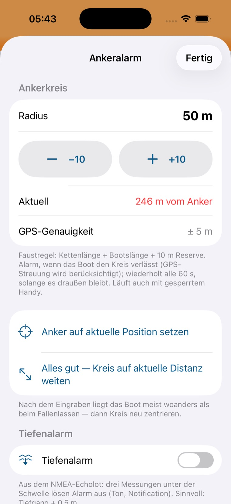
12345
Einstell-Sheet des Ankeralarms im Alarmfall: Radius 50 m, das Boot liegt 246 m vom Anker.
Radius — in 10-m-Schritten mit großen Knöpfen, wirkt sofort.
Aktuelle Distanz und GPS-Genauigkeit — rot, sobald das Boot außerhalb liegt.
Anker auf aktuelle Position setzen — Kreis neu zentrieren, nachdem sich der Anker eingegraben hat.
Alles gut — Kreis auf aktuelle Distanz weiten — Alarm quittieren, wenn das Boot nur schwojt.
TiefenalarmPro — nur mit NMEA-Echolot.
Das Einstell-Sheet öffnest du über den Anker-Knopf oder das Symbol im Banner. Der Radius lässt sich mit großen Knöpfen in 10-m-Schritten ändern — Faustregel: Kettenlänge + Bootslänge + 10 m Reserve. Jede Änderung wirkt sofort; Fertig schließt nur das Sheet. Wichtig nach dem Ankern: Erst wenn sich der Anker eingegraben hat, liegt das Boot dort, wo es bleibt — dann einmal Anker auf aktuelle Position setzen, sonst zentriert der Kreis auf den Punkt des Fallenlassens. Anker auf beendet die Wache; der Zustand überlebt einen App-Neustart.
TiefenalarmPro: Im selben Sheet liegt der Tiefenalarm für das NMEA-Echolot. Die Schwelle ist Tiefgang + 0,5 m; erst drei Messungen darunter lösen Ton und Mitteilung aus, damit eine einzelne Fehlmessung dich nicht weckt.
SOS — Sprechfunktafel
Die SOS-Seite ist die rote Kachel oben in Werkzeuge → SOS. Sie sendet nichts — sie führt dich Wort für Wort durch den Sprechfunk-Notruf, damit du im Stress nichts vergisst. Oben liegt eine scrollbare Chip-Reihe mit Direktzugang zu allen acht Karten: MAYDAY, PAN PAN und SECURITE zuerst und farbig, dahinter MAYDAY-Bestätigung, RELAY, SILENCE, SILENCE FINI und DSC-Fehlalarm. Darunter stehen die aktuelle GPS-Position — laufend aktualisiert und kopierbar — und der vorformulierte Funkspruch, in den Bootsname, Rufzeichen und MMSI automatisch aus den Bootsdaten eingesetzt sind.
12345
SOS-Seite mit der MAYDAY-Karte (1 von 8): Situation wählen, Funkspruch ablesen.
Chip-Reihe — Direktzugang zu allen acht Karten, MAYDAY / PAN PAN / SECURITE zuerst.
Position — laufend aktualisiert, mit dem Symbol rechts kopierbar.
Situation — Notfall-Art und Personen an Bord fließen in den Funkspruch.
Funkspruch — Wort für Wort ablesen; Bootsname, Rufzeichen und MMSI sind eingesetzt.
Teilen — PDF-Export der ganzen Tafel zum Laminieren.
Situation: Notfall-Art (Wassereinbruch, Feuer, Person über Bord …) und Personen an Bord wählst du im Formular; beides landet im Text des Funkspruchs.
Kanal-Hinweise stehen direkt bei der Karte: Kanal 16 / 156,800 MHz, vorher DSC-Alarm auf Kanal 70.
PDF-Export über Teilen oben rechts: A4, seitenweise — ein Deckblatt mit Schiffsname, Rufzeichen, MMSI und Personen an Bord groß in Monospace, danach eine Seite pro Karte mit Fußzeile (Boot, Rufzeichen/MMSI). Gedacht zum Laminieren und Aufhängen am Funkgerät — Papier braucht keinen Akku.
Bootsdaten: Rufzeichen und MMSI trägst du unter Werkzeuge → Boot im Abschnitt „Funk / SOS" direkt unter den Grunddaten ein, damit sie im Funkspruch und in der PDF stehen.
Der Rotfilter des Nachtmodus ist auf dieser Seite bewusst aus — maximale Lesbarkeit im Stress geht hier vor Nachtsicht.
Bitte testen
Ankeralarm am Steg: Anker setzen, iPhone sperren und mit dem Handy in der Tasche deutlich weiter als 50 m weggehen. Kommt die Mitteilung auf den Sperrbildschirm, wiederholt sie sich etwa jede Minute, und ist nach „Alles gut — Kreis weiten" Ruhe?
MOB mit nassen Fingern oder Handschuhen: Löst das Halten zuverlässig aus, und bleibt ein kurzer Tipp folgenlos?
SOS-PDF: Stehen Bootsname, Rufzeichen und MMSI auf dem Deckblatt und in jeder Fußzeile richtig, und ist jede Karte auf einer eigenen Seite?
Das Winterlager organisiert die Saisonpause als Projektliste — Checklisten, Material, Fotos und Arbeits-Wochenenden, damit im Frühjahr nichts vergessen ist.
Projekte und Vorlagen
Du findest das Modul unter Werkzeuge → Winterlager. Jedes Projekt ist eine Checkliste mit Punkten, Fotos und Notizen — zum Beispiel ein Refit oder das Einwintern. Was jedes Jahr gleich abläuft, legst du einmal als Vorlage an (etwa „Einwintern Motor" oder „Unterwasserschiff") und verwendest sie in jeder Saison wieder, statt die Liste neu zu tippen.
Die Wochenend-Planung verteilt die offenen Punkte auf konkrete Arbeits-Wochenenden — so ist im Frühjahr nichts vergessen.
Im Demo-Modus liegt das Projekt „Refit Winter 2026/27" mit drei Kategorien, Unteraufgaben und Material bereit — damit kannst du alles Folgende direkt ausprobieren.
Kategorien: Fortschritt und Zuklappen
Ein Refit hat schnell vierzig Punkte. Als eine lange Liste wäre das eine Wand aus Kästchen, deshalb ist die Checkliste in Kategorien gegliedert — „Vorbereitung", „Rumpf", „Rigg", „Motor". Jede Kategorie hat ein eigenes Punkt hinzufügen und zeigt in der Kopfzeile ihren Fortschritt, etwa „5/5".
Ein Tap auf die Kopfzeile klappt die Kategorie zu. Was im Februar nicht ansteht, ist dann eine Zeile statt zwölf.
Punkte mit Unterpunkten klappen genauso zu und zeigen rechts, wie viel in ihrem Ast erledigt ist.
Beide Zustände bleiben gespeichert — die Planung läuft über Wochen, und du sollst die Liste nicht bei jedem Öffnen neu zuklappen müssen.
Reihenfolge ändern
Die Reihenfolge änderst du über langen Druck auf einen Punkt oder eine Kategorie und dann Nach oben / Nach unten. Punkte wandern innerhalb ihrer Geschwister, Kategorien untereinander. Ziehen gibt es bewusst nicht: In einem verschachtelten Baum trifft man auf dem Telefon selten das Richtige — und in der kalten Halle mit klammen Fingern schon gar nicht.
Aufgabe und Material
Aufgaben und Material sind getrennt. In der Checkliste planst du die Arbeit: „Unterwasserschiff", darunter „Bewuchs abspritzen", „Antifouling anschleifen". Was du dafür brauchst, trägst du in der Aufgabe selbst ein — ein Tap auf den Titel öffnet sie. Dort liegt die Material-Liste, jeder Eintrag hat nur zwei Zustände: muss ich kaufen oder habe ich. Stünde der Antifouling-Eimer als gleichrangiger Punkt zwischen den Arbeitsschritten, würde die Liste nicht mehr erzählen, was zu tun ist.
In der Aufgabe stehen außerdem die Unteraufgaben und die Fotos — vorher/nachher, Schadstellen. Im nächsten Winter erinnert sich niemand an die Details, das Foto schon.
Zurück in der Aufgabenliste zeigt ein Einkaufswagen-Zähler an der Zeile, wie viel Material für diese Aufgabe noch zu besorgen ist.
Einkauf und Mitbringen
Aus dem Material entstehen ohne Zusatzarbeit zwei weitere Listen. Du erreichst sie über das Segment oberhalb der Checkliste:
Einkauf — der Einkaufszettel für den Baumarkt: alles, was noch gekauft werden muss.
Mitbringen — die Liste fürs Packen zu Hause: alles, was du schon hast und zum Boot bringen musst.
Beide Sichten zeigen flach alle Einträge des Projekts, jeweils mit der Aufgabe darunter, zu der sie gehören, und lassen sich abhaken. Drei Sichten, weil sie an drei Orte gehören: die Aufgaben ans Boot, der Zettel in den Baumarkt, die Mitbringliste an die Garage.
WichtigLöschen fragt nach und nennt die Folgen — zum Beispiel „wird mit 4 Unterpunkten gelöscht". Bei einer Kategorie hängt der ganze Ast daran: alle Punkte und Unterpunkte darin. Lies die Rückfrage, bevor du bestätigst.
12345
Projekt „Refit Winter 2026/27": Kategorien mit Fortschritt, „Vorbereitung" zugeklappt, darunter die offene Kategorie „Rumpf" mit Aufgabe und Unterpunkten.
Segment Aufgaben / Einkauf / Mitbringen — schaltet zwischen der Checkliste, dem Einkaufszettel und der Mitbringliste um.
Zugeklappte Kategorie — „Vorbereitung" ist eine Zeile; die Kopfzeile zeigt den Fortschritt „5/5". Tap öffnet sie wieder.
Aufgabe — Tap auf den Titel öffnet die Aufgabe mit Material, Unteraufgaben und Fotos; das Kästchen links hakt sie ab.
Einkaufswagen-Zähler — so viele Material-Einträge dieser Aufgabe sind noch zu kaufen.
Punkt hinzufügen — legt einen neuen Punkt direkt in dieser Kategorie an.
Bitte testenKlappe im Demo-Projekt eine Kategorie und einen Punkt mit Unterpunkten zu, verlasse das Modul und komm zurück: Sind beide Zustände noch so, wie du sie hinterlassen hast? Trage in einer Aufgabe Material als „muss ich kaufen" ein — stimmt der Einkaufswagen-Zähler an der Zeile, und erscheint der Eintrag unter „Einkauf" mit der richtigen Aufgabe darunter? Und: Lässt sich die Reihenfolge per langem Druck auch mit Handschuhen oder kalten Fingern sicher ändern?
Der Kalender sammelt alle Termine mit Segel-Bezug an einem Ort — und legt am Renntag aus einem Regatta-Termin mit einem Tipp die Regatta samt Bahn an.
Du findest ihn unter Werkzeuge → Kalender. Er ist für die Planung an Land gedacht: Was steht als Nächstes an, wie voll ist der Monat, welche Bahn wird bei der Mittwochsregatta gesegelt. An Bord brauchst du ihn nur noch für einen einzigen Tipp — den Starten-Knopf.
Terminarten und Serien
Es gibt vier Terminarten: Regatta, Training, Törn und Sonstiges. Einen neuen Termin legst du über das Plus oben rechts an. Jeder Termin lässt sich auch als Wochenserie anlegen, etwa „jeden Mittwoch" für die Vereinsregatta — dann steht jede Woche ein eigener Termin im Kalender, den du einzeln oder gesammelt bearbeiten kannst (siehe unten). Segelst du nicht auf dem eigenen Schiff, markierst du den Termin als Mitsegeln auf fremdem Boot.
Liste oder Monat
Oben schaltet ein Segment zwischen zwei Ansichten um; die Wahl bleibt erhalten, bis du sie änderst.
Liste beantwortet „Was kommt als Nächstes?": Der Abschnitt Demnächst zeigt die anstehenden Termine, darunter stehen die letzten zehn vergangenen.
Monat beantwortet „Wie voll ist der Mai?": Unter jedem Tag stehen bis zu drei Punkte in der Farbe der Terminart — Regatta rot, Training blau, Törn türkis, Sonstiges orange. Der gewählte Tag ist ausgefüllt, der heutige umrandet.
Ein Tipp auf einen Tag im Raster zeigt seine Termine darunter, mit denselben Wischgesten wie in der Liste. Die Pfeile neben dem Monatsnamen blättern durch die Monate; die Tagesauswahl wandert dabei mit, damit Raster und Tagesliste immer zusammenpassen. Ein Tipp auf den Monatsnamen springt zurück zu heute.
12345
Monatsansicht: Punkte je Terminart unter den Tagen, gewählter Tag ausgefüllt, darunter die Tagesliste (hier ohne Termin).
Segment Liste / Monat — schaltet die Ansicht um; die Wahl bleibt erhalten.
Monatskopf — die Pfeile blättern durch die Monate, ein Tipp auf den Monatsnamen springt zurück zu heute.
Gewählter Tag — ausgefüllt; der heutige Tag ist umrandet.
Punkte unter den Tagen — bis zu drei je Tag in der Farbe der Terminart, hier rot für Regatta.
Tagesliste — die Termine des gewählten Tages (hier leer), mit den Wischgesten Löschen und iOS-Kalender.
Regatta-Termin: Bahn-Vorlage zuordnen
Bei Regatta-Terminen enthält das Formular immer die Zeile Bahn-Vorlage. Hier wählst du eine der Bahnen, die du unter Werkzeuge → Bahnen & Wegpunkte gespeichert hast. Hast du noch keine Bahn angelegt, steht dort „keine gespeichert" mit dem Hinweis, wo Vorlagen entstehen; die Zeile bleibt also sichtbar, damit du die Zuordnung später nicht suchen musst.
Starten am Renntag
Am Tag eines Regatta-Termins erscheint an ihm ein Starten-Knopf. Ein Tipp darauf — nach einer kurzen Rückfrage — legt die Regatta samt hinterlegter Bahn-Vorlage an. Die Bahn ist damit automatisch eingetragen — Marken, Linien und Zeitregeln kommen mit —, und die Zeiten werden während des Rennens getrackt. Countdown und Auswertung laufen wie bei jeder Regatta (siehe C5 und C7).
Legst du die Regatta stattdessen über Losfahren → Regatta auf der Karte oder das Plus-Menü im Logbuch an, hilft der Kalender trotzdem: Liegt heute ein Kalender-Termin mit Bahn an, ist die Bahn-Zeile im Formular „Neue Regatta" bereits vorbelegt.
Serien gesammelt bearbeiten
Ändert sich bei einer Wochenserie etwas — die Startzeit rückt eine halbe Stunde nach vorn, der Verein segelt ab sofort eine andere Bahn —, musst du nicht jeden Termin einzeln anfassen. Öffne einen Termin der Serie, ändere ihn und wähle Auf künftige Termine der Serie anwenden. Das übernimmt Name, Uhrzeit, Boot, Kurs und Notizen für alle ausstehenden Termine der Serie; was schon vorbei ist, bleibt unverändert.
Export in den iOS-Kalender
Jeden Termin kannst du per Wisch in den iOS-Kalender exportieren — in der Liste ebenso wie in der Tagesliste unter dem Monatsraster. So steht er neben deinen übrigen Terminen und du siehst Überschneidungen sofort. Die zweite Wischgeste ist Löschen.
Bitte testenLege eine Wochenserie an (z. B. eine Mittwochsregatta), ordne ihr eine Bahn-Vorlage zu und ändere anschließend die Uhrzeit mit „Auf künftige Termine der Serie anwenden": Stimmen alle künftigen Termine, bleiben vergangene unberührt? Tippe am Renntag auf „Starten": Ist die Bahn in der Regatta eingetragen, und ist die Rückfrage verständlich? Wechsle zwischen Liste und Monat und blättere durch die Monate: Passen Raster und Tagesliste zusammen, und ist die gewählte Ansicht nach einem Neustart der App noch da?
Was du einmal an Land einstellst — Einheiten, Nachtmodus, Farben, Schwerpunkt — und wie deine Daten gesichert, exportiert und zwischen deinen Geräten abgeglichen werden.
Aufbau: eine Liste von Unterseiten
Die Einstellungen erreichst du über Werkzeuge → Einstellungen — die Zahnrad-Kachel im Abschnitt „App", direkt neben Hilfe & Demo. Sie sind eine Liste von Unterseiten, jede passt auf einen Bildschirm: Stufe & Demo · Anzeige · Einheiten · Karte · NMEA-VerbindungPro · Datensicherung, dazu Hilfe (Tutorials, Tracking-Diagnose, Feedback) und Über & Rechtliches. Die Zeile „Stufe & Demo" zeigt rechts den aktuellen Stand: Free, Plus, Pro oder „Demo läuft".
Die Sektion Woanders eingestellt nennt, was bewusst nicht in dieser Liste liegt, und verlinkt dorthin, ohne die Einstellung zu verdoppeln: Trimmfelder hängen am Boot, Instrumentenseiten und Smart Fields an den Instrumenten, Kartenebenen und Kartenstil am Leuchtturm-Menü der Karte.
Schwerpunkt (Einstellungen → Anzeige): Automatisch · Regatta · Törn. Wer die App phasenweise oder generell nur für Regatten oder nur für Törns nutzt, zieht damit die passenden Werkzeuge überall nach vorn — in den Werkzeug-Kacheln, in der Planung im Kontext-Feld und im Losfahren-Dialog. Es verschwindet nichts, nur die Reihenfolge ändert sich. Läuft real eine Regatta oder ein Törn, richtet sich die App immer nach der Lage, egal was eingestellt ist.
Das Onboarding beim ersten Start (Boot, Segel, Standort, Revier) und die Standort-Freigabe sind in A3 beschrieben. Kurz: Die Standort-Frage kommt genau einmal, im Onboarding an Land; wer „Später" gewählt hat, holt sie auf der Karte über den Standort-Knopf oder den blauen Chip „Standort erlauben" nach.
Anzeige, Einheiten, Karte
Einheiten (Einstellungen → Einheiten): Distanz sm/km, Fahrt kn/km/h/m/s, Tiefe m/ft, Wassertemperatur °C/°F. Die Wahl wirkt in Instrumenten, Logbuch-Zeile, Go-To, Regatta-Kernzahlen und Berichten. Wind bleibt immer in Knoten, Peilungen rechtweisend.
Nachtmodus legt einen roten Filter über die gesamte App, damit die Nachtsicht erhalten bleibt. Du schaltest ihn über das Mond-Symbol auf Karte, Logbuch und Instrumenten-Dashboard — also direkt vom Live-Screen, ohne durch helle Tabs zu wechseln — oder über den Schalter unter Einstellungen → Anzeige. Die Automatik ab Sonnenuntergang schaltet nach dem Sonnenstand an deiner Position ein (bürgerliche Dämmerung) und morgens wieder aus; eine Handwahl dazwischen bleibt stehen. Auf der SOS-Seite ist der Filter bewusst ausgesetzt.
Track-Farben: Die Bug-Färbung des Tracks Pro zeigt Backbord- und Steuerbordbug in zwei Farben, Motorstrecken in einer dritten. Die Palette Farbsicher ersetzt Grün/Rot für die beiden Bugs durch Blau/Orange und Gelb für Motor durch Grau; zusätzlich wird der Backbord-Bug dicker gezeichnet — ein zweiter Kanal neben der Farbe. Gedacht für Rot-Grün-Schwäche (rund 8 % der Männer) und für den roten Nachtfilter, unter dem Grün, Rot und Gelb zusammenfallen. Legenden und Auswertung folgen der gewählten Palette.
Zwei weitere Vorgaben betreffen die Karte. Rundungs-Färbung: die Farbe des Bogens um Regatta-Bahnmarken — Standard rot = Tonne an Backbord lassen, grün = an Steuerbord (Positionslampen-Konvention), umkehrbar. Karte öffnet mit: die Standard-Hauptansicht der Törn-Karte, technische Ansicht oder Törn-Story. Schaltest du in der Karte um, gilt das für diesen Törn und überschreibt die Vorgabe.
12345
Einstellungen bei laufender Demo: Stufe und Demo-Stufe oben, darunter der Abschnitt Anzeige mit Nachtmodus und Track-Farben.
Stufe — zeigt rechts, welche Stufe gerade gilt; darunter geht es zur Freischaltung von Plus oder Pro.
Demo-Stufe — Pro, Plus oder Free: Die Demo verhält sich wie die gewählte Stufe (siehe unten).
Nachtmodus — der rote Filter über der ganzen App; derselbe Schalter sitzt als Mond-Symbol auf Karte, Logbuch und Dashboard.
Automatisch ab Sonnenuntergang — schaltet nach dem Sonnenstand an deiner Position ein und morgens aus.
Track-Farben — hier ist die Palette „Farbsicher" gewählt: Blau / Orange für die Bugs, Grau für Motor.
Hilfe dort, wo die Frage entsteht
Wichtige Screens — Regatta-Auswertung, beide Bahn-Editoren, Messläufe — tragen ein ? in der Werkzeugleiste, das direkt das passende Tutorial-Thema als Blatt öffnet. Leerzustände, etwa unter Auswertungen, bieten „So geht's — Schritt für Schritt" an. Die vollständigen Tutorials findest du unter Einstellungen → Hilfe → Tutorials und unter Werkzeuge → Hilfe & Demo: In-App-Anleitungen zu jedem Feature, hierarchisch nach Bereichen, teils mit interaktiven Touren durch die echte Oberfläche.
Ersthinweise: Beim ersten Öffnen eines Screens legt sich ein dunkler Schleier darüber, das gemeinte Bedienelement bleibt ausgespart und daneben steht ein Satz — der lange Druck auf die Karte (Hafen, Ankerplatz, Wegpunkt), die Ebenen hinter dem Leuchtturm-Knopf, das Werkzeug im Kurs-Editor, das nach dem Tipp aktiv bleibt. Ein Tipp irgendwohin zeigt den nächsten Hinweis; nach dem letzten ist der Schleier weg (Karte zwei Hinweise, Kurs-Editor einer). Ein Schließen-Kreuz gibt es bewusst nicht, es würde die ganze Reihe beenden. Während eines Törns oder einer Regatta erscheint gar nichts — ein Schleier darf nie zwischen dir und dem MOB-Knopf liegen. Zurücksetzen unter Einstellungen → Tutorials.
Paywall: Gesperrte Zeilen öffnen die Paywall mit der Funktion, von der du kamst, als hervorgehobene Karte ganz oben („Segelkompass — enthalten in Pro") — die Abo-Entscheidung fällt am konkreten Wert, nicht an einer Liste. So verdrahtet an den wichtigsten Sperren: NMEA-Verbindung, Segelkompass, NMEA-Instrumente, Linien-Bias, Route starten, Offline-Karten, Bug-Färbung, AIS-Warnung, Tiefenalarm, Wind-Tagesbericht, Kartenbild im Bericht, Lauf-Kennzahlen, Regatta-Auswertung. Preise: Plus 19,99 €/Jahr oder 3,99 €/Monat, Pro 39,99 €/Jahr oder 7,99 €/Monat; die Jahresabos sind 14 Tage kostenlos.
Feedback senden (Einstellungen → Hilfe, auch unter Werkzeuge → Hilfe & Demo): Art wählen (Fehler / Idee / Frage), schreiben, Weiter — die App öffnet eine vorbereitete E-Mail an den Entwickler. Die App hat keinen Server, deshalb der Weg über Mail; und nichts wird still abgeschickt: Der Text steht in deinem Mail-Programm, abgeschickt wird er von dir. Technische Angaben (Version, Gerät, iOS, Sprache, Stufe, Demo an/aus) hängen auf Wunsch an und stehen vorher im Klartext auf dem Bildschirm — keine Position, keine Törn- oder Bootsdaten. Ohne eingerichtetes Mail-Programm bietet die App an, die Adresse zu kopieren. Ebenfalls unter Hilfe liegt die Tracking-Diagnose.
Datensicherung
Einstellungen → Datensicherung beginnt mit der iCloud-Status-Zeile: aktiv, synchronisiert, Fehler, kein Konto oder nur lokal, dazu der letzte Abgleich. Die App gleicht alle Daten über deine private iCloud zwischen deinen Geräten ab. Das ist Komfort, keine Sicherung — ein Fehler wird mitsynchronisiert. Für den Ernstfall gibt es die Vollsicherung als Datei:
Tipp auf Sicherung speichern / teilen. Die Sicherungsdatei (.brokkolibackup) mit allen Daten inklusive Bilder liegt beim Öffnen schon bereit, die Größe steht daneben.
Ziel wählen: Dateien, iCloud Drive oder AirDrop auf ein anderes Gerät.
Sicherung einspielen wählt eine solche Datei, verlangt eine ausdrückliche Bestätigung und ersetzt beim nächsten App-Start alle Daten; der vorherige Stand bleibt intern beiseitegelegt. Die Sicherung ist bewusst eine vollständige Kopie des Datenbestands statt eines eigenen Austauschformats: verlustfrei, kein Server.
Exporte, je ein Tap: Törn als GPX (Track plus Einträge als Wegpunkte), Hafenhandbuch als GPX, Regatta-Wegpunkte als GPX, Trimm-Tagebuch als CSV (Semikolon-getrennt, für Numbers oder Excel — für Crew und Segelmacher). GPX-Import: Wegpunkte landen im Hafenhandbuch oder in den Regatta-Wegpunkten (Doubletten werden übersprungen), Tracks werden ein neuer Törn mit Ablege- und Ankunftseintrag.
Beiseitegelegte Datenbank: Kann die Datenbank beim Start einmal nicht geladen werden (zum Beispiel nach einem App-Downgrade), legt die App sie beiseite, statt sie zu löschen. Ein Hinweis beim Start sagt es; unter Einstellungen → Datensicherung → Beiseitegelegte Datenbank holst du den Stand mit einem Tap zurück. Der jetzige Bestand wird dabei seinerseits gesichert — gelöscht wird nie etwas.
WichtigiCloud ist kein Backup: Was du auf einem Gerät versehentlich löschst oder überschreibst, wird auf alle Geräte mitsynchronisiert und ist dort ebenfalls weg. Leg vor dem Ausprobieren von Sicherung einspielen und vor jedem App-Update eine Sicherung ab (Dateien oder iCloud Drive) — sie ist ein Tap und enthält auch die Bilder.
1234
Datensicherung: iCloud-Status (hier ohne iCloud-Konto, Daten nur auf diesem Gerät), Vollsicherung und die Exporte darunter.
iCloud-Status — aktiv, synchronisiert, Fehler, kein Konto oder nur lokal, mit dem letzten Abgleich.
Sicherung speichern / teilen — die komplette Sicherungsdatei liegt beim Öffnen schon bereit; Ziel: Dateien, iCloud Drive, AirDrop.
Sicherung einspielen — wählt eine Datei, fragt nach und ersetzt beim nächsten Start alle Daten; der alte Stand bleibt beiseitegelegt.
Exporte — oberste Zeile Törn als GPX (Track + Einträge); darunter folgen Hafenhandbuch als GPX, Regatta-Wegpunkte als GPX und Trimm-Tagebuch als CSV.
Änderungsstempel und iCloud-Konflikte
Über iCloud gewinnt der letzte Schreiber. Wer denselben Eintrag auf iPhone und iPad bearbeitet, verliert eine Fassung — und iCloud meldet der App den Konflikt nicht. Rückgängig machen lässt sich das nicht, sichtbar machen schon: Törns, Logbuch-Einträge, Trimm-Einträge, Bahnen, Häfen, Routen, Instrumentenseiten und Winterprojekte merken sich, wann und auf welchem Gerät sie zuletzt geändert wurden. Im Törn-Detail steht die Zeile „Zuletzt geändert …"; wird ein offener Eintrag während der Bearbeitung von einem anderen Gerät überschrieben, erscheint oben ein oranger Hinweis. Abgeleitete Daten — Trackpunkte, Bilder, Polar-Zellen — tragen bewusst keinen Stempel.
HinweisPraxisregel für zwei Geräte: Einen Eintrag immer nur auf einem Gerät zugleich bearbeiten und dem anderen kurz Zeit zum Abgleich lassen, bevor du dort weitermachst. Erscheint der orange Hinweis, prüfe die Fassung, bevor du sicherst.
Demo-Modus und Demo-Stufe
Werkzeuge → Hilfe & Demo → Demo starten. Der Demo-Modus simuliert NMEA-Daten und Bewegung und legt Beispieldaten an: das Demo-Boot „Vertigo Express", einen Törn Kühlungsborn–Gedser mit Motorstrecke und Funkspruch, einen offenen Tagestörn mit Etappenplan „Warnemünde oder Poel?" (Quick-Buttons, „Nächste Etappe" und Etappenziele auf der Karte inklusive), die Mittwochsregatta mit kompletter Auswertung, Trimm-Einträge und Kalendertermine. Alle Plus- und Pro-Funktionen sind damit voll ausprobierbar, auch ohne Instrumente an Bord. Ein oranger Banner zeigt den Demo-Zustand, ein Tipp darauf beendet die Demo. Beim Beenden werden alle Demo-Daten gelöscht.
Demo-Stufe: Unter „Demo aktiv" wählst du Pro, Plus oder Free. Die Demo simuliert weiter Bewegungs- und Beispieldaten, verhält sich aber wie die gewählte Stufe — Schlösser, Paywall, GPS-Seiten statt NMEA-Dashboard, keine Bug-Färbung, Laylines oder Wind-Auswertung; der Banner nennt die Stufe. So siehst du vor dem Kauf, was Plus ohne Pro wirklich kann. Die Wahl sperrt nie unter deine gekaufte Stufe, wirkt nur, solange die Demo läuft, und bleibt über App-Neustarts erhalten.
123
Werkzeuge bei laufender Demo, ans Ende gescrollt: Der Abschnitt „App" führt zu Einstellungen und Hilfe & Demo.
Demo-Banner — steht über jedem Screen, solange die Demo läuft; ein Tipp darauf beendet sie und löscht die Demo-Daten.
Einstellungen (Zahnrad-Kachel) — die Liste der Unterseiten aus diesem Artikel.
Bitte testenLeg über Sicherung speichern / teilen eine Sicherung an und spiel sie per AirDrop auf einem zweiten Gerät ein: Ist nach dem Neustart alles da — Törns, Trimm-Einträge, Bilder? Schalte die Nachtmodus-Automatik ein: Springt der rote Filter an deiner Position zur Dämmerung an, hält eine Handwahl dazwischen, und ist er auf der SOS-Seite wirklich aus? Stell die Demo-Stufe auf Plus: Sind alle Pro-Elemente gesperrt, nennt der Banner die Stufe, und bleibt die Wahl nach einem App-Neustart erhalten?
Konkrete Testfahrpläne, was bekanntermaßen noch hakt, Hilfe bei Problemen und die Abkürzungen der Instrumente.
D1Testfahrpläne
Fünf Abläufe zum Abfahren — vom ersten Hafentörn bis zur Nacht am Anker — mit einer Erwartung zu jedem Schritt, damit du sofort merkst, wo etwas nicht stimmt.
Die Pläne bauen aufeinander auf, lassen sich aber einzeln fahren. Jeder nennt vorab, was du brauchst und wie lange es dauert; hinter jedem Schritt steht, was die App tun sollte. Weicht sie davon ab, ist genau das die Rückmeldung, die zählt.
HinweisFür die Pläne 1, 3 und 4 muss der Demo-Modus aus sein — die Demo simuliert Position und Bordnetz und würde die Ergebnisse verfälschen; beim Beenden werden die Demo-Daten wieder gelöscht. Feedback am einfachsten direkt aus TestFlight: Screenshot machen und teilen — oder an support@etmar.app. MOB, Ankeralarm und SOS sind echte Funktionen, alarmieren aber niemanden außerhalb des Geräts; du kannst sie gefahrlos auslösen.
Plan 1 — Erster Törn ohne Bordelektronik
Dauer: 45–90 Minuten — ein kurzer Schlag vor dem Hafen reicht, dazu zehn Minuten am Steg für den Bericht.
Voraussetzungen: Boot angelegt (Onboarding), Standort erlaubt — beim Ablegen fragt die App zusätzlich nach „Immer“ für die Aufzeichnung im Hintergrund. Kein Bordnetz, kein Netz nötig. Demo aus.
Stufe: alles frei; nur das Kartenbild in PDF-Bericht und Törn-Story ist Plus.
Am Steg die Ablegeklarliste im Kontext-Feld „Planung“ durchsehen. Erwartung: Ein aktiver Stromsparmodus steht dort als Zeile — er drosselt die Aufzeichnung im Hintergrund, also vorher aus.
Karte → grüner Losfahren-Knopf → „Ablegen — Törn beginnt jetzt“. Erwartung: Kein Formular. Törn und Ablege-Eintrag entstehen sofort, sechs Sekunden lang steht unten ein großer Rückgängig-Balken. Der Törn heißt nach dem nächsten Ort („Törn Kühlungsborn – …“), die Segel des letzten Törns sind übernommen, Auto-Tracking läuft. Steht „Ablegen unter Motor“ (Schalter im Logbuch unter dem Ablegen-Knopf, Standard an) auf an, gibt es zusätzlich einen „Motor an“-Eintrag, und der Motor-Knopf zeigt „Motor aus“.
Einmal durch die App: Das Kontext-Feld heißt jetzt „Törn“, oben auf der Karte liegt die Kontextleiste, unten rechts der runde Stift-Knopf. Im Logbuch ist das Karussell zur Zeile geschrumpft (Name · Dauer · ±m GPS · Punkte · SOG/COG), die Statuszeile sagt „Aktiv“ mit Trackpunkt-Zähler. Erwartung: Die Karte zeigt dein Boot als blauen Pfeil in Fahrtrichtung, ab 0,5 kn Fahrt mit COG-Vektor (6 Minuten voraus); grau wird der Pfeil, wenn die Position älter als 2 Minuten ist. Die GPS-Güte wird orange, sobald sie über 30 m liegt.
Handy sperren. Erwartung: Live-Aktivität auf dem Sperrbildschirm mit Törn-Name, Distanz seit Ablegen und Ø-Fahrt — anfangs der Trackpunkt-Zähler, bis Strecke zusammenkommt.
Segel setzen, Motor aus: Motor-Knopf im Logbuch oder Stift-Knopf → Kreismenü → Motor. Erwartung: Sofort ein „Motor aus“-Eintrag, kein Formular; der Knopf wird grau und zeigt wieder „Motor an“. Die Hafenausfahrt ist auf der Karte gelb.
„Segel“ (orange) antippen und die aktuelle Garderobe wählen. Erwartung: Jede Segel-Zeile ist ganzflächig tippbar; ein Ereignis-Eintrag mit der neuen Kombination entsteht.
Quick Log — grün im Logbuch oder im Kreismenü der Karte — zweimal: einmal stehen lassen, einmal über den Rückgängig-Balken zurücknehmen. Erwartung: Positions-Eintrag mit Position, Kurs und Fahrt, Haptik bestätigt. Das Windfeld bleibt leer — ohne Bordnetz wird nie ein alter Wert fortgeschrieben, das ist kein Fehler. Nach Rückgängig ist der zweite Eintrag weg.
Foto: „Eintrag“ (blau) → Typ wählen, Bild mit der Kamera aufnehmen, Notiz, Sichern. Erwartung: Wind, Böen, Luftdruck und Wetterlage sind mit Netz vorbelegt — die Funktion trägt bewusst das Experimentell-Etikett, leere Felder sind kein Fehler. Auf der Karte erscheint ein Foto-Pin, beim Reinzoomen das Vorschaubild statt des Punkts.
Handy in die Tasche, Bildschirm aus, 15 Minuten segeln. Erwartung: Der Trackpunkt-Zähler wächst weiter — bei Fahrt über 1,5 kn alle 30 Sekunden, im Stillstand alle 5 Minuten. Bleibt 5 Minuten kein GPS-Fix, warnt eine Mitteilung.
Vor dem Hafen Motor an, festmachen, dann „Anlegen“ (türkis, im Logbuch zuunterst). Erwartung: Ein Tagestörn schließt sofort ab: Ankunfts-Eintrag rückdatiert auf den Stillstand, Rückgängig-Balken statt Rückfrage. Bei einem Mehrtagestörn fragt ein Dialog nach „Anlegen (Etappe)“ oder „Törn abschließen“. Wer nichts tippt, bekommt nach zwei Stunden Stillstand den Vorschlag „Angekommen? Törn abschließen“ — auch auf dem Sperrbildschirm.
Törn-Detail öffnen (Karussell-Vorschau → Karte → „Zurück“). Erwartung: Zusammenfassung mit Dauer, Distanz, Ø SOG, Motorzeit und den gefahrenen Segelkombinationen; Karte mit nummerierten Pins, gelber Motorstrecke und Foto-Pin. Ein Tipp auf den Track zeigt den nächsten Trackpunkt mit Zeit, SOG und COG.
Teilen-Menü → „PDF-Törnbericht“. Erwartung: A4 über das System-Teilen-Blatt: Seite 1 mit Kartenbild Plus (sonst Track-Skizze mit Nordpfeil), Kennzahlen und Notizen; ab Seite 2 alle Einträge chronologisch mit Position, SOG/COG, Wetter, Segeln und bis zu drei Foto-Thumbnails. Zum Vergleich „Törn-Story (Bild)“: ein Hochformat-Bild fürs Teilen — auch dort steht ohne Plus die Track-Skizze statt der Karte.
Zum Schluss Werkzeuge → Boot → Statistik & Motorstunden. Erwartung: Gesamt- und Trip-Zähler führen deine Meilen, davon die Motor-Meilen und Motorstunden aus deinen Motor-Einträgen (gezählt werden die Zeitstempel von „Motor an“ bis „Motor aus“ bzw. bis zum Anlegen).
Worauf achten: Stimmt der Ortsname im Törn-Titel? Liegen Segelwechsel und Motorstrecke da, wo sie waren? Hat der Track Lücken — und erklärt sie das Protokoll unter Werkzeuge → Einstellungen → Hilfe → Tracking-Diagnose? Wie viel Akku hat die Stunde gekostet?
Was melden: Lücken oder Ausreißer im Track (Diagnose-Datei mitschicken, sie enthält keine Positionen), ein fehlender Rückgängig-Balken, ein falscher Ortsname, ein Bericht, dessen Zahlen nicht zum Törn passen, Akkuverbrauch in Prozent je Stunde.
Plan 2 — Erste Regatta mit Community-Bahn (oder in der Demo)
Dauer: 60–120 Minuten auf dem Wasser; ein Trockenlauf im Demo-Modus am Schreibtisch etwa 20 Minuten.
Voraussetzungen: Standortberechtigung „Immer“ — sonst feuern die Timer mit dem Handy in der Tasche nicht. Eine Bahn: aus der Community — oder in der Demo aus den mitgelieferten Demo-Wegpunkten unter Werkzeuge → Bahnen & Wegpunkte zusammengesteckt. Für den Echtlauf ein Kurs, den du in 30–60 Minuten abfahren kannst — eine Vereinsregatta ist ideal, ein selbst gestecktes Dreieck tut es auch.
Stufe: Countdown, Pings, Abstand zur Linie und Kernzahlen frei; Linien-Bias und die Auswertung aus dem Track Plus; Live-Werte und Bug-Bilanz Pro.
Bahn holen: Werkzeuge → Bahnen & Wegpunkte → „Bahnen aus der Community“ → Bahn öffnen → „Beitreten“. Auf der Karte ist die Bahn die karierte Flagge; Antippen zeichnet sie sofort und bietet „Beitreten“ im Blatt darunter. Erwartung: Eine eigene Kopie entsteht, die künftigen Termine stehen als Serie im Kalender. Bei Jagd- oder Gruppenstart fragt die App direkt nach deiner eigenen Startzeit — sekundengenau, mit eigenem Sekundenfeld. Ohne passende Community-Bahn: Demo starten (Werkzeuge → Hilfe & Demo) — sie bringt Wegpunkte des Reviers mit, aus denen du in der Bahn-Bibliothek eine eigene Bahn steckst (Start- und Ziellinie aus je zwei Punkten, Marken antippen); dort läuft das Boot simuliert, der Ablauf lässt sich also auch am Schreibtisch durchspielen. Die fertige Demo-Regatta „Mittwochsregatta Kühlungsborn“ zeigt dir vorab, wie eine Auswertung aussieht.
Regatta anlegen: Karte → Losfahren → „Regatta …“ (oder am Renntag im Kalender „Starten“, mit Rückfrage). Name, Startschuss 15–20 Minuten voraus, Bahn aus der Bahn-Zeile, Vorstart-Dauer (5/6/10/15 Minuten), Klasse und Wertung. Erwartung: Liegt heute ein Kalender-Termin mit Bahn an, ist sie vorbelegt. Nach dem Sichern heißt das Kontext-Feld „Regatta“ (Bahn, Auswertung), die Bahn liegt orange auf der Karte — Startlinie grün, Ziellinie rot, Bahnfolge gestrichelt — und der Countdown steht im Logbuch in der Phase „Warten“.
Handy weglegen, bis der Vorstart beginnt. Erwartung: Von selbst: Vorstart-Eintrag, Tracking startet, Mitteilung auf dem Sperrbildschirm. Der Countdown läuft groß im Logbuch (gelb, letzte Minute rot), oben auf der Karte in der Kontextleiste und sekundengenau in der Live-Aktivität.
Linie pingen: am Pin-Ende vorbeifahren → „Pin pingen“, am Startschiff → „Schiff pingen“ (Vorstart-Leiste auf der Karte oder im Logbuch). Erwartung: Häkchen je Ende, erneutes Pingen überschreibt einfach, Rückgängig-Balken. Sobald beide Enden stehen, zeigen Kontextleiste und Logbuch den Lot-Abstand zur Linie und Time-to-burn (rot = zu früh); bist du über der Linie, steht „ÜBER x m“; ist der GPS-Fix älter als 10 Sekunden, verschwinden beide Werte, statt eingefroren stehen zu bleiben. Ein Ping ohne GPS-Fix meldet sich. Mit Plus dazu der Linien-Bias („Pin +7° · 12 m“, unter 3° „Linie neutral“) — Wind über „Wind setzen“ mit der drehbaren Windrose oder „In den Wind schießen — Kurs übernehmen“.
Beim Signal der Wettfahrtleitung einmal „Sync“ tippen — auf der Karte neben den Ping-Knöpfen bzw. als einzelner Griff unter dem Countdown. Erwartung: Der Startschuss rundet auf die nächste volle Minute, der Countdown stimmt auf die Sekunde. Bei AP: „Start verschieben“ → „+5 Min“, Rücknahme „−5 Min“; mehrfach tippen addiert.
Startschuss. Erwartung: Start-Eintrag exakt auf die Startzeit, kräftiger Haptik-Impuls, Mitteilung; der Countdown wird zur grünen Rennzeit, die Aufzeichnung geht auf einen Punkt alle 5 Sekunden.
Im Rennen zwei- bis dreimal „Marker“ tippen — nach einem schlechten Manöver, bei einem Dreher. Erwartung: Ein Tap, ein GPS-markierter Punkt, kein Formular. Wenden, Halsen und Rundungen loggst du nicht — die Auswertung holt sie aus dem Track. Mit Pro und Bordnetz zeigt der Regatta-Tab drei Live-Werte: VMG gegen die Polare als Delta, mittlerer Wendewinkel, Abstand zur Layline.
Ziel: mit angelegter Ziellinie einfach durchfahren. Erwartung: Die App erkennt die Querung (60 Sekunden Karenz nach dem Start), schreibt den Ziel-Eintrag, stoppt Tracking und Countdown und meldet „Zieldurchfahrt!“. Ohne Ziellinie im Rennen „Ziel Stb pingen“/„Ziel Bb pingen“ oder „Regatta beenden“ (mit Bestätigung). Nach zwei Stunden Stillstand fragt die App per Mitteilung nach.
Auswertung öffnen: Kernzahlen im Törn-Detail, ein Tipp führt in die volle Auswertung (auch über Werkzeuge → Auswertungen). Erwartung: Frei: Renndauer, Distanz im Rennen, Ø/Max SOG, SOG beim Schuss; gerechnet wird nur von der Startlinie bis zum Ziel, der Startverlust steht eigens. „Auswertungsfenster“ nennt, woher beide Grenzen stammen — orange, wenn nur das Trackende herhalten musste. Plus: Rennkarte mit drei Sätzen oben, Startbilanz (Abstand beim Schuss, Position auf der Linie, Speed-Aufbau), Rundungs- und Schenkelzeit je Marke, jede Wende mit Kosten in Sekunden, SOG-Verlauf, ganz oben der Zeitverlust-Wasserfall. Pro: Bug-Bilanz, VMG, Leistung gegen die Polare, Wind & Dreher.
Bahn korrigieren: „Bahn anpassen“ → Linie oder Marke verschieben. Erwartung: Alle Zeiten, Startabstand und Schenkelzeiten rechnen automatisch neu. Zum Schluss am Ende der Auswertung „Platzierung eintragen“ — das Rennen zählt dann in die Regatta-Bilanz unter Boot.
Worauf achten: Begann der Vorstart pünktlich, obwohl das Handy in der Tasche war? Zeigen Karte und Logbuch dieselben Zahlen? Passt die Rundungszeit zu deiner Erinnerung (der Stempel ist die dichteste Annäherung, Erkennungsradius 60 m Standard)? Warnt die Auswertung orange, wenn du eine Tonne falsch herum gelassen hast?
Was melden: Vorstart oder Startschuss ohne Mitteilung, ein Countdown, der nach „Sync“ nicht stimmt, eine nicht erkannte Zieldurchfahrt (mit Bahn), Marken-Zeiten, die daneben liegen, ein Auswertungsfenster „aus Trackende“ trotz Linie — und bei Community-Bahnen alles, was an Veranstalter, Terminen oder Startverfahren nicht stimmt.
Voraussetzungen: Netz zum Laden, danach Flugmodus. Am Boot ein Tiefgang hinterlegt (Werkzeuge → Boot), damit die Sicherheitskontur erscheint. Demo aus — sonst siehst du die Mecklenburger Bucht statt deines Reviers.
Stufe: Frei bis zu zwei Pakete in Grob/Mittel; unbegrenzt, „Fein“ und „Ansteuerungen laden“ Plus. Seezeichen und Tiefen sind in allen Stufen dabei.
Werkzeuge → Einstellungen → Offline-Karten öffnen — oder auf der Karte den Hinweis „Revier nicht gespeichert“ antippen, der mit Netz erscheint, sobald dein Boot im Bild ist und kein Paket den Ausschnitt deckt. Karte auf dein Revier schieben, Detailgrad „Mittel“ wählen, „Sichtbaren Ausschnitt speichern“. Erwartung: Vor dem Download eine Größenschätzung; zu große Ausschnitte lehnt die App ab. Das Paket erscheint mit Fortschritt, Größe und dem Ortsnamen aus der Kartenmitte.
Zusehen, wie Seezeichen und Tiefen nachkommen. Erwartung: Sie werden automatisch mit dem Paket geholt; ein großes Revier wird in bis zu 36 Bereiche zerlegt, und der Knopf zählt mit („Seezeichen 7 von 36“). „Abbrechen“ behält das Geladene. Scheitert ein Bereich (der freie OpenStreetMap-Server drosselt bei Andrang), steht der Grund rot in der Revier-Zeile mit „Erneut versuchen“.
Die Liste „Geladene Reviere“ ansehen. Erwartung: Name, Anzahl Seezeichen und Häfen, Tiefenkonturen, Größe und Stand.
Flugmodus ein (WLAN und Mobilfunk aus), App aus dem App-Umschalter beenden, neu starten, Karte öffnen. Erwartung: Oben ein Chip „Offline: <Paket>“ — orange „kein Paket für diesen Ausschnitt“, sobald du herausschiebst. Im Paket bleibt die Karte bis zum gewählten Detailgrad scharf. Im Leuchtturm-Menü den Kartenstil zwischen „Kontrast“ und „Seekarte“ wechseln: Beide müssen offline funktionieren, die Kacheln werden nur umgefärbt.
Leuchtturm-Menü: Seezeichen, Häfen & Ankerplätze (OSM), Tiefenlinien und Mein Hafenhandbuch einzeln ein- und ausschalten. Erwartung: Jede Ebene schaltet für sich, das Symbol ist gefüllt, solange eine an ist. Seezeichen in Seekarten-Formen: laterale Tonnen rot (stumpf) und grün (spitz), Kardinaltonnen gelb-schwarz mit Topzeichen, Sondertonnen gelb, Ansteuerungstonnen rot-weiß, Leuchtfeuer als Magenta-Stern. Leuchtfeuer, Kardinal- und Ansteuerungszeichen schon in der Revierübersicht, Lateraltonnen ab Revier-Zoom, Baken erst nah dran; Namen ab nahem Zoom.
Eine Tonne antippen. Erwartung: Name, Typ, Peilung und Distanz von deinem Boot, dazu „Go To“ — das blaue Banner mit Peilung, Distanz und Kursfehler läuft ohne Netz.
Tiefenlinien prüfen. Erwartung: Konturen bei 2/5/10/20 m mit aufrechter Beschriftung, nur auf Wasserflächen, keine Flächenfärbung. Mit hinterlegtem Tiefgang ist genau eine Linie betont — die flachste, die noch tiefer liegt als Tiefgang plus Puffer (bei 1,65 m Tiefgang die 5-m-Linie).
Einen OSM-Hafen (indigo Anker) antippen → „Ins Hafenhandbuch“. Erwartung: Name, Typ, Liegeplätze, VHF-Kanal und Einrichtungen in der Karte; das Zielort-Formular ist vorbelegt, erst „Sichern“ legt den Datensatz an. Auch die Zielort-Auswahl (z. B. Endstation im Törn-Formular) zeigt die Seekarten-Häfen offline, nach Entfernung sortiert.
Flugmodus aus. Unter Offline-Karten „Kartenspeicher“ ansehen und „Zwischenspeicher leeren“. Erwartung: Nur nebenbei angesehene Kacheln verschwinden; Pakete, Seezeichen und Tiefen bleiben.
WichtigSeezeichen und Häfen sind Community-Daten aus OpenStreetMap, die Tiefen ein Modell mit rund 100 m Raster (EMODnet). Beides ist keine amtliche Quelle, wird nicht nach Nachrichten für Seefahrer berichtigt und ersetzt keine Seekarte — für den Test vergleichst du die App gegen deine Karte, nicht umgekehrt.
Worauf achten: Stimmen Lage und Typ der Tonnen in deinem Revier mit der Seekarte überein? Fehlt eine, die du kennst? Liegen die Tiefenlinien plausibel (bis etwa 80 × 80 sm liegt das Raster bei rund 120 m, größere Ausschnitte werden gröber)? Findest du deine Stammhäfen, und stimmen VHF-Kanal und Liegeplatzzahl?
Was melden: Revier, Detailgrad und Paketgröße; Bereiche, die beim Laden scheiterten (Grund aus der Zeile); eine Karte, die offline trotz Paket leer bleibt; falsch platzierte oder fehlende Seezeichen mit Name und Position; Hafendaten, die nicht stimmen.
Plan 4 — Mit Bordelektronik Pro
Dauer: 20 Minuten im Hafen, dann ein Schlag mit mindestens zwei Wenden — 30–60 Minuten.
Voraussetzungen: Ein NMEA-WLAN-Gateway an Bord — NMEA 2000 im YDWG-RAW-Format oder NMEA 0183 per TCP (Host:Port) oder UDP (typisch Port 10110) — und das iPhone im Boots-WLAN. Ohne Pro öffnet die NMEA-Verbindung die Paywall, die NMEA-Kacheln tragen ein Schloss. Demo aus.
Vorab wissen: Die Position kommt immer auch vom iPhone-GPS. Liefert der Bus länger als 5 Sekunden keine Position, springt das Handy-GPS ein, und das Dashboard sagt „NMEA · Position: iPhone-GPS“. Wind, Logge, Tiefe und Kompass haben keinen Ersatz.
Werkzeuge → Einstellungen → NMEA-Verbindung: Gateway im WLAN suchen lassen oder Host, Port und TCP/UDP eintragen, „Verbinden“. Erwartung: Status verbunden, „Datenformat: NMEA 2000 (RAW)“ bzw. „NMEA 0183“ wird pro Zeile erkannt. Die Live-Daten-Liste und „Erkannte Sensoren“ füllen sich — auch mit Luftdruck, Druck-Trend, Log und Trip, falls der Bus sie liefert. Diagnose-Log, PGN-Zähler, Dämpfung und Datenaufzeichnung liegen auf der Unterseite „Erweitert“.
Ins Logbuch wechseln. Erwartung: Oben ein NMEA-Status-Chip: grün verbunden, orange verbindet, rot Fehler oder Datenstau, grau aus; ein Tipp öffnet die NMEA-Einstellungen.
Werkzeuge → Instrumente öffnen und die Werte neben die Bordanzeigen halten. Erwartung: Segelkompass mit Kurs, wahrem und scheinbarem Windpfeil und Bug-Sektoren; Kacheln für SOG, STW, TWS, TWA, TWD, Tiefe; Seiten per Wischen oder Tap am Rand. Liefert das Gateway nur scheinbaren Wind, rechnet die App den wahren aus AWA/AWS und STW bzw. SOG. Der Druck-Trend zeigt erst nach einer Stunde Datenlage eine Zahl, der TWD-Trend auf der Regatta-Seite erst nach fünf Minuten.
Auf der Karte den runden Instrumente-Knopf in der linken Knopfspalte tippen. Erwartung: Ein Datenband mit drei Kacheln über der Tab-Leiste, Karte und Werte gleichzeitig sichtbar; im Querformat und auf dem iPad eine Spalte rechts. Nochmal tippen blendet aus.
Auto-Connect: App aus dem App-Umschalter beenden und neu starten, danach einmal in den Hintergrund und zurück. Erwartung: Die Verbindung kommt beide Male von selbst („Automatisch verbinden“, Standard an). Ein „Trennen“ von Hand hält die Automatik bis zum nächsten App-Start still.
Watchdog provozieren: mit dem Handy so weit vom Boot weggehen, bis das WLAN abreißt — der Fall, für den der Watchdog gebaut ist (Verbindung steht scheinbar noch, aber es kommen keine Daten mehr). Erwartung: Nach 20 Sekunden ohne Daten verbindet die App automatisch neu; nach einer Minute kommt einmalig „NMEA-Daten reißen ab“ auf den Sperrbildschirm, das Dashboard zeigt rot „NMEA hängt — keine Daten“, und die NMEA-Kacheln stehen auf „--“, statt eingefrorene Werte zu zeigen. Zurück in Reichweite füllen sich die Kacheln von selbst.
Ablegen (Losfahren-Knopf) und einen Schlag mit mindestens zwei Wenden segeln; unterwegs ein Quick Log. Erwartung: Im Quick-Log-Eintrag steht der Wind vom Bus — nur, wenn er höchstens 60 Sekunden alt ist. Wer es darauf anlegt, tippt nicht auf Ablegen: Zeigt die Statuszeile im Logbuch „Wartet auf Ablegen — startet bei Fahrt automatisch“, erkennt die App mit Bordnetz das Ablegen nach einer Minute durchgehender Fahrt über 1,5 kn selbst, datiert den Ablege-Eintrag auf den Fahrtbeginn zurück und meldet „Ablegen erkannt“ auf dem Sperrbildschirm.
Zurück im Hafen die Törn-Karte öffnen. Erwartung: Der Track ist nach Bug gefärbt — Standard grün = Wind von Backbord, rot = Wind von Steuerbord; die Legende zeigt die Zuordnung (umkehrbar unter Einstellungen → Bug-Färbung), Motorstrecken bleiben gelb. Ein Tipp auf den Track zeigt zum Trackpunkt Zeit, SOG, COG, wahren Wind und Bug, dazu ein kleines Boot mit Windpfeil. Nach einem Abriss der Verbindung nutzt die Färbung den letzten Wind bis zu 30 Minuten weiter, danach bleiben die Punkte windlos.
Törn abschließen und ins Törn-Detail. Erwartung: Der Wind von Ablege- und Ankunfts-Eintrag ist über die ersten bzw. letzten zehn Minuten gemittelt; der Tagesbericht (Wind) zeigt den wahren Wind je Stunde mit Richtungspfeil und Ø/Max. Teilen → „Rohdaten (CSV)“ liefert je Trackpunkt STW, HDG, Wind und Krängung — Lücken bleiben leer.
Optional vor Anker: Ankeralarm setzen und im Sheet den Tiefenalarm einschalten (Schwelle Tiefgang + 0,5 m). Erwartung: Drei Messungen unter der Schwelle lösen Ton und Mitteilung aus. Mit AIS am Bus: andere Schiffe als Pfeile mit Namen und 6-Minuten-Vektor; unter 0,5 sm CPA / 20 min TCPA wird das Ziel rot, oben steht ein Warnknopf, und eine Mitteilung kommt auch in der Tasche.
Worauf achten: Welche Felder kommen an, welche fehlen („Erkannte Sensoren“)? Weichen STW, TWS oder Tiefe von den Bordanzeigen ab — und um wie viel? Stimmt der Bug auf dem Track mit dem überein, was du gesegelt bist? Wie lange hat der Watchdog wirklich gebraucht? Startet die Autofahrt zum Hafen keinen Törn?
Was melden: Gateway-Modell, Datenformat und TCP/UDP; fehlende oder falsch gedeutete Felder; Abweichungen zu den Bordinstrumenten mit Zahl; eine verkehrt herum gefärbte Bug-Färbung (mit Windrichtung und Kurs); die Uhrzeiten, zu denen Abriss, Warnung und Neuverbindung kamen. Das Diagnose-Log aus „Erweitert“ ist bei jedem Verbindungsproblem Gold wert.
Plan 5 — Nacht und Nässe
Dauer: 30–45 Minuten am Liegeplatz nach Sonnenuntergang. Segeln musst du dafür nicht; wer Werte in Bewegung sehen will, startet die Demo (Werkzeuge → Hilfe & Demo).
Voraussetzungen: Dunkelheit, nasse Hände (eine Sprühflasche reicht), falls vorhanden Segelhandschuhe. Das iPhone auf dunkles Erscheinungsbild stellen.
Stufe: alles frei; Segelkompass und Bug-Färbung sind Pro, in der Demo aber sichtbar.
Nachtmodus über das Mond-Symbol auf Karte, Logbuch oder Dashboard einschalten. Erwartung: Ein roter Filter über der ganzen App, ohne Umweg durch helle Menüs. Bei dunklem Erscheinungsbild ist die Karte eine Nacht-Seekarte — Wasser schwarz, Land dunkelgrau, Labels gedämpft —, der Rotfilter liegt darüber. Die Automatik „ab Sonnenuntergang“ (in den Einstellungen) schaltet nach dem Sonnenstand an deiner Position; eine Handwahl bleibt bis zum Morgen stehen.
SOS-Seite öffnen (rote Kachel in den Werkzeugen). Erwartung: Hier ist der Rotfilter bewusst aus — die Chip-Reihe mit allen acht Funkkarten und der vorformulierte Spruch müssen im Stress lesbar sein. Zurück in der Karte ist der Filter wieder da.
Unter dem Rotfilter eine Törn-Karte mit Track ansehen (in der Demo: Törn Kühlungsborn–Gedser mit Bug-Färbung und Motorstrecke). Erwartung: Grün, Rot und Gelb fallen unter Rot zusammen — dafür gibt es in den Einstellungen die Palette „Farbsicher“ (Blau/Orange für die Bugs, Grau für Motor, Backbord-Bug dicker). Einschalten und prüfen, ob Schläge und Motorstrecken jetzt unterscheidbar sind; Legende und Auswertung folgen der Palette.
Ablesbarkeit mit Blickzeit: Karte mit Kontextleiste, Logbuch-Zeile mit SOG/COG, Dashboard, Live-Aktivität auf dem gesperrten Handy. Erwartung: Jeder Wert ist in unter zwei Sekunden lesbar, auf Armlänge, ohne die Nachtsicht zu verlieren. Notiere jeden, bei dem das nicht klappt.
Dashboard (Werkzeuge → Instrumente) sperren, dann Wasser aufs Display und mit nassen Fingern wischen und tippen. Erwartung: Gesperrt heißt gesperrt: kein Seitenwechsel, kein Tap kommt durch, ein dauerhafter Sperr-Hinweis steht da. Entsperren nur durch 3 Sekunden Halten auf der großen Fläche, mit Haptik.
Die Griffe des Alltags nass und mit Handschuh: Losfahren/Ablegen (Rückgängig-Balken), Quick Log, Motor, Segel-Zeile, Anlegen; Stift-Kreismenü auf der Karte (ein Tap daneben schließt es folgenlos); Standort-Knopf, Zoom-Knöpfe und „Nord oben“; Fadenkreuz-Knopf statt langem Drücken; Anker-Radius mit den 10-m-Knöpfen. Erwartung: Jeder Griff trifft beim ersten Versuch, jeder Fehltouch ist über den Rückgängig-Balken zurücknehmbar, kein Knopf löst nebenbei etwas aus. Pinch ist mit Handschuh unzuverlässig — dafür sind die Zoom-Knöpfe da.
MOB: den roten Knopf 0,6 Sekunden gedrückt halten (der Ring füllt sich) — einmal nass, einmal mit Handschuh, dazu ein paar kurze Tipps darauf. Erwartung: Kurze Tipps lösen nicht aus. Beim Halten: rotes Banner mit Peilung, Distanz und Sekundenzähler, Rettungsring und rote Linie auf der Karte, bei offenem Törn ein Eintrag im Logbuch; „Beenden“ fragt nach. Niemand außerhalb des Geräts wird alarmiert.
Ankerwache über Nacht: Anker-Knopf (Radius 50 m, Faustregel Kette + Bootslänge + 10 m), Handy in die Koje. Erwartung: Banner „Anker liegt · … m / 50 m · seit …“, Kreis und Anker-Pin auf der Karte, blaue Statusanzeige des GPS-Wächters. Am Morgen steht der Zustand noch — auch nach einem App-Neustart.
WichtigDer Ton des Ankeralarms setzt derzeit ein iPhone voraus, das nicht stummgeschaltet ist: Durch den Schlaf-Fokus kommt die Meldung durch, bei gestelltem Stummschalter bleibt es bei Vibration. Verlass dich nachts vor Anker noch nicht blind darauf.
Worauf achten: Welcher Wert war nachts oder auf nassem Display nicht lesbar? Wo bist du unter dem Rotfilter hängengeblieben, weil ein Element verschwand? Welchen Knopf hast du mit nassem Daumen zweimal gebraucht? Hat ein Wischen versehentlich etwas ausgelöst?
Was melden: Jeden Knopf, der nicht traf oder falsch auslöste, mit Screen und Situation; jede Zahl, die zu klein oder zu kontrastarm war — am besten als Screenshot direkt aus TestFlight; Stellen, an denen der Rotfilter fehlt oder zu dunkel wird; ob die Ankerwache die Nacht überstanden hat.
Was in diesem Build schon bekannt ist — damit du es einordnen kannst und nicht doppelt meldest.
Alles auf dieser Seite ist bekannt: Entweder steht es auf der Arbeitsliste, oder es ist bewusst so gebaut. Begegnet dir eines dieser Verhalten, musst du es nicht melden. Melde bitte trotzdem, wenn sich etwas anders verhält als hier beschrieben, wenn ein genannter Tipp nicht funktioniert oder wenn dich eine Einschränkung an Bord stärker trifft, als sie hier klingt.
Instrumente und Karte
Winddreher werden erst nach dem Rennen ausgewertet. Die App erkennt pendelnde und anhaltende Dreher und wertet Amplitude, Periode, Liftanteil und deine Reaktionszeit aus — aber erst in der Regatta-Auswertung. Live gibt es nur die Kachel „TWD Trend" Pro: die aktuelle Windrichtung gegen das Mittel der letzten zehn Minuten, mit Pfeil für die Drehrichtung, und erst nach fünf Minuten Datenlage. Ob der Wind gerade pendelt oder dauerhaft dreht, musst du während der Wettfahrt weiterhin selbst im Blick behalten.
Die Einheiten-Einstellung greift nicht überall. Distanz, Fahrt, Tiefe und Wassertemperatur sind unter Einstellungen → Einheiten umstellbar und wirken in den Instrumenten, im Logbuch, beim Go-To, in den Regatta-Kernzahlen und in den Berichten. An einzelnen Stellen bleibt es trotzdem bei Knoten und Seemeilen — etwa beim VMG-Delta im Regatta-Gesicht, in den Diagrammen der Regatta-Auswertung und bei den Polardaten. Windgeschwindigkeit bleibt ohnehin in Knoten; das ist unter Seglern die Konvention und so gewollt. Die Einschränkung betrifft Bootsgeschwindigkeit und Distanzen.
Mitteilungen und Alarme
Ankeralarm: Ton nur ohne Stummschalter. Der Ankeralarm ist als zeitkritische Mitteilung angelegt und kommt durch den Schlaf-Fokus. Der Ton setzt aber ein iPhone voraus, das nicht stummgeschaltet ist — bei gestelltem Stummschalter bleibt es bei der Vibration. Wer sichergehen will, erlaubt Etmar zusätzlich ausdrücklich in den iOS-Einstellungen unter Fokus → Schlafen → Apps → Etmar.
Keine Wachfunktion. Einen wiederkehrenden Weckalarm („alle 20 Minuten") gibt es nicht. Für Einhand-Offshore ist das das zentrale Sicherheitswerkzeug; Ankeralarm (vor Anker) und AIS Pro (Ziele in der Nähe) decken den Fall nicht ab.
WichtigVerlass dich nachts vor Anker noch nicht blind auf den Ankeralarm. Probiere ihn einmal im Hafen aus — mit aktivem Schlaf-Fokus und so, wie dein iPhone nachts wirklich liegt — und melde, ob Ton und Vibration ankommen.
Sprache, Sync und Bedienungshilfen
Englische Oberfläche. Die App ist vollständig zweisprachig Deutsch/Englisch. Steht auf Englisch noch etwas auf Deutsch, ist das ein Fehler — bitte melden.
iCloud: Der letzte Schreiber gewinnt. Bei Konflikten zwischen zwei Geräten setzt sich die zuletzt gespeicherte Fassung durch; iCloud meldet der App den Konflikt nicht, zurückholen lässt sich nichts. Wer denselben Logbucheintrag auf iPhone und iPad offline bearbeitet, verliert eine der beiden Fassungen. Sichtbar ist es immerhin: Im Törn steht die Zeile „Zuletzt geändert" mit Zeitpunkt und Gerät, und wird ein offener Eintrag während der Bearbeitung von einem anderen Gerät überschrieben, erscheint oben ein oranger Hinweis.
VoiceOver liest Instrumentenwerte nicht vor. Die Werte auf den Instrumentenkacheln werden von VoiceOver nicht angesagt. Dass ein Wert veraltet ist, zeigt die App nur über Deckkraft und Rahmenfarbe — blind ist das nicht wahrnehmbar. Das Polardiagramm ist für VoiceOver gar nicht ausgezeichnet.
Sonstiges
Die Freigabedatei heißt noch „.brokkolishare". Die App hieß früher brokkoli, und die Endung der Freigabedatei ist noch die alte. Du siehst sie beim Teilen, in den Tutorials und in der Fehlermeldung „Die Datei ist keine Etmar-Freigabe (.brokkolishare)." Die Dateien funktionieren; nur der Name ist ein Rest.
Wetter im Logbuch ist experimentell. Neue Einträge belegen Wind, Böen, Luftdruck und Wetterlage automatisch vor. Mit NMEA an Bord Pro haben die eigenen Instrumente Vorrang; beim Abschließen des Törns wird der Wind von Ablege- und Ankunftseintrag über die ersten bzw. letzten zehn Minuten gemittelt. Kommt nichts an, bleiben die Felder leer — das ist kein Fehler, die Funktion trägt bewusst das Experimentell-Etikett.
Bewusst so
Kein Mangel, sondern Entscheidung. Du musst es nicht melden — sag aber gern, wenn dich einer dieser Punkte an Bord stört:
Kein eigener Server, kein Konto. Alles liegt lokal auf dem Gerät oder in deiner privaten iCloud. Die Freigabedatei ist die „Währung", nicht ein Konto.
iCloud-Sync ist keine Sicherung. Ein Fehler wird mitsynchronisiert. Deshalb gibt es zusätzlich die Sicherungsdatei — und die App sagt das ausdrücklich.
Kein Routing ums Land herum. Go-To ist eine Großkreis-Peilung zum Ziel, keine Routenberechnung übers Wasser. Ob Land dazwischen liegt, prüfst du auf der Karte.
Rot/Grün für Backbord/Steuerbord. Seemännische Konvention; davon abzuweichen wäre schlechter als das Rot-Grün-Problem. Auf der Kompassrose trennt zusätzlich die Position.
Die häufigsten Stolperstellen in der Beta — was du siehst, woran es liegt und was du tun kannst, bevor du es meldest.
HinweisDer erste Blick gehört den Statusanzeigen: Statuszeile im Logbuch, Chips oben auf der Karte, NMEA-Status-Chip, Live-Aktivität. Die App sagt dort, was gerade nicht läuft — und meist auch, warum.
Aufzeichnung und Track
Kein Track, Statuszeile rot „Keine GPS-Berechtigung — es wird nicht aufgezeichnet". Ursache: Standort nie erlaubt, verweigert oder in iOS wieder entzogen; für die Aufzeichnung im Hintergrund braucht die App „Immer". Weg: Direkt unter der roten Zeile steht der Sprung in die iOS-Einstellungen; dort Standort auf „Immer" stellen. Wird die Berechtigung unterwegs entzogen, kommt zusätzlich eine Mitteilung auf den Sperrbildschirm, dass nicht mehr aufgezeichnet wird.
Ablegen wird nicht erkannt, es steht „Wartet auf Ablegen-Eintrag". Ursache: Das automatische Ablegen braucht NMEA-Daten (echtes Netz oder Demo-Modus) — nur so ist sicher, dass sich das Handy mit dem Boot bewegt. Handy-GPS allein kann Autofahrt nicht von Bootsfahrt unterscheiden und zählt bewusst nicht als „NMEA an". Weg: Ablegen-Knopf drücken oder einen manuellen Eintrag anlegen. Fehlt danach das kurze Stück ab dem Liegeplatz, schließt es „Ablegen korrigieren & auffüllen" in „Track nachzeichnen" — bis rund 2 km; was länger ist, bleibt bei „Manuell nachzeichnen".
Der Track hat Lücken. Ursache: iOS hat die App beendet (Speicherdruck, Absturz), der Stromsparmodus drosselt die Aufzeichnung im Hintergrund, oder das GPS hatte keinen Fix. Eine deutliche Ortsänderung weckt die App wieder und die Aufzeichnung läuft weiter — bis dahin fehlt Strecke. Bleibt 5 Minuten der Fix aus, warnt eine Mitteilung; läuft der Stromsparmodus, steht ein oranger Chip auf der Karte, unter 20 % Akku mit dem größten Hebel (Karte schließen). Weg: Erst unter Einstellungen → Tracking-Diagnose (Abschnitt „Hilfe") nachsehen — dort stehen alle Zustandswechsel, App-Starts, GPS-Stille und Speicherfehler. Dann im Törn-Detail „Track nachzeichnen": Es findet Zeitsprünge über 10 Minuten mit mindestens 250 m Strecke sowie fehlende Stücke vor dem ersten und nach dem letzten Punkt (Liegezeiten sind keine Lücken). Bei „Wahrscheinlich durchgehend gesegelt" genügt „Verbindung übernehmen", sonst Punkte per langem Drücken setzen. Nachgezeichnete Abschnitte bleiben dünner und blasser erkennbar.
Die Live-Aktivität sagt „Keine aktuellen Daten — App öffnen". Ursache: Seit 15 Minuten kam kein Update — die App ist abgestürzt oder wurde von iOS beendet. Die Anzeige dimmt bewusst, statt weiter „Aufzeichnung läuft" zu behaupten. Weg: App öffnen, die Aufzeichnung wird wiederhergestellt; die Logbuch-Statuszeile zeigt mit „Aktiv" und Trackpunkt-Zähler, dass es weitergeht. Lücke später nachzeichnen, Tracking-Diagnose ins Feedback.
NMEA-Verbindung Pro
NMEA verbindet nicht. Ursache: iPhone nicht im Boots-WLAN, Host oder Port falsch, oder „Trennen" wurde von Hand gedrückt — das hält „Automatisch verbinden" bis zum nächsten App-Start still. Weg: Der NMEA-Status-Chip oben im Logbuch (grün verbunden, orange verbindet, rot Fehler, grau aus) öffnet per Tap Einstellungen → NMEA-Verbindung; dort „Verbinden" — oder der große „NMEA verbinden"-Knopf direkt im Instrumenten-Dashboard. Das Format wählst du nicht: Die App erkennt NMEA 2000 (RAW) und NMEA 0183 pro Zeile und zeigt es unter „Datenformat". Bei 0183 per UDP lauscht die App auf dem Port (typisch 10110); UDP wiederholt aber keine verlorenen Pakete — wo TCP (Host:Port) geht, ist TCP die ruhigere Wahl. Diagnose-Log und PGN-Zähler liegen auf der Unterseite „Erweitert".
NMEA hängt, das Dashboard zeigt rot „NMEA hängt — keine Daten". Ursache: Verbindung steht, aber es kommen keine Daten mehr — typisch, wenn das iPhone still aus dem Boots-WLAN fällt. Weg: Meist nichts tun. Der Watchdog verbindet nach 20 Sekunden ohne Daten automatisch neu; nach einer Minute kommt einmalig „NMEA-Daten reißen ab" auf den Sperrbildschirm. Fehlt die Position länger als 5 Sekunden, springt das Handy-GPS ein („NMEA · Position: iPhone-GPS") — Wind, Logge, Tiefe und Kompass haben keinen Ersatz. Bleibt es rot: WLAN am iPhone prüfen, dann „Trennen" und „Verbinden".
Karte und Tiefen
Die Karte ist offline leer. Ursache: Kein Offline-Paket deckt den Ausschnitt — oben steht der orange Chip „kein Paket für diesen Ausschnitt". Oder du hast nur „Nur Seezeichen & Tiefen laden" benutzt: Dann bleibt die Basiskarte offline gewollt leer, Tonnen, Häfen und Tiefenlinien sind aber da. Weg: Mit Netz zeigt die Karte „Revier nicht gespeichert", sobald das eigene Boot im Bild ist — ein Tap führt zum Speichern. Sonst unter Einstellungen → Karte → Offline-Karten (oder im Leuchtturm-Menü der Karte „Ausschnitt offline speichern") das Revier in die Karte schieben, Detailgrad wählen, „Sichtbaren Ausschnitt speichern". Free hält bis zu zwei Pakete in Grob oder Mittel; unbegrenzt viele und „Fein" sind Teil von Plus. Im Hafen-WLAN laden, bevor es rausgeht.
Tiefen fehlen im Revier. Ursache: Für den Ausschnitt ist kein Revier geladen, oder ein Teil des Abrufs ist gescheitert — ein großes Revier wird in bis zu 36 Bereiche zerlegt, und der freie OpenStreetMap-Server drosselt bei Andrang. Weg: In „Geladene Reviere" steht der Grund in der Revier-Zeile; „Erneut versuchen" holt nur die fehlenden Bereiche nach — schon geladene Bereiche bleiben gespeichert, auch nach „Abbrechen". Konturen gibt es bei 2/5/10/20 m, bei sehr großen Ausschnitten gröber — für die Ansteuerung das kleinere Revier laden. Modelldaten, keine amtlichen Tiefen.
Nach einem Update
Beim Start heißt es, die Datenbank wurde beiseitegelegt. Ursache: Sie ließ sich einmal nicht laden, zum Beispiel nach der Installation eines älteren Builds. Die App löscht sie dann nicht, sondern legt sie beiseite. Weg: Einstellungen → Datensicherung → Beiseitegelegte Datenbank holt den Stand mit einem Tap zurück; der jetzige Bestand wird dabei seinerseits gesichert. Gelöscht wird nie etwas.
Nach dem Update ist noch das alte Icon oder Startbild zu sehen. Ursache: iOS speichert Icon und Startbild zwischen. Weg: App löschen und aus TestFlight neu installieren. Springt oder hakt beim Start danach noch etwas, ist das eine Meldung wert.
WichtigLöschen der App löscht auch die lokalen Daten. Vorher unter Einstellungen → Datensicherung mit „Sicherung speichern / teilen" eine Vollsicherung ablegen (Dateien, iCloud Drive oder AirDrop) — sie enthält alle Daten inklusive Bilder.
Demo, Standort, Speichern, Wetter
Nach „Demo beenden" sind Daten weg. Ursache: Gewollt. Der Demo-Modus legt Beispieldaten an und simuliert NMEA; beim Beenden werden alle Demo-Daten gelöscht — und dazu zählt alles, was du während der laufenden Demo selbst angelegt hast, auch eigene Törns und Einträge. Die Rückfrage „Demo beenden?" sagt das noch einmal. Was vor oder nach der Demo angelegt wurde, bleibt unberührt. Der orange Banner zeigt die ganze Zeit, dass die Demo läuft. Weg: Was du behalten willst, außerhalb des Demo-Modus anlegen — echte Törns nie bei laufender Demo aufzeichnen.
Du hast beim Einrichten „Später" gewählt und willst den Standort nachträglich erlauben. Ursache: Die App fragt bewusst nur einmal, an Land in der Einrichtung, nie ungefragt beim Öffnen der Karte. Weg: Auf der Karte den Standort-Knopf oder den blauen Chip „Standort erlauben" antippen, der erscheint, solange keine Position da ist. Beim Ablegen fragt die App zusätzlich nach „Immer" für den Hintergrund — diese zweite Stufe erlaubt iOS erst nach der ersten. Wurde der Standort verweigert, erklärt der Knopf, was fehlt, und führt in die iOS-Einstellungen.
Unten erscheint ein roter Balken „Speichern fehlgeschlagen — Änderung eventuell verloren". Ursache: Die Datenbank hat eine Änderung nicht geschrieben. Der Balken kommt in jedem Screen, ist zum Wegwischen tippbar und verschwindet sonst nach 8 Sekunden. Weg: Prüfen, ob der Eintrag oder die Änderung da ist, sonst noch einmal machen. Speicherfehler stehen auch in der Logbuch-Statuszeile und in der Tracking-Diagnose — diesen Fall bitte immer melden.
Wetterfelder im Eintrag bleiben leer. Ursache: Wind, Böen, Luftdruck und Wetterlage werden beim Anlegen aus Apple Weather vorbelegt; ohne Netz bleiben die Felder leer. Eigene Bordinstrumente über die NMEA-Verbindung Pro haben Vorrang; beim Abschließen des Törns wird der Wind für Ablege- und Ankunftseintrag über die ersten bzw. letzten zehn Minuten gemittelt. Die Funktion ist bewusst als „experimentell" markiert. Weg: Von Hand eintragen; Sicht und Temperatur sind ohnehin immer Handeinträge. Kein Fehler, den du melden musst.
Was ins Feedback gehört
Einstellungen → Feedback senden (Abschnitt „Hilfe") oder Werkzeuge → Hilfe & Demo → Feedback senden: Art wählen (Fehler, Idee, Frage), schreiben, „Weiter" — die App öffnet eine vorbereitete E-Mail, abgeschickt wird sie von dir. Technische Angaben (Version, Gerät, iOS, Sprache, Stufe, Demo an/aus) hängen auf Wunsch an und stehen vorher im Klartext auf dem Bildschirm; Position, Törn- oder Bootsdaten nie. Ist kein Mail-Programm eingerichtet, bietet die App an, die Adresse zu kopieren. Alternativ direkt aus TestFlight (Screenshot machen und teilen) oder an support@etmar.app.
Bei allem, was Aufzeichnung, Lücken, Speichern oder GPS betrifft, bitte die Datei aus Einstellungen → Tracking-Diagnose mitschicken: eine Textdatei, direkt teilbar, ohne Positionen, aber mit jedem Zustandswechsel und seiner Uhrzeit. Ohne sie lässt sich eine Lücke im Nachhinein nur raten. Dazu kurz: Was hast du erwartet, was stand auf dem Bildschirm, und war die App vorne, im Hintergrund oder das Handy in der Tasche?
Was die Kürzel auf Kacheln, Bannern und in der Auswertung bedeuten und wo Etmar sie benutzt – zum Nachschlagen, wenn eine Zahl im Display Fragen offenlässt.
Die Kürzel bedeuten in Etmar dasselbe wie auf einem B&G- oder Raymarine-Display. Zwei Unterscheidungen ziehen sich durch alles: über Grund (GPS, Strom eingerechnet) gegen durchs Wasser (Logge) und scheinbarer gegen wahrer Wind. Ein Badge steht dort, wo die Stelle in der App nicht frei ist.
Fahrt und Kurs
Abkürzung
Bedeutung
So nutzt es Etmar
SOG
Speed over Ground – Fahrt über Grund aus dem GPS, Strom eingerechnet.
Aus dem iPhone-GPS, mit Bordnetz vom Bus. In Quick Log und Einträgen, in der Logbuch-Zeile bei Fahrt, als Ø/Max in Törn und Auswertung, als Kachel im Dashboard.
COG
Course over Ground – Kurs über Grund, die tatsächliche Bewegungsrichtung, nicht die Richtung des Bugs.
Der Bootspfeil auf der Karte trägt den COG-Vektor (6 Minuten voraus, ab 0,5 kn). Das Go-To-Banner zeigt den Kursfehler COG gegen Peilung, gelb ab 5°.
STW
Speed through Water – Fahrt durchs Wasser von der Logge. Die Differenz zu SOG ist der Strom.
Kachel im Dashboard Pro. Die Polar-Leistung rechnet gegen STW, sobald eine Logge am Bus hängt; ohne Logge steht sie orange, dann steckt der Strom in der Prozentzahl.
HDG
Heading – Steuerkurs vom Kompass, die Richtung des Bugs.
Vom Kompass im NMEA-Netz Pro. „In den Wind schießen – Kurs übernehmen“ unter „Wind setzen“ nimmt den HDG, ohne Bus den COG.
Wind
Abkürzung
Bedeutung
So nutzt es Etmar
AWA / AWS
Apparent Wind Angle / Speed – scheinbarer Wind, wie ihn die Windfahne im Masttop misst, Fahrtwind eingerechnet. AWA ist der Winkel zum Bug.
Scheinbarer Windpfeil im Segelkompass Pro. Liefert das Gateway nur AWA/AWS, rechnet Etmar den wahren Wind aus scheinbarem Wind plus STW (sonst SOG). Masttop-Offset unter Boot → KalibrierungPro: aufschießen, AWA ablesen, Differenz zu 0° eintragen.
TWA / TWS / TWD
True Wind Angle / Speed / Direction – wahrer Wind ohne Fahrtwind: TWA ist der Winkel zum Bug, TWS die Stärke, TWD die Kompassrichtung, aus der er weht.
Kacheln im Dashboard Pro, dazu „TWD Trend“ gegen das 10-Minuten-Mittel. „Trimm festhalten“ macht aus dem TWA den Kursabschnitt (Am Wind unter 60°, Halbwind unter 110°, Raum unter 150°, sonst Vorwind) und aus der TWS das Windband (±2 kn). Im Messlauf-Vergleich gilt: über 1,5 kn TWS oder 10° TWD Unterschied – Bedingungen geändert, nicht der Trimm.
VMG
Velocity Made Good – Fahrtanteil genau gegen den Wind (Kreuz) oder genau mit dem Wind (Vorwind). Entscheidet, ob „höher und langsamer“ oder „tiefer und schneller“ mehr bringt.
Live-Wert im Rennen als Delta gegen die Polare, „+0,3 kn“ Pro. In der Auswertung Kurs-Bilanz und Schlag-Liste Pro, Kreuz oder Vorwind automatisch aus dem Windwinkel erkannt; im Messlauf-Vergleich Pro das Hauptmaß.
HinweisVMG und VMC messen gegen zwei verschiedene Bezugspunkte. VMG ist der Fortschritt zum Wind: deine Fahrt, projiziert auf die Windachse – egal, wo die Marke liegt. VMC ist der Fortschritt zum Ziel: dieselbe Projektion auf die Peilung zur Marke. Nur wenn die Marke genau in Luv steht, sind beide gleich. Etmar zeigt VMG, wo es um Wind geht (Live-Auswertung, Kurs-Bilanz, Messläufe – Pro), und VMC, wo es ums Ankommen geht (Go-To-Kacheln, Schenkel-Bilanz – rein aus dem GPS, Plus).
Navigation zum Ziel
Abkürzung
Bedeutung
So nutzt es Etmar
VMC
Velocity Made good on Course – Fahrtanteil in Richtung Ziel oder nächste Marke. Fasst Höhe, Speed und Mehrweg in einer Zahl zusammen, braucht keine Winddaten.
Go-To-Kachel auf der Seite „Navigation“ Plus und Schenkel-Bilanz der Regatta-Auswertung Plus: Fortschritt zur nächsten Marke je Schenkel.
BRG
Bearing – Peilung zum Ziel in Grad.
Groß im Go-To-Banner und im MOB-Banner; Seezeichen und Häfen zeigen beim Antippen Peilung und Distanz. Als Kachel Plus.
DTW
Distance to Waypoint – Restdistanz zum Ziel.
Im Go-To-Banner und in der Kontextleiste unter Fahrt; als Kachel Plus.
XTE
Cross Track Error – seitliche Abweichung von der Ausgangslinie, die beim Setzen des Ziels vom Boot zur Marke lag.
Im Go-To-Banner unter Peilung und Distanz; als Kachel Plus.
ETA
Estimated Time of Arrival – voraussichtliche Ankunftsuhrzeit.
Kontextleiste unter Fahrt (Ankunftszeit statt Restdauer) und Go-To-Banner. Gerechnet aus der gemittelten Annäherung der letzten Minuten, nicht aus der Momentan-VMC; wer sich entfernt oder stillliegt, sieht „--“. Als Kachel auf der Seite „Navigation“ Plus.
TTG
Time to Go – Restzeit bis zum Ziel.
Kachel auf der Seite „Navigation“ Plus.
CPA / TCPA
Closest Point of Approach / Time to CPA – kleinster Passierabstand zu einem anderen Schiff bei unveränderten Kursen und die Zeit bis dahin.
Zu jedem AIS-Ziel Pro. Unter der Warnschwelle (Standard 0,5 sm / 20 min; unter Einstellungen → Karte 0,25–2 sm und 10–30 min) wird das Ziel rot, ein Warnknopf zeigt „CPA 0,3 sm“, und eine zeitkritische Mitteilung kommt auch mit dem Handy in der Tasche.
Regatta
Abkürzung
Bedeutung
So nutzt es Etmar
Bias
Linien-Bias – Winkel, um den die Startlinie von der Senkrechten zum Wind abweicht. Das Ende in Luv ist bevorzugt.
Vorstart-Block Plus: „Pin +7° · 12 m“ oder „Schiff +7° · 12 m“ – Winkel und Luv-Vorteil (Linienlänge × sin Bias); unter 3° „Linie neutral“. Wind von Hand über die Windrose („Wind setzen“) oder automatisch als TWD vom NMEA-Netz Pro.
Layline
Kurslinie, auf der du die Marke auf dem aktuellen Bug gerade anliegst. Darüber hinaus segelst du Mehrweg, davor kommst du nicht an.
Beim Go-To mit Winddaten Pro zeichnet die Karte die Laylines von der Marke: grün Steuerbord, rot Backbord, Winkel aus den Polar-Optima (ohne Polare 45°/150°). Im Rennen ist der Abstand zur Layline einer der drei Live-Werte.
Time-to-burn
Zeit, die du vor dem Schuss noch „verbrennen“ musst: Countdown minus Zeit bis zur Linie bei aktueller Annäherung.
Im Vorstart-Block und in der Kontextleiste, sobald Pin und Schiff gepingt sind; rot heißt zu früh. Über der Linie steht „ÜBER x m“; ist der GPS-Fix älter als 10 s, verschwindet der Wert.
Pin / Schiff
Die beiden Enden der Startlinie: Pin ist die Tonne oder Bahnmarke, Schiff das Startschiff der Wettfahrtleitung.
„Pin pingen“ und „Schiff pingen“ beim Vorbeifahren setzen die Linie aus der GPS-Position; erneutes Pingen überschreibt. Die Startbilanz Plus sagt, wo du gequert hast: Pin-Drittel, Mitte oder Schiff.
Bug (Stb / Bb)
Seite, von der der Wind einfällt: Steuerbordbug heißt Wind von Steuerbord (Wegerecht nach KVR), Backbordbug Wind von Backbord.
Bug-Färbung des Tracks Pro: Einstellungen → Bug-Färbung legt fest, was Grün bedeutet – „Wind von Backbord“ (Standard) oder „Wind von Steuerbord“ (KVR-Lesart); die Legende zeigt die aktuelle Zuordnung. Dazu die Bug-Bilanz in der Auswertung.
Polare
Polardiagramm – Zielgeschwindigkeit des Boots je Windstärke und Windwinkel, dazu die Optimalwinkel für Kreuz (Beat) und Vorwind (Run).
Boot → Polardaten: Raster 9 Windstärken × 8 Winkel plus Beat/Run-Optima; Vorlagen (Albin Express, Folkeboot, J/80 …), ORC-PDF oder CSV/.pol-Import – alles frei. Basis für Leistungs-Prozente, VMG-Delta und Laylines Pro.
ORC
Offshore Racing Congress – Vermessungssystem, dessen Zertifikat die per Geschwindigkeitsprognose (VPP) gerechneten Bootsgeschwindigkeiten enthält.
Ein ORC-Zertifikat als PDF einlesen liefert Polare, Beat-/Gybe-Winkel und Bootsdaten (Klasse, Werft, Maße, Verdrängung, Segel) aus dem Text der Tabelle – nichts geraten. Name und Segelnummer werden bewusst nicht übernommen.
Yardstick
Handicap-Zahl, mit der gesegelte Zeiten unterschiedlicher Bootstypen vergleichbar werden.
Startverfahren an der Bahn: Beim Känguru-Start (Jagdstart) startet jedes Boot versetzt nach Yardstick – der Kalendertermin ist nur der erste Start, deine Startzeit steht in der Ausschreibung.
AP
Answering Pennant (Antwortwimpel) – Flaggensignal der Wettfahrtleitung: Der Start ist verschoben.
„+5 Min“ im Vorstart verschiebt den Schuss um volle fünf Minuten, Timer und Mitteilungen werden neu geplant; mehrfach tippen addiert, „−5 Min“ nimmt zurück.
WR 32
Wettfahrtregel 32 der Racing Rules of Sailing: Bahnverkürzung oder Abbruch nach dem Start (32.1 Abbruch, Flagge N).
Kurs-Editor → Bahnänderung: „Bahnverkürzung ab Uhrzeit“ und „Bahnverlängerung bei Ziel vor“ gehören zur Bahn (frei). Die Auswertung Plus wertet die Verkürzung nie von selbst – sie schlägt die erste Marke nach der Verkürzungszeit vor, und erst wenn du bestätigst, wird deren Rundung zum Zieldurchgang; weggefallene Marken bleiben ausgegraut in der Bahn stehen. Die Wertung „Wettfahrt abgebrochen“ gibt es in allen Stufen.
Datenquellen und Karten
Abkürzung
Bedeutung
So nutzt es Etmar
NMEA 2000 / 0183
Die zwei Standards, in denen Bordinstrumente Daten austauschen: NMEA 2000 ist ein Bus mit binären Nachrichten, NMEA 0183 sendet Textsätze (RMC, MWV, DPT …).
Einstellungen → NMEA-VerbindungPro: NMEA 2000 als RAW über ein YDWG-Gateway, NMEA 0183 von jedem WLAN-Gateway per TCP (Host:Port) oder UDP (Port, typisch 10110); das Format erkennt die App selbst. Wo TCP geht, ist TCP die ruhigere Wahl.
PGN
Parameter Group Number – Nummer eines Nachrichtentyps auf dem NMEA-2000-Bus, z. B. 129038 für eine AIS-Position der Klasse A.
PGN-Zähler unter Einstellungen → NMEA-Verbindung → ErweitertPro zeigt, welche Nachrichten vom Bus ankommen.
AIS Klasse A / B
Automatic Identification System – Schiffe senden Position, Kurs, Fahrt und Kennung über UKW. Klasse A: Berufsschifffahrt, Klasse B: Sportboote und kleine Fahrzeuge.
AIS-Ziele auf der Karte Pro: Pfeile in Kursrichtung mit Namen und 6-Minuten-Vektor, Klasse A dunkelblau, Klasse B türkis; nach 3 min ohne Position grau, nach 6 min weg. Tipp aufs Ziel zeigt Typ, MMSI, Fahrt/Kurs und CPA/TCPA.
OSM
OpenStreetMap – freie, von einer Community gepflegte Kartendaten.
Basiskarte (OpenFreeMap), Seezeichen und Häfen & Ankerplätze als Ebenen im Leuchtturm-Menü, benannte Tonnen als „Seezeichen im Revier“ in der Wegpunkt-Liste. Community-Daten, nicht nach Nachrichten für Seefahrer berichtigt – keine Seekarte.
EMODnet
European Marine Observation and Data Network – europäisches Tiefenmodell aus zusammengeführten Vermessungen.
Tiefenlinien 2/5/10/20 m; Raster etwa 120 m bei Revieren bis rund 80 × 80 sm, größere Ausschnitte werden gröber. Modelldaten, keine amtlichen Tiefen.
Sicherheit und Funk
Abkürzung
Bedeutung
So nutzt es Etmar
MOB
Man Over Board – Mann über Bord.
Roter Knopf auf Karte, im Logbuch und im Dashboard: 0,6 s halten. Fixiert Position und Zeit, zeigt Peilung, Distanz und Zeit seit dem Alarm, auf der Karte Rettungsring und rote Linie. Endet nur über „Beenden“. Immer frei.
DSC
Digital Selective Calling – digitaler Notruf des UKW-Funkgeräts über die Notruftaste auf Kanal 70, danach Sprechfunk auf Kanal 16.
Die SOS-Sprechfunktafel nennt bei jeder Karte die Kanäle (16 / 156,800 MHz, vorher DSC-Alarm auf Kanal 70) und hat eine Karte „DSC-Fehlalarm“ zum Widerrufen eines versehentlichen Alarms.
MMSI
Maritime Mobile Service Identity – neunstellige Kennung des Schiffs für DSC und AIS.
Im Boot-Formular unter „Funk / SOS“ neben dem Rufzeichen; die SOS-Tafel setzt sie automatisch in den Funkspruch und aufs PDF-Deckblatt. AIS-Ziele zeigen ihre MMSI beim Antippen.